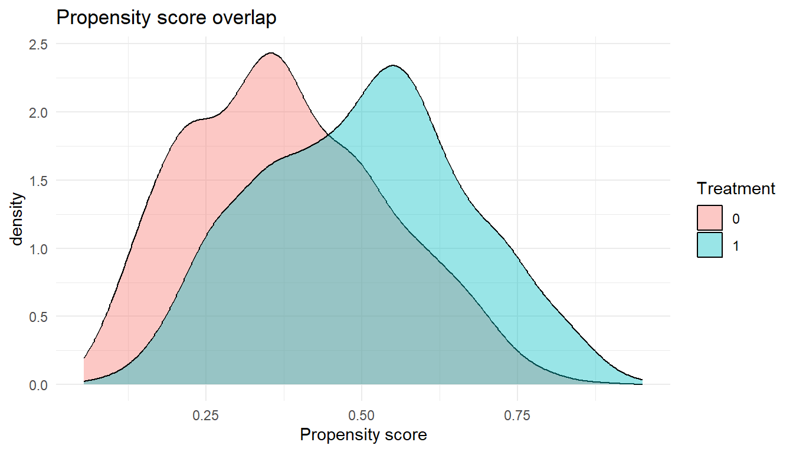

13Chapter 3.5: Diagnostics and Sensitivity Analyses in Targeted Learning
14 Chapter 3.5
14.1 Diagnostics and Sensitivity Analyses in Targeted Learning
A systematic framework for credible causal inference with modern estimators
You run a TMLE analysis and get an ATE of 0.05 with a tight confidence interval. Should you believe it? The answer depends on a series of diagnostic checks that most applied analyses skip or report superficially. The propensity scores might pile up near zero for one treatment group, meaning the estimate hinges on a handful of heavily weighted observations. The Super Learner might be placing all its weight on the intercept model, meaning the nuisance functions are not fitting the data. The influence curve might have a few extreme outliers that drive the entire point estimate. Without checking, you cannot distinguish a credible finding from an artifact.
Naive reporting of a point estimate and confidence interval treats the statistical machinery as a black box. But semiparametric estimators like TMLE and AIPW have specific conditions under which they perform well, and specific ways they can fail. Diagnostics make those conditions visible.
This chapter provides a systematic diagnostic framework organized around four categories: (1) identifiability diagnostics that assess whether the causal assumptions are plausible, (2) nuisance model diagnostics that evaluate whether the outcome regression and propensity score are well-estimated, (3) estimator diagnostics that check whether the TMLE or AIPW machinery is behaving as expected, and (4) sensitivity analyses that quantify robustness to unmeasured confounding and modeling choices. The chapter closes with a practical workflow for what to check first, followed by reporting recommendations.
Learning objectives
Distinguish among assumption diagnostics, model diagnostics, estimator diagnostics, and design diagnostics
Diagnose positivity violations through propensity score analysis, clever covariate inspection, and effective sample size calculations
Evaluate nuisance model performance using Super Learner diagnostics, calibration, and covariate balance
Interpret efficient influence function diagnostics for TMLE and AIPW
Apply sensitivity analysis frameworks including E-values, quantitative bias analysis, and truncation sensitivity
Implement estimand adaptation strategies when identifying assumptions fail
Causal conclusions depend on the identification assumptions described in Chapter 1.2. The diagnostics here apply across TMLE, AIPW, IPTW, longitudinal TMLE, and modified treatment policy estimators. When flexible machine learning is used for nuisance estimation, valid inference typically requires cross-fitting or a cross-validated TMLE variant.
14.2 1. A Diagnostic Framework for Targeted Learning
Every TMLE or AIPW analysis rests on identification assumptions (see Chapter 1.2), nuisance model estimation, and the statistical behavior of the estimator itself. Diagnostics check each layer. This chapter organizes them into four practical categories:
Assumption diagnostics assess whether the identification assumptions (exchangeability, positivity, consistency) are plausible. These are indirect checks: the assumptions themselves are not testable, but their empirical implications can be evaluated. Examples: propensity score overlap, E-values, negative controls.
Model diagnostics assess whether the nuisance functions (\(E[Y \mid A, W]\) and \(P(A \mid W)\)) are well-estimated. Examples: Super Learner cross-validated risk, calibration plots, covariate balance.
Estimator diagnostics assess whether the TMLE or AIPW machinery is behaving as expected. Examples: influence curve distributions, targeting step convergence, sensitivity of the estimate to individual observations.
Design diagnostics are conducted before the outcome data are analyzed, using only treatment and covariate information. Examples: positivity assessment, effective sample size, simulation-based power.
When Diagnostics Should Change the Analysis
Diagnostics are decision points, not just reporting exercises. If positivity diagnostics reveal severe violations, consider redefining the target population or shifting to a modified treatment policy. If model diagnostics show poor nuisance estimation, expand the Super Learner library. If estimator diagnostics reveal instability, apply truncation or acknowledge that the data cannot support the intended inference. Section 8 provides a structured decision framework for these adaptations.
14.3 2. Diagnosing Identifiability Assumptions
The three identification assumptions (exchangeability, positivity, and consistency) connect the causal parameter to the statistical estimand. If any fails, the estimate lacks a causal interpretation regardless of the estimator used. These assumptions are reviewed in detail in Chapter 1.2; this section focuses on diagnostic procedures for assessing their plausibility in a given dataset.
None of the three assumptions is testable from observed data alone. The diagnostics described here are therefore indirect: they assess plausibility through observable implications, quantify sensitivity to violations, and flag empirical patterns that would be unlikely if the assumptions held.
14.3.1 2.1 Exchangeability (No Unmeasured Confounding)
Exchangeability (\(Y(a) \perp\!\!\!\perp A \mid W\)) asserts that the potential outcomes are independent of treatment assignment conditional on the measured covariates \(W\) (see Chapter 1.2 for a full treatment). It is the assumption most frequently questioned by reviewers, regulators, and scientific audiences, because it can never be verified from the data at hand. The diagnostics below provide indirect evidence for or against it.
14.3.1.1 2.1.1 Conceptual DAG Diagnostics
The directed acyclic graph (DAG) is the primary tool for reasoning about exchangeability. A DAG encodes the qualitative causal structure assumed by the analyst: which variables cause which others, which variables are unmeasured, and which causal pathways connect treatment to outcome. The DAG makes the exchangeability assumption explicit by revealing the adjustment set, the set of variables that, when conditioned upon, blocks all backdoor paths from \(A\) to \(Y\).
DAG diagnostics are inherently qualitative and require domain expertise. The analyst should construct the DAG in collaboration with subject-matter experts and then systematically interrogate it by asking the following questions. First, are there common causes of \(A\) and \(Y\) that are not included in \(W\)? Each such variable represents a potential source of unmeasured confounding. Second, does the DAG include variables that are consequences of both \(A\) and \(Y\) (colliders on the path between them), and if so, are any of these variables included in \(W\)? Conditioning on a collider opens a non-causal path and introduces collider bias. Third, does \(W\) include any mediators, variables on the causal pathway from \(A\) to \(Y\)? Conditioning on a mediator blocks part of the causal effect and changes the estimand from the total effect to a direct effect.
The DAG should be drawn before any statistical analysis is conducted, and it should be revisited whenever the analysis plan changes. Changes to the covariate adjustment set \(W\), for example, adding or removing a variable, should be justified by reference to the DAG, not by statistical criteria such as significance in a regression model.
Practical DAG Review Protocol
A structured DAG review with clinical collaborators should proceed as follows. Present the DAG with all proposed nodes and edges. For each edge, ask whether the collaborator agrees that the causal relationship exists and whether its direction is correct. For each variable not included in the DAG, ask whether it could plausibly cause both \(A\) and \(Y\). For each variable included in \(W\), ask whether it could be a consequence of \(A\) (which would make it a mediator or collider). Document disagreements and note which unmeasured variables are most concerning. This record becomes the foundation for the sensitivity analyses described below.
14.3.1.2 2.1.2 Negative Control Exposures and Outcomes
Negative controls are among the most powerful empirical tools for detecting violations of exchangeability. The logic is based on falsification: if the identification assumptions hold, then certain associations should be absent in the data. Finding those associations present provides evidence that the assumptions are violated.
A negative control outcome (NCO) is an outcome variable \(Y^{nc}\) that is known, on substantive grounds, not to be causally affected by \(A\), but that shares the same confounding structure as the primary outcome \(Y\). If the analyst estimates the effect of \(A\) on \(Y^{nc}\) using the same adjustment set \(W\) and the same estimation procedure and finds a non-null association, this constitutes evidence that unmeasured confounding is present. The unmeasured confounder that biases the primary analysis also biases the negative control analysis, but because \(A\) has no true effect on \(Y^{nc}\), any detected association must be attributable to bias.
A negative control exposure (NCE) is a treatment variable \(A^{nc}\) that is known not to causally affect \(Y\), but that shares the same confounding structure as the primary treatment \(A\). Estimating the effect of \(A^{nc}\) on \(Y\) using the same methods provides an analogous falsification test.
## Negative control outcome analysis## Y_nc: an outcome known to be unaffected by treatment A## If the estimated effect is non-null, residual confounding is likely presentif (requireNamespace("tmle", quietly =TRUE)) { nco_fit <- tmle::tmle(Y = dat$Y_negative_control,A = dat$A,W = dat[, covariates],Q.SL.library =c("SL.glm", "SL.glmnet", "SL.ranger"),g.SL.library =c("SL.glm", "SL.glmnet", "SL.ranger") )cat("NCO effect estimate:", round(nco_fit$estimates$ATE$psi, 4), "\n")cat("95% CI:", round(nco_fit$estimates$ATE$CI, 4), "\n")cat("If this interval excludes zero, unmeasured confounding is likely.\n")}
The selection of negative controls requires careful scientific reasoning. The NCO must be plausibly unaffected by \(A\) but must share the confounding structure of the primary outcome. In pharmacoepidemiology, a common NCO is an outcome that occurs before treatment initiation in a new-user design, or an outcome in an organ system unrelated to the drug’s mechanism of action but related to the same health-seeking behaviors that drive treatment selection. The credibility of the negative control analysis depends entirely on the validity of the assumption that \(A\) does not affect \(Y^{nc}\); if this assumption is wrong, a null finding on the NCO does not validate the primary analysis, and a non-null finding does not necessarily indicate confounding.
Negative controls can also be embedded within a formal bias-correction framework. Tchetgen Tchetgen and colleagues have developed methods that use negative control variables not merely as falsification tests but as instruments for estimating and correcting the bias due to unmeasured confounding, under assumptions about the structure of the bias. These methods require additional assumptions, specifically, that the negative control variable satisfies certain conditional independence relations with respect to the unmeasured confounder, but when applicable, they provide a more powerful diagnostic than a simple falsification test.
14.3.1.3 2.1.3 Sensitivity Analysis for Unmeasured Confounding
Because exchangeability cannot be verified from observed data, sensitivity analysis provides a formal framework for assessing how robust causal conclusions are to potential violations. The fundamental question is: how strong would unmeasured confounding need to be to explain away the observed effect, or to change the conclusion in a meaningful way?
E-values. The E-value, introduced by VanderWeele and Ding, provides a simple summary of the minimum strength of association that an unmeasured confounder \(U\) would need to have with both the treatment \(A\) and the outcome \(Y\), conditional on the measured covariates \(W\), to fully explain away the observed treatment-outcome association. For an observed risk ratio \(\text{RR}\), the E-value is defined as:
An E-value of 3.5 means that an unmeasured confounder would need to be associated with at least a 3.5-fold increase in both the probability of treatment and the probability of the outcome, above and beyond the measured covariates, to reduce the observed effect to the null. The E-value can also be computed for the confidence interval limit closest to the null, which provides a measure of how robust the statistical significance (not just the point estimate) is to unmeasured confounding.
## E-value computation for a risk ratio estimate## No external package requiredcompute_evalue <-function(RR) {if (RR >=1) { e_val <- RR +sqrt(RR * (RR -1)) } else {## For RR < 1, compute on the inverse scale RR_inv <-1/ RR e_val <- RR_inv +sqrt(RR_inv * (RR_inv -1)) }return(e_val)}RR_point <-1.8RR_lower <-1.2## lower bound of 95% CI for RRcat("E-value for point estimate (RR =", RR_point, "):",round(compute_evalue(RR_point), 2), "\n")cat("E-value for CI lower bound (RR =", RR_lower, "):",round(compute_evalue(RR_lower), 2), "\n")cat("\nInterpretation: an unmeasured confounder would need associations\n")cat("of at least these magnitudes with both A and Y to explain away\n")cat("the observed effect (or its statistical significance).\n")
E-values have several important limitations that the analyst should communicate transparently. They assume a specific form for the confounding bias (the bounding factor of Ding and VanderWeele), which may not hold in all settings. They provide a worst-case bound, not a point estimate of the bias. They do not account for multiple unmeasured confounders acting jointly. And they require the effect to be expressed on the risk ratio scale, which may involve transformation from other scales.
Quantitative bias analysis. A more flexible framework for assessing sensitivity to unmeasured confounding is quantitative bias analysis (QBA), which directly models the potential bias as a function of parameters that describe the unmeasured confounder. The analyst specifies a set of bias parameters, typically the prevalence of the unmeasured confounder \(U\) in the exposed and unexposed groups, and the association between \(U\) and the outcome, and then computes the bias-adjusted estimate under each combination of parameter values.
Probabilistic QBA extends this framework by placing prior distributions over the bias parameters, reflecting the analyst’s uncertainty about the unmeasured confounding structure. The result is a distribution of bias-adjusted estimates that integrates both statistical uncertainty (from sampling variability) and systematic uncertainty (from unmeasured confounding). The R packages episensr and causalsens provide tools for implementing QBA in practice.
14.3.1.4 2.1.4 Structural Versus Random Confounding
An important conceptual distinction that bears on the choice of diagnostic strategy is the difference between structural confounding and random confounding. Structural confounding arises when the data-generating process includes a common cause of \(A\) and \(Y\) that is not measured and cannot be addressed by the study design. This is the classical unmeasured confounding problem, and it produces systematic bias that does not diminish with increasing sample size. Sensitivity analyses and negative controls are the appropriate diagnostic tools for structural confounding.
Random confounding, by contrast, arises in finite samples when the random assignment of treatment happens to produce imbalances in prognostic factors, even though no systematic confounding mechanism exists. In a randomized trial, random confounding is addressed by randomization inference or covariate adjustment that improves precision. In observational studies, the distinction is less clean, but it remains relevant: if the analyst’s adjustment set \(W\) is rich enough to capture all common causes of \(A\) and \(Y\), then any residual imbalance is random rather than structural, and the bias vanishes asymptotically.
The practical implication is that the analyst should not treat every covariate imbalance as evidence of confounding bias. Standardized mean differences between treatment groups, for example, measure the degree of imbalance in the observed sample, but nonzero standardized differences are expected even when exchangeability holds, particularly in small samples. The relevant question is whether the imbalances are consistent with random variation or whether they reflect systematic confounding that the adjustment set does not address.
14.3.1.5 2.1.5 Measurement Error Versus Omitted Confounders
Another distinction relevant to exchangeability diagnostics is between unmeasured confounders (variables that are entirely absent from the data) and mismeasured confounders (variables that are present but recorded with error). Both can produce bias, but the mechanisms and remedial strategies differ.
Measurement error in a confounder \(W_j\) attenuates the degree to which conditioning on \(W_j\) removes confounding. Even if all common causes of \(A\) and \(Y\) are present in the data, substantial measurement error can leave residual confounding that mimics the effect of an omitted variable. Classical (non-differential) measurement error in a binary confounder, for example, produces bias toward the null of the confounder-adjusted association, which in turn leaves residual confounding bias in the treatment effect estimate.
Diagnostics for measurement error are limited in the absence of validation data. When validation data are available (e.g., a gold-standard measurement on a subsample), regression calibration or multiple imputation for measurement error can be applied. When validation data are not available, the analyst should report the likely direction and magnitude of measurement-error-induced bias, using sensitivity analyses that vary the assumed misclassification rates.
14.3.1.6 2.1.6 Time-Varying Confounding in Longitudinal Settings
In longitudinal settings with time-varying treatment, the exchangeability assumption takes a sequential form: at each time point \(t\), the potential outcomes must be independent of the treatment at time \(t\), conditional on the measured covariate and treatment history up to that point. This sequential exchangeability assumption is both stronger and harder to assess than its point-treatment counterpart, because the set of potential confounders grows with the number of time points, and because time-varying confounders may themselves be affected by prior treatment.
Diagnostics for time-varying confounding must address the specific challenge that a variable \(L_t\) can simultaneously be a confounder of the treatment-outcome relationship at time \(t+1\) and a mediator of the treatment effect at time \(t\). Standard regression adjustment cannot handle this dual role without introducing bias; methods such as LTMLE, IPTW with stabilized weights, and the g-computation formula are designed to address it. The relevant diagnostic question is whether the measured time-varying covariates are sufficient to capture the time-varying confounding structure. This can be assessed by examining whether the DAG at each time point includes all relevant common causes, and by conducting negative control analyses that use time-varying negative control outcomes to detect residual time-varying confounding.
14.3.2 2.2 Positivity and Overlap
Positivity requires that every unit has a nonzero probability of receiving each treatment level conditional on its covariates (see Chapter 1.2). Unlike exchangeability, positivity has direct empirical implications: we can examine whether certain covariate profiles are observed under only one treatment arm. Finite-sample diagnostics can detect practical positivity violations (regions where the estimated probability of treatment is near zero), though not structural violations (regions where the true probability is exactly zero). The diagnostics below go substantially beyond simple propensity score histograms.
14.3.2.1 2.2.1 Propensity Score Distribution Diagnostics
The most fundamental positivity diagnostic is the distribution of estimated propensity scores \(\hat{g}(1 \mid W_i) = \hat{P}(A = 1 \mid W_i)\) across the study population. In the ideal case, the propensity score distributions in the treated and untreated groups overlap substantially, with neither group having mass concentrated near 0 or 1. Separation of these distributions indicates regions of the covariate space where one treatment is strongly preferred, making counterfactual estimation unreliable.
The following executable example simulates data and produces an overlap diagnostic plot.
set.seed(2025)n <-2000W1 <-rnorm(n); W2 <-rbinom(n, 1, 0.4)A <-rbinom(n, 1, plogis(-0.5+0.8* W1 +0.5* W2))Y <-rbinom(n, 1, plogis(-1.5+0.5* A +0.6* W1 +0.3* W2))dat <-data.frame(W1, W2, A, Y)dat$ps <-predict(glm(A ~ W1 + W2, family = binomial, data = dat), type ="response")library(tidyverse)ggplot(dat, aes(x = ps, fill =factor(A))) +geom_density(alpha =0.4) +labs(x ="Propensity score", fill ="Treatment", title ="Propensity score overlap") +theme_minimal()

Figure 14.1: Propensity score distributions by treatment group
Beyond density plots, the analyst should examine the tails of the propensity score distribution with particular care. The tails are where positivity violations concentrate, and they exert disproportionate influence on weighted estimators. A propensity score of 0.01 produces an inverse probability weight of 100, meaning that a single observation effectively represents 100 individuals in the pseudo-population. The fraction of observations with propensity scores below a threshold (e.g., 0.025 or 0.05) or above its complement provides a direct summary of the severity of practical positivity violations.
14.3.2.2 2.2.2 Effective Sample Size Under Weighting
Extreme inverse probability weights reduce the effective sample size, the number of independent observations that contribute meaningfully to the estimate. Even if the nominal sample size is large, the effective sample size under weighting can be much smaller, leading to high variance and unreliable inference.
The effective sample size for IPTW can be computed as:
where \(w_i\) are the inverse probability weights. When all weights are equal, \(n_{\text{eff}} = n\). When weights are highly variable, \(n_{\text{eff}}\) can be much less than \(n\). An effective sample size that is a small fraction of the nominal sample size, say, less than 50%, is a strong signal that positivity violations are degrading the precision of the analysis.
Using the simulated data from above, we can compute the effective sample size:
14.3.2.3 2.2.3 Clever Covariate Diagnostics for TMLE
In TMLE, positivity violations manifest directly through the clever covariate (also known as the fluctuation covariate). For the average treatment effect, the clever covariate for observation \(i\) takes the form:
When propensity scores are near the boundaries, the clever covariate grows without bound, and a small number of observations can dominate the TMLE targeting step. The analyst should examine the distribution of \(|H(A_i, W_i)|\) and flag observations where the magnitude exceeds a threshold that indicates practical instability. A common heuristic is to examine observations where \(|H| > 20\), though the appropriate threshold depends on the sample size and the scale of the outcome.
The clever covariate diagnostic is more informative than a propensity score histogram alone because it directly reflects the influence that each observation exerts on the TMLE update. An observation with a propensity score of 0.02 in the treated group produces \(H = 1/0.02 = 50\), which means the TMLE targeting step effectively treats this observation as 50 times more informative than an observation with a propensity score of 0.50. If only a handful of such observations exist, the TMLE estimate is effectively determined by those observations rather than by the full sample.
14.3.2.4 2.2.4 Diagnostics Based on EIF Magnitude
The efficient influence function (EIF) provides an estimator-independent diagnostic for positivity. For the ATE, the EIF evaluated at the estimated nuisance functions takes the form:
Observations with large \(|\widehat{D}(O_i)|\) are exerting disproportionate influence on the estimate. When the EIF magnitude is large because of near-zero propensity scores (i.e., the \(1/\hat{g}\) terms dominate), this directly indicates a positivity problem. When the EIF magnitude is large because of poor outcome model fit (i.e., the residual terms \(Y_i - \hat{\bar{Q}}\) are large), this indicates a model diagnostics problem. Decomposing the source of large EIF values helps the analyst distinguish between positivity failures and model misspecification.
## EIF-based positivity diagnostics## After fitting TMLE, inspect the influence curveIC <- tmle_fit$estimates$ATE$ICcat("Influence curve diagnostics:\n")cat(" Mean:", round(mean(IC), 6), "(should be near 0)\n")cat(" SD:", round(sd(IC), 4), "\n")cat(" Skewness:", round(moments::skewness(IC), 3), "\n")cat(" Kurtosis:", round(moments::kurtosis(IC), 3), "\n")cat(" Max |IC|:", round(max(abs(IC)), 2), "\n")cat(" |IC| > 3*SD:", sum(abs(IC) >3*sd(IC)), "observations\n")## Ratio of max IC to mean IC - a large ratio signals instabilitycat(" Max/SD ratio:", round(max(abs(IC)) /sd(IC), 1), "\n")
14.3.2.5 2.2.5 Structural Versus Practical Positivity Violations
A structural positivity violation occurs when the true probability of treatment is exactly zero for some subpopulation: \(P(A = 1 \mid W = w) = 0\) for a set of \(w\) values that has positive probability. This arises, for example, when a medication is contraindicated for a specific patient subgroup, or when a treatment did not exist during part of the study period. Structural violations cannot be resolved by increasing the sample size; the counterfactual quantity is undefined for the affected subgroup.
A practical positivity violation occurs when the true probability of treatment is nonzero but very small, making estimation unreliable in finite samples. The estimated propensity scores may be near zero not because treatment is impossible but because it is rare in certain covariate strata. Practical violations can sometimes be mitigated by simplifying the propensity score model (using fewer covariates), but this trades positivity for potential confounding bias.
The distinction matters for the choice of remedial action. Structural violations require changing the estimand, restricting the target population to exclude the affected subgroup, or switching to an estimand that does not require extrapolation into unsupported regions. Practical violations may be addressed by truncation, stabilized weights, or more flexible modeling, though these approaches introduce their own biases and should be accompanied by sensitivity analyses.
14.3.2.6 2.2.6 Weight Truncation Rules and Their Implications
Weight truncation (also called weight clipping or trimming) is the most common approach to mitigating practical positivity violations. The analyst caps the inverse probability weights at some upper bound, or equivalently, restricts the estimated propensity scores to lie within \([\delta, 1 - \delta]\) for some small \(\delta > 0\). In TMLE, this is implemented through the gbound parameter; in IPTW, it is applied directly to the computed weights.
Truncation reduces variance at the cost of introducing bias. The bias arises because truncation effectively changes the estimand: the analyst is no longer targeting the ATE for the full population but rather for a population where extreme propensity scores have been modified. The magnitude of this bias depends on the proportion of observations affected by truncation and on the treatment effect heterogeneity in the truncated region.
Using the simulated data, a simple truncation sensitivity analysis computes the IPW estimate at several truncation thresholds without requiring the tmle package:
If the estimate is stable across truncation levels, positivity is not a major concern. If it changes substantially, the analyst should report the range of estimates and consider whether the full-population ATE is a credible target.
14.3.2.7 2.2.7 Estimand Redefinition and Alternative Interventions
When positivity diagnostics reveal severe violations, the most principled response is often to redefine the estimand rather than to apply truncation heuristics. Several alternatives exist, each of which naturally avoids or mitigates positivity problems.
Restricted population ATE. The analyst restricts the target population to the subset where positivity holds, such as the region where \(\delta \leq \hat{g}(1 \mid W) \leq 1 - \delta\). This changes the causal question from “what is the effect for the whole population?” to “what is the effect for the subpopulation where both treatments are plausible?” The restricted ATE is often more credible than a truncated full-population estimate, because it explicitly acknowledges the limitation of the data.
Modified treatment policies (MTPs). Rather than comparing the counterfactual outcomes under treatment versus no treatment (a static intervention), modified treatment policies define the intervention as a shift in the natural value of treatment. For a continuous exposure \(A\), an MTP might define the intervention as \(d(A, W) = A - \delta\), reducing each individual’s exposure by a fixed amount \(\delta\). For a binary treatment, an MTP might define the intervention as increasing or decreasing the probability of treatment by a specified amount. MTPs naturally respect the support of the data because the intervention is defined relative to the observed treatment rather than requiring extrapolation to a treatment level that may be implausible for some individuals. The lmtp R package implements estimation for MTPs.
Stochastic interventions. Instead of deterministic interventions that assign each individual to a specific treatment level, stochastic interventions assign each individual a probability distribution over treatment levels. For example, the intervention “increase the probability of treatment by 10 percentage points for everyone” is a stochastic intervention. Stochastic interventions can be defined to remain within the support of the observed treatment mechanism, avoiding positivity violations by construction.
Positivity Diagnostics Across Estimators
Different estimators are affected by positivity violations in different ways.
IPTW is the most sensitive to positivity violations because it relies entirely on the treatment model \(g\). Extreme weights directly destabilize the estimate, and the effective sample size can become very small. IPTW with unstabilized weights is particularly vulnerable; stabilized weights \(\text{sw}_i = P(A = a_i) / P(A = a_i \mid W_i)\) reduce variance but do not eliminate the fundamental problem.
AIPW (augmented IPW) is less sensitive than IPTW because the augmentation term \(\hat{\bar{Q}}(a, W) - \hat{\psi}\) provides a “bias correction” that partially compensates for extreme weights when the outcome model is well-specified. However, when both \(g\) and \(\bar{Q}\) are poorly estimated in the low-support region, AIPW can be even more unstable than IPTW.
TMLE mitigates positivity violations through its use of a bounded loss function (logistic fluctuation for bounded outcomes), which constrains the update step and prevents the estimate from being dominated by extreme clever covariate values. However, TMLE is not immune to positivity violations: when propensity scores are near the boundary, the targeting step may fail to converge, or the resulting estimate may have high variance.
LTMLE in longitudinal settings faces compounded positivity challenges because the cumulative treatment mechanism is the product of time-specific mechanisms. Even moderate positivity violations at each time point can produce extreme cumulative weights that destabilize the estimate.
In all cases, the diagnostic approach is the same: examine the distribution of the relevant weights or clever covariates, compute effective sample sizes, and assess the sensitivity of the estimate to truncation. The thresholds for concern differ across estimators, but the logic is uniform.
14.3.3 2.3 Consistency and Intervention Definition
Consistency requires that the observed outcome for an individual who received treatment \(a\) equals that individual’s potential outcome under treatment \(a\) (see Chapter 1.2). This encodes a substantive requirement: the intervention corresponding to “setting \(A = a\)” must be well-defined, and the treatment as recorded in the data must correspond to this intervention without ambiguity.
14.3.3.1 2.3.1 Multiple Versions of Treatment
Consistency fails when the treatment variable \(A\) conflates multiple distinct interventions that may have different effects on the outcome. This is the problem of “multiple versions of treatment” or “treatment variation irrelevance.” For example, if \(A\) indicates whether a patient received a particular drug class, but different drugs within the class have different efficacies, then the potential outcome \(Y(A = 1)\) is not uniquely defined: it depends on which specific drug the patient received.
Diagnostics for treatment versioning begin with a careful examination of the treatment definition. The analyst should ask: conditional on \(A = a\) and \(W = w\), is the treatment received homogeneous across individuals, or does it vary in ways that could affect the outcome? If treatment is heterogeneous, the analyst should consider whether the heterogeneity can be captured by refining the treatment variable (e.g., separating drug classes into individual drugs) or whether it should be treated as a source of residual variability.
Empirically, the analyst can examine whether the treatment effect estimate changes when the treatment definition is refined or coarsened. If subdividing \(A = 1\) into \(A = 1a\) and \(A = 1b\) produces substantially different effect estimates, this suggests that the original treatment variable conflates distinct interventions, and the consistency assumption for the coarser variable may not hold in a meaningful sense.
14.3.3.2 2.3.2 Static, Dynamic, and Stochastic Interventions
The nature of the intervention implicit in the estimand has important implications for both consistency and positivity. A static intervention assigns a fixed treatment level to all individuals (e.g., “set \(A = 1\) for everyone”). A dynamic intervention assigns treatment as a function of individual covariates (e.g., “treat if \(W_1 > c\), do not treat otherwise”). A stochastic intervention assigns a probability distribution over treatment levels that may depend on covariates.
Each type of intervention carries different requirements for consistency. Static interventions require that the single treatment level \(a\) be well-defined and implementable for all individuals in the target population. Dynamic interventions require that the rule \(d(W)\) be well-defined and that the treatment levels it assigns are feasible for each individual given their covariates. Stochastic interventions and modified treatment policies have the weakest consistency requirements because they do not require any individual to receive a treatment level that would never occur naturally.
The analyst should verify that the chosen intervention type is compatible with the data structure and the scientific question. If the estimand involves a static intervention but the data contain individuals for whom that treatment level would never be prescribed (violating both consistency and positivity), the analyst should consider switching to a dynamic or stochastic intervention that respects the natural constraints of the data-generating process.
14.3.3.3 2.3.3 Alignment Between Estimand and Data Structure
A final consistency diagnostic concerns the alignment between the formal estimand and the actual data structure. The analyst should verify that the treatment variable in the data corresponds to the intervention described in the estimand, that the outcome is measured at the time point specified by the estimand, and that the covariates \(W\) are measured before treatment assignment. Misalignment between the estimand and the data structure, for example, conditioning on post-treatment variables, or measuring the outcome before the treatment could plausibly affect it, violates the causal framework and invalidates the analysis regardless of the estimation method used.
In longitudinal settings, alignment diagnostics require verifying the temporal ordering at each time point: covariates \(L_t\) must be measured after treatment \(A_{t-1}\) and before treatment \(A_t\), and the outcome \(Y\) must be measured after the final treatment. Violations of this ordering can introduce immortal time bias, reverse causation, or conditioning on post-treatment variables, each of which undermines the causal interpretation.
14.4 3. Nuisance Model Diagnostics
The nuisance functions, the outcome regression \(\bar{Q}(A, W) = E[Y \mid A, W]\) and the treatment mechanism \(g(A \mid W) = P(A \mid W)\), are the workhorses of semiparametric causal inference. They are called “nuisance” functions not because they are unimportant but because they are not the parameters of primary scientific interest; rather, they are intermediate quantities that must be estimated on the way to estimating the causal parameter. Their quality directly determines the finite-sample performance of TMLE, AIPW, and IPTW estimators. Poor nuisance estimation can produce biased causal estimates, inflated variance, invalid confidence intervals, and misleading conclusions, even when the identification assumptions hold perfectly.
The relationship between nuisance function quality and causal estimator performance depends on the specific estimator. For IPTW, only the treatment mechanism \(g\) matters: if \(g\) is consistently estimated, IPTW is consistent for the causal parameter regardless of how the outcome regression is specified (or whether it is specified at all). For parametric g-computation, only the outcome regression \(\bar{Q}\) matters. For doubly robust estimators, TMLE and AIPW, consistency requires that at least one of \(g\) or \(\bar{Q}\) be consistently estimated, and efficiency is achieved when both are estimated at sufficiently fast rates. This double robustness property does not, however, eliminate the need for nuisance function diagnostics. In finite samples, the quality of both nuisance functions affects the bias, variance, and coverage of doubly robust estimators, and diagnostics provide the evidence needed to assess whether the asymptotic theory is a reliable guide to finite-sample performance.
When machine learning methods are used for nuisance estimation, as is increasingly standard, valid inference typically requires either cross-fitting (sample splitting where different folds are used to estimate nuisance functions and to construct the final estimator) or a cross-validated TMLE variant. Without cross-fitting, the overfitting behavior of flexible learners can invalidate the asymptotic linearity of the causal estimator, producing confidence intervals with incorrect coverage even when the nuisance functions are estimated consistently. The diagnostics described in this section address both the quality of the nuisance function estimates and the conditions under which the cross-fitting or cross-validation procedure is functioning as intended.
14.4.1 3.1 Super Learner Diagnostics
The Super Learner is an ensemble machine learning method that combines predictions from a library of candidate algorithms using cross-validation to select the optimal convex combination. It is the recommended approach for nuisance function estimation in the targeted learning framework because it provides an asymptotic optimality guarantee: the cross-validated risk of the Super Learner converges to the oracle risk (the risk of the best possible convex combination of the candidate learners) as the sample size grows. However, this asymptotic guarantee does not eliminate the need for diagnostics in finite samples. The Super Learner’s performance depends critically on the composition of the candidate library, the cross-validation scheme, and the properties of the data.
14.4.1.1 3.1.1 Cross-Validated Risk Comparisons
The most fundamental Super Learner diagnostic is the comparison of cross-validated risk across candidate learners and the ensemble. For each candidate algorithm \(k\) in the library, the cross-validated risk \(\hat{R}_{CV}^{(k)}\) is the average loss computed on held-out validation folds. For continuous outcomes, the loss is typically mean squared error; for binary outcomes, it is the negative log-likelihood (cross-entropy). The Super Learner ensemble risk \(\hat{R}_{CV}^{SL}\) should be reported alongside the individual learner risks.
## Super Learner diagnostics for the outcome regressionlibrary(SuperLearner)## Define a diverse librarySL.library <-c("SL.glm", "SL.glmnet", "SL.ranger","SL.xgboost", "SL.earth", "SL.nnet")## Fit Super Learner for Q(A,W) = E[Y | A, W]sl_Q <-SuperLearner(Y = dat$Y,X = dat[, c("A", "W1", "W2", "W3")],SL.library = SL.library,family =gaussian(),cvControl =list(V =10))## Cross-validated risk for each learnercat("== Cross-Validated Risk (MSE) ==\n")cv_risks <-data.frame(Learner =c(SL.library, "SuperLearner"),CV_Risk =c(sl_Q$cvRisk, min(sl_Q$cvRisk)),Coefficient =c(sl_Q$coef, NA))cv_risks <- cv_risks[order(cv_risks$CV_Risk), ]print(cv_risks, row.names =FALSE, digits =4)## Ratio of ensemble risk to best single learner riskdiscrete_SL_risk <-min(sl_Q$cvRisk)cat("\nDiscrete SL risk:", round(discrete_SL_risk, 4), "\n")cat("Ensemble improvement:",round((1- sl_Q$cvRisk[which.min(sl_Q$cvRisk)] / discrete_SL_risk) *100, 1),"%\n")
Several patterns in the cross-validated risk comparison are diagnostically informative. When the ensemble risk is substantially lower than that of any individual learner, this indicates that the library captures complementary aspects of the data-generating process, different learners are performing well in different regions of the covariate space, and the ensemble benefits from combining them. When a single learner dominates (receiving nearly all the weight in the convex combination), the ensemble reduces to approximately the discrete Super Learner, which may indicate either that the dominant learner is clearly superior or that the library lacks sufficient diversity. When all learners have similar cross-validated risk, the outcome surface may be relatively simple and well-captured by any reasonable model, or the sample size may be too small to discriminate among learners.
The analyst should also compare the continuous Super Learner (the convex combination with optimized weights) to the discrete Super Learner (the single best learner selected by cross-validation). When the continuous Super Learner offers a meaningful improvement over the discrete Super Learner, this provides evidence that the ensemble is achieving genuine gains from combining predictions. When the two are essentially equivalent, the analyst may choose to report results using the simpler discrete Super Learner for transparency.
14.4.1.2 3.1.2 Learner Weight Distributions
The Super Learner coefficients, the weights assigned to each candidate algorithm in the convex combination, provide a window into which modeling strategies are contributing to the ensemble. Reporting these coefficients is a minimum diagnostic requirement for any analysis that uses the Super Learner for nuisance estimation.
## Learner weight diagnosticscat("== Super Learner Coefficients (Q model) ==\n")coef_df <-data.frame(Learner = SL.library,Weight =round(sl_Q$coef, 4))coef_df <- coef_df[order(-coef_df$Weight), ]print(coef_df, row.names =FALSE)## Effective number of learners (analogous to effective sample size)weights <- sl_Q$coefeff_n_learners <-sum(weights)^2/sum(weights^2)cat("\nEffective number of learners:", round(eff_n_learners, 1),"out of", length(SL.library), "\n")
An effective number of learners close to 1 indicates that the ensemble is dominated by a single algorithm. This is not necessarily problematic, it may simply mean that one learner is clearly best for this problem, but it warrants attention. If the dominant learner is a highly flexible algorithm (such as a deep neural network or a heavily tuned gradient boosting model), the analyst should verify that the cross-validated risk is not overly optimistic due to information leakage or insufficient regularization. If the dominant learner is a simple algorithm (such as a main-terms logistic regression), this may indicate that the outcome surface is genuinely simple, or that the sample size is too small for more flexible learners to outperform simpler ones.
The coefficient distribution should be examined separately for the outcome regression \(\bar{Q}\) and the treatment mechanism \(g\), as the two functions may have different complexity. It is common for the propensity score model to be well-captured by relatively simple learners (because treatment assignment mechanisms in many studies are driven by a moderate number of strong predictors), while the outcome regression requires more flexible modeling (because the relationship between covariates and outcomes is often more complex).
14.4.1.3 3.1.3 Library Sensitivity Analysis
A library sensitivity analysis assesses whether the causal estimate is robust to changes in the Super Learner library composition. The analyst fits the full causal estimator (TMLE or AIPW) using several different library specifications, for example, a library with only parametric learners, a library with only tree-based learners, the full library, and the full library with the addition of highly adaptive lasso, and compares the resulting causal estimates. If the estimates agree closely across library specifications, this provides evidence that the nuisance function estimates are sufficiently accurate across a range of modeling strategies. If the estimates diverge, this indicates that the causal conclusion depends on modeling choices for the nuisance functions, which undermines confidence in any single estimate.
The library sensitivity analysis serves a fundamentally different purpose from the cross-validated risk comparison. The cross-validated risk comparison identifies which learners fit the data best. The library sensitivity analysis identifies whether the causal estimate is sensitive to the choice of learners. It is possible for the cross-validated risk to be similar across libraries (because all libraries fit the data reasonably well) while the causal estimates diverge (because the libraries differ in their extrapolation behavior in regions of the covariate space that are important for the causal contrast). It is also possible for the cross-validated risks to differ substantially while the causal estimates agree (because the differences in model fit occur in regions that are irrelevant to the causal parameter).
14.4.1.4 3.1.4 Overfitting Detection
Overfitting occurs when a learner captures noise in the training data rather than the true underlying function, producing predictions that perform well on the training set but poorly on new data. In the Super Learner framework, cross-validation provides a natural safeguard against overfitting, but it does not eliminate the risk entirely, particularly when the sample size is small relative to the complexity of the learners.
The primary diagnostic for overfitting is the gap between training risk and cross-validated risk for each candidate learner. A large gap indicates that the learner is fitting noise in the training data. For parametric models such as logistic regression, this gap is typically small. For highly flexible learners such as random forests with very deep trees or neural networks with many hidden units, the gap can be substantial.
## Overfitting diagnostic: training risk vs CV risk## Requires refitting each learner on the full training settrain_risks <-numeric(length(SL.library))for (k inseq_along(SL.library)) { pred_train <-predict(sl_Q$fitLibrary[[k]],newdata = dat[, c("A", "W1", "W2", "W3")])if (is.list(pred_train)) pred_train <- pred_train$pred train_risks[k] <-mean((dat$Y - pred_train)^2)}overfit_df <-data.frame(Learner = SL.library,Train_Risk =round(train_risks, 4),CV_Risk =round(sl_Q$cvRisk, 4),Ratio =round(sl_Q$cvRisk / train_risks, 2))cat("== Overfitting Diagnostics ==\n")print(overfit_df, row.names =FALSE)cat("\nRatio >> 1 indicates substantial overfitting.\n")
When overfitting is detected, the analyst has several options. The most direct is to add regularized variants of the offending learner to the library (e.g., replacing a random forest with default settings by a random forest with a minimum node size constraint). Another option is to remove the overfitting learner from the library, though this may reduce the library’s capacity to capture complex patterns. The Super Learner’s cross-validation procedure will naturally downweight overfitting learners in the ensemble, but the analyst should verify that this is occurring by examining the learner coefficients.
14.4.1.5 3.1.5 Cross-Validation Scheme and Screening
The number of cross-validation folds \(V\) affects both the bias and variance of the Super Learner. With \(V = 10\) (the default), each learner is trained on 90% of the data and evaluated on 10%, providing a reasonably unbiased estimate of out-of-sample risk. Smaller values of \(V\) (e.g., \(V = 5\)) reduce computational cost but may produce more biased risk estimates, because each learner is trained on a smaller fraction of the data. Larger values (e.g., \(V = 20\) or leave-one-out) reduce bias but increase variance and computational burden.
For small samples (e.g., \(n < 200\)), the analyst should consider whether \(V = 10\) leaves too few observations in each validation fold for stable risk estimation. In such cases, \(V = 5\) or even \(V = 3\) may be more appropriate, with the understanding that the cross-validated risk estimates will be noisier. Conversely, for very large samples, increasing \(V\) beyond 10 provides minimal benefit and is rarely necessary.
Variable screening within the Super Learner, using a data-adaptive procedure to select a subset of covariates before fitting each candidate learner, can improve performance when the covariate space is high-dimensional. However, screening introduces an additional source of variability that the cross-validation procedure must account for. The screening step should be performed within each cross-validation fold (not on the full dataset before cross-validation), or else the cross-validated risk estimate will be optimistically biased. The SuperLearner package supports this through the method argument, which allows screening wrappers to be applied within the cross-validation loop.
14.4.2 3.2 Outcome Regression Diagnostics
The outcome regression \(\bar{Q}(A, W) = E[Y \mid A, W]\) is used directly by TMLE (as the initial estimate that is subsequently targeted) and by AIPW (as the augmentation term). Even for IPTW, which does not use the outcome regression in its estimating equation, the outcome regression plays an implicit role: when the propensity score model is correct but the outcome regression is misspecified, IPTW remains consistent, but augmenting IPTW with the outcome regression (yielding AIPW) can improve efficiency. Diagnostics for the outcome regression therefore matter for all the major causal estimators, albeit in different ways.
14.4.2.1 3.2.1 Calibration
Calibration measures whether the predicted values from the outcome model align with the observed outcomes. A well-calibrated model satisfies \(E[Y \mid \hat{\bar{Q}}(A, W) = q] = q\) for all values of \(q\) in the range of the predictions. Calibration is a weaker requirement than overall model fit (a well-calibrated model can still have high variance), but miscalibration is a particularly concerning form of misspecification because it indicates systematic bias in the predicted values.
For binary outcomes, calibration is assessed by dividing the predicted probabilities into deciles, computing the observed event rate within each decile, and plotting the observed rates against the predicted rates. A perfectly calibrated model produces points along the 45-degree line. Systematic departure from this line indicates miscalibration: predictions that are too high (overconfident) or too low (underconfident) in specific risk strata.
For continuous outcomes, calibration is assessed by plotting predicted values against observed values, with a smoothed regression line. The slope of the calibration line should be approximately 1, and the intercept should be approximately 0. Substantial departure from these values indicates that the outcome model is systematically over- or under-predicting in certain regions.
Calibration diagnostics are particularly important for TMLE because the TMLE targeting step corrects for bias in the initial outcome regression estimate, but only along the direction of the efficient influence function. Miscalibration that is orthogonal to the EIF direction will not be corrected by the targeting step and will persist in the final causal estimate. While the double robustness property provides protection against misspecification of \(\bar{Q}\) when \(g\) is correctly specified, the finite-sample performance of the estimator improves substantially when \(\bar{Q}\) is well-calibrated.
14.4.2.2 3.2.2 Residual Analysis
Residual analysis for the outcome regression follows the same principles as residual analysis for any regression model, with the important caveat that the goal is not to improve the prediction of \(Y\) per se but to ensure that the outcome model is sufficiently well-specified to support the causal estimator. The residuals \(e_i = Y_i - \hat{\bar{Q}}(A_i, W_i)\) should be examined for systematic patterns that indicate misspecification.
The analyst should plot the residuals against each covariate \(W_j\), against the treatment variable \(A\), and against the predicted values \(\hat{\bar{Q}}(A_i, W_i)\). Systematic trends in these plots indicate that the outcome model is missing important features of the data-generating process. Of particular concern for causal inference are residual patterns that differ between treatment groups: if the residuals show a different relationship with a covariate \(W_j\) in the treated group than in the control group, this suggests that the outcome model is misspecified in a way that directly affects the estimated treatment effect.
## Residual diagnostics for outcome regressionresiduals <- dat$Y - Q_preddat$resid <- residuals## Residuals by treatment groupcat("== Residual Summary by Treatment Group ==\n")cat("Treated: mean =", round(mean(residuals[dat$A ==1]), 4)," SD =", round(sd(residuals[dat$A ==1]), 4), "\n")cat("Control: mean =", round(mean(residuals[dat$A ==0]), 4)," SD =", round(sd(residuals[dat$A ==0]), 4), "\n")## Residuals vs each covariate, faceted by treatmentlibrary(ggplot2)p_resid <-ggplot(dat, aes(x = W1, y = resid, color =factor(A))) +geom_point(alpha =0.3) +geom_smooth(method ="loess", se =FALSE) +facet_wrap(~ A, labeller =labeller(A =c("0"="Control", "1"="Treated"))) +labs(x ="W1", y ="Residual", title ="Residuals vs W1 by Treatment Group") +theme_minimal() +theme(legend.position ="none")print(p_resid)
For continuous outcomes, the analyst should also examine the residual distribution for non-normality and heteroscedasticity. While the asymptotic theory for TMLE and AIPW does not require normally distributed residuals, heavy-tailed residuals can degrade finite-sample performance by inflating the variance of the efficient influence function. Heteroscedasticity, variance that depends on the covariates, is less concerning for the point estimate (which is not affected by heteroscedasticity under correct mean specification) but can affect the efficiency of the estimator and the accuracy of variance estimates.
The cross-validated risk of the outcome regression provides a global summary of model fit that accounts for overfitting. For continuous outcomes, the cross-validated mean squared error \(\hat{R}_{CV} = n^{-1} \sum_{i=1}^{n} (Y_i - \hat{\bar{Q}}_{-i}(A_i, W_i))^2\), where \(\hat{\bar{Q}}_{-i}\) denotes the fit obtained from the training fold that excludes observation \(i\), should be compared to the variance of the outcome \(\text{Var}(Y)\). The ratio \(R^2_{CV} = 1 - \hat{R}_{CV} / \text{Var}(Y)\) provides a cross-validated \(R^2\) that summarizes the proportion of outcome variance explained by the model. For the causal estimator, a higher cross-validated \(R^2\) generally translates to a more efficient estimate, because the outcome model explains more of the variation in \(Y\) and leaves less to be captured by the weighting term.
However, a low cross-validated \(R^2\) does not necessarily indicate a problem for the causal analysis. If the outcome is inherently noisy (high residual variance), the outcome model may be well-specified but unable to explain much of the total variation. In such cases, the causal estimator will have higher variance but need not be biased. The analyst should distinguish between a low \(R^2\) due to irreducible noise and a low \(R^2\) due to model misspecification by examining whether more flexible learners can achieve a substantially higher \(R^2\) than simpler learners. If they cannot, the residual variance is likely irreducible; if they can, the simpler model is misspecified.
14.4.2.4 3.2.4 Subgroup Predictive Performance
The global cross-validated risk may mask important heterogeneity in model performance across subgroups. The outcome model may fit well on average but poorly in a subgroup that is critical for the causal question, for example, a subgroup with low propensity scores where the weighting terms in the EIF are large. Poor outcome model performance in high-weight subgroups will disproportionately affect the causal estimate.
The analyst should compute the cross-validated risk separately for clinically relevant subgroups, for treatment groups, and, most importantly, for strata defined by the propensity score. If the outcome model performs substantially worse in the tails of the propensity score distribution (where weights are largest), this indicates that the outcome model’s misspecification is concentrated precisely where it matters most for the causal estimate.
## Subgroup prediction performance## Assess outcome model fit across propensity score stratadat$ps_quintile <-cut(dat$ps, breaks =quantile(dat$ps, probs =0:5/5),include.lowest =TRUE, labels =1:5)subgroup_perf <-do.call(rbind, lapply(1:5, function(q) { idx <- dat$ps_quintile == qdata.frame(PS_quintile = q,n =sum(idx),MSE =round(mean(residuals[idx]^2), 4),Mean_abs_resid =round(mean(abs(residuals[idx])), 4),Mean_PS =round(mean(dat$ps[idx]), 3) )}))cat("== Outcome Model Performance by PS Quintile ==\n")print(subgroup_perf, row.names =FALSE)cat("\nLarger MSE in extreme PS quintiles suggests misspecification\n")cat("where weights are largest and the causal estimate is most sensitive.\n")
14.4.2.5 3.2.5 Prediction Stability Across Cross-Validation Folds
A final outcome regression diagnostic concerns the stability of predictions across cross-validation folds. In cross-fitted estimation, the predicted values \(\hat{\bar{Q}}_{-k}(A_i, W_i)\) for observations in fold \(k\) are produced by a model trained on all folds except \(k\). If the model is stable, these predictions should be similar regardless of which fold is held out. If the predictions vary substantially across folds, that is, if \(\hat{\bar{Q}}_{-k}(A_i, W_i)\) for a fixed observation \(i\) changes appreciably depending on \(k\), this indicates that the outcome model is sensitive to the specific training sample, which is a form of instability that can degrade the performance of the causal estimator.
This diagnostic can be implemented by computing, for each observation, the standard deviation of its predicted values across leave-one-fold-out fits, and examining the distribution of these standard deviations. Large prediction variability, particularly for observations with extreme propensity scores, signals potential instability in the causal estimate.
14.4.3 3.3 Treatment Mechanism Diagnostics
The treatment mechanism \(g(A \mid W) = P(A \mid W)\) enters the causal estimator through the inverse probability weights (in IPTW), the clever covariate (in TMLE), and the augmentation term (in AIPW). Diagnostics for the treatment mechanism are fundamentally different from diagnostics for the outcome regression, because the goal of the treatment model is not prediction per se but confounding control. A treatment model that predicts treatment assignment with high accuracy may produce extreme weights that destabilize the estimator. A treatment model that sacrifices some predictive accuracy for smoother weights may produce a more reliable causal estimate. The diagnostics in this section reflect this distinction.
14.4.3.1 3.3.1 Propensity Score Distribution and Tail Behavior
The distribution of estimated propensity scores has already been discussed in the context of positivity diagnostics (Section 2.2). Here, the focus shifts from positivity as an identification assumption to the practical implications of propensity score distributions for nuisance function estimation quality. Specifically, the analyst should examine whether the estimated propensity scores are well-separated from the boundaries (0 and 1), whether the distribution is smooth and unimodal, and whether there are systematic differences in the distribution across subgroups defined by key covariates.
A multimodal propensity score distribution, with distinct clusters of high and low propensity scores and few observations in between, suggests that the treatment assignment mechanism is driven by a small number of strong predictors that effectively partition the population into groups with very different treatment probabilities. While this pattern does not necessarily indicate a problem with the propensity score model (the model may be correctly capturing the true treatment mechanism), it signals a challenging estimation environment where the causal estimate will depend heavily on a few observations with moderate propensity scores.
Covariate balance is the most practically relevant diagnostic for the treatment model, because it directly measures whether the weighting or adjustment procedure has succeeded in making the treatment groups comparable with respect to measured confounders. The standardized mean difference (SMD) for each covariate \(W_j\) is defined as:
where \(\bar{W}_{j,a}\) and \(s_{j,a}^2\) are the mean and variance of \(W_j\) in treatment group \(a\). After weighting by the inverse probability weights, the weighted SMD should be computed using the weighted means and variances. A common threshold for adequate balance is \(|\text{SMD}| < 0.1\), though this is a convention rather than a principled cutoff, and the appropriate threshold depends on the context.
Covariate balance should be assessed not only for the first moments (means) of each covariate but also for higher-order terms, squares, interactions, and quantiles, when these are relevant to the outcome. A treatment model may achieve balance on the marginal means of each covariate while leaving substantial imbalance in their joint distribution or in their nonlinear transformations. For high-dimensional covariate sets, examining balance for all pairwise interactions may be impractical, but the analyst should at a minimum assess balance for squares of continuous covariates and for interactions between the strongest confounders.
14.4.3.3 3.3.3 Balance in High Dimensions
When the covariate set \(W\) is high-dimensional, individual SMDs for each covariate become unwieldy to examine, and it becomes necessary to use summary measures of overall balance. Several such measures are available.
The maximum absolute SMD across all covariates provides a worst-case measure. If the maximum SMD is below the threshold, all individual SMDs are also below the threshold. The average absolute SMD provides a central tendency measure. The post-weighting C-statistic (the area under the ROC curve for predicting treatment from covariates, using the weighted sample) provides a global measure of residual imbalance: a C-statistic near 0.5 indicates that the covariates no longer discriminate between treatment groups after weighting, suggesting adequate balance. A C-statistic substantially above 0.5 indicates residual imbalance.
## Post-weighting C-statistic## Fit a logistic regression predicting A from W using weighted datapost_wt_model <-glm(A ~ W1 + W2 + W3, data = dat,family = binomial, weights = ipw)post_wt_pred <-predict(post_wt_model, type ="response")## C-statistic (AUC)if (requireNamespace("pROC", quietly =TRUE)) { auc_post <- pROC::auc(dat$A, post_wt_pred)cat("Post-weighting C-statistic:", round(as.numeric(auc_post), 3),"(ideal = 0.5)\n")}
14.4.3.4 3.3.4 Balance Versus Predictive Accuracy
A critical conceptual distinction in treatment model diagnostics is between predictive accuracy and confounding control. These are related but not identical objectives, and optimizing one does not necessarily optimize the other.
Predictive accuracy, measured by the AUC, Brier score, or cross-validated log-likelihood, quantifies how well the propensity score model discriminates between treated and untreated individuals. High predictive accuracy is desirable insofar as it indicates that the model has captured the factors that drive treatment assignment. However, a highly predictive propensity score model can produce extreme weights (because it assigns very high or very low probabilities of treatment to many individuals), which increases the variance of the causal estimator and can produce practical positivity violations.
Confounding control, measured by covariate balance after weighting, quantifies whether the treatment model has succeeded in making the treatment groups comparable. A simpler propensity score model that sacrifices some predictive accuracy may produce more stable weights and better balance, particularly when the true treatment mechanism involves interactions or nonlinearities that the simpler model does not capture. In such cases, the simpler model “smooths” the propensity scores toward the center of the distribution, reducing weight variability at the cost of potentially incomplete confounding control.
The analyst should report both predictive accuracy and covariate balance, and should recognize that the two may conflict. When they do conflict, covariate balance is the more directly relevant diagnostic for the causal analysis, because the goal of the treatment model is not to predict treatment but to remove confounding. A treatment model that achieves perfect covariate balance with moderate predictive accuracy is preferable, for causal inference purposes, to a treatment model that achieves high predictive accuracy with poor balance and extreme weights.
The Propensity Score Paradox
An important subtlety in propensity score estimation has been called the “propensity score paradox”: including more covariates in the propensity score model can worsen the performance of the causal estimator, even when all included covariates are genuine confounders. This occurs because each additional covariate increases the dimensionality of the propensity score model, which can produce more variable propensity score estimates and more extreme weights, particularly in small samples. The paradox is most acute when the additional covariates are strong predictors of treatment but weak predictors of the outcome (instruments or near-instruments), because these variables increase weight variability without substantially reducing confounding bias.
The practical implication is that the propensity score model should not be constructed by including every available covariate. Variables that are strong predictors of the outcome but weak predictors of treatment should generally be included (they reduce variance without increasing weight instability). Variables that are strong predictors of treatment but weak predictors of the outcome should be included cautiously, as they may increase variance more than they reduce bias. Variables that predict neither treatment nor outcome should be excluded. The DAG provides the theoretical framework for these decisions; the diagnostics described in this section provide the empirical evidence needed to evaluate their consequences.
14.5 4. Double Robust and EIF-Based Diagnostics
The efficient influence function (EIF) occupies a central position in the theory of semiparametric causal inference. It defines the efficient estimator, characterizes the double robustness property, determines the semiparametric efficiency bound, and provides the basis for inference. Diagnostics derived from the EIF therefore provide a uniquely powerful lens for evaluating the performance of doubly robust estimators such as TMLE and AIPW. This section develops a comprehensive set of EIF-based diagnostics, beginning with the mathematical structure of the EIF and proceeding to its diagnostic implications.
14.5.1 4.1 Efficient Influence Function Structure
For the average treatment effect \(\psi_0 = E[E[Y \mid A=1, W] - E[Y \mid A=0, W]]\) under the nonparametric model, the efficient influence function at the true data-generating distribution \(P_0\) is:
where \(\bar{Q}_0(a, W) = E_0[Y \mid A=a, W]\) is the true outcome regression and \(g_0(1 \mid W) = P_0(A=1 \mid W)\) is the true treatment mechanism. This function has mean zero under the true distribution: \(E_{P_0}[D(O; \bar{Q}_0, g_0, \psi_0)] = 0\).
The EIF can be decomposed into three functionally distinct components that have different diagnostic implications:
The \(g\)-dependent weighting component:\(\frac{I(A=a)}{g_0(a \mid W)}(Y - \bar{Q}_0(a, W))\) captures the contribution of the inverse probability weighting. When \(g\) is misspecified, this component introduces bias. When \(g\) is near zero, this component becomes large, introducing variance. The magnitude of this component is directly related to the clever covariate in TMLE and the weighting term in IPTW.
The outcome regression component:\(\bar{Q}_0(1, W) - \bar{Q}_0(0, W)\) captures the contribution of the outcome model to the causal contrast. When \(\bar{Q}\) is well-specified, this component provides a consistent estimate of the conditional average treatment effect (CATE), and the weighting component serves only to improve efficiency. When \(\bar{Q}\) is misspecified, the weighting component corrects for the bias, provided \(g\) is correctly specified.
The centering constant:\(-\psi_0\) ensures that the EIF has mean zero. In practice, \(\psi_0\) is replaced by the estimated causal parameter \(\hat{\psi}\).
The double robustness property is encoded in the structure of the EIF. The key identity is:
This expression equals zero whenever either \(g = g_0\) (the treatment model is correct) or \(\bar{Q} = \bar{Q}_0\) (the outcome model is correct). The bias of the estimator is therefore a product of the errors in both nuisance functions, a second-order term that converges to zero faster than either individual error, provided both are estimated at rates faster than \(n^{-1/4}\). This rate condition is the formal requirement for the “doubly robust” estimator to achieve \(\sqrt{n}\)-consistency when both nuisance functions are estimated with machine learning.
14.5.2 4.2 Empirical Mean of the EIF as a Diagnostic
The empirical mean of the estimated EIF, \(P_n \hat{D} = n^{-1}\sum_{i=1}^{n} \hat{D}(O_i)\), is one of the most informative single diagnostic quantities for a doubly robust estimator.
For TMLE, the empirical mean of the EIF is exactly zero by construction. TMLE works by updating the initial outcome regression estimate \(\hat{\bar{Q}}^0\) through a fluctuation that solves the empirical EIF equation \(P_n \hat{D} = 0\). If the TMLE implementation reports a nonzero empirical EIF mean, this indicates a numerical problem in the targeting step, typically a convergence failure in the logistic fluctuation regression, or a boundary condition that prevents the update from achieving the desired solution.
For AIPW (the one-step estimator), the empirical mean of the EIF is not exactly zero but converges to zero at rate \(o_P(n^{-1/2})\) under correct specification of at least one nuisance function. A nonzero empirical EIF mean for AIPW indicates either finite-sample bias or nuisance function misspecification. The magnitude of this mean, relative to the standard error of the estimate, provides a rough diagnostic: if \(|P_n \hat{D}| / \text{SE}(\hat{\psi})\) is large (say, greater than 0.5), the finite-sample bias may be substantial relative to the sampling variability.
## Empirical EIF mean diagnostic## For TMLEIC_tmle <- tmle_fit$estimates$ATE$ICcat("== Empirical EIF Mean ==\n")cat("TMLE: mean(IC) =", format(mean(IC_tmle), digits =6),"(should be ~0 by construction)\n")cat(" |mean(IC)| / SE =",round(abs(mean(IC_tmle)) / (sd(IC_tmle) /sqrt(length(IC_tmle))), 4), "\n")## For AIPW (one-step estimator)## Manually compute the one-step EIFQ1 <-predict(Q_model, newdata =transform(dat, A =1))Q0 <-predict(Q_model, newdata =transform(dat, A =0))ps <- dat$psA <- dat$AY <- dat$YEIF_onestep <- A/ps * (Y - Q1) - (1-A)/(1-ps) * (Y - Q0) + Q1 - Q0psi_onestep <-mean(EIF_onestep) ## one-step estimate## Center the EIFEIF_centered <- EIF_onestep - psi_onestepcat("\nAIPW: mean(EIF) =", format(mean(EIF_centered), digits =6), "\n")cat(" |mean(EIF)| / SE =",round(abs(mean(EIF_centered)) / (sd(EIF_centered) /sqrt(length(EIF_centered))), 4), "\n")
Comparing the empirical EIF mean between TMLE and AIPW provides a useful cross-check. When both are near zero, this provides reassurance that the nuisance functions are adequate. When the AIPW empirical EIF mean is substantially nonzero while the TMLE empirical EIF mean is zero (by construction), the difference highlights the bias-correction role of the TMLE targeting step. If the TMLE targeting step is performing a large correction (moving the estimate substantially from the initial plug-in value to the targeted value), this is a signal that the initial outcome regression estimate was substantially biased along the EIF direction, and the analyst should investigate why.
14.5.3 4.3 Variance Decomposition and Outlier Influence
The variance of the estimated EIF, \(\hat{\sigma}^2 = n^{-1}\sum_{i=1}^{n} \hat{D}(O_i)^2\), is the basis for the Wald-type confidence interval \(\hat{\psi} \pm z_{1-\alpha/2} \hat{\sigma} / \sqrt{n}\). Examining the contributions of individual observations to this variance reveals whether the estimate is driven by a broad base of observations or dominated by a few outliers.
The contribution of observation \(i\) to the total EIF variance is proportional to \(\hat{D}(O_i)^2\). The analyst should examine the distribution of \(|\hat{D}(O_i)|\) and identify observations with disproportionately large contributions. A useful summary is the fraction of the total EIF variance attributable to the top 1%, 5%, and 10% of observations by \(|\hat{D}(O_i)|\). If a small fraction of observations accounts for a large fraction of the variance, the estimate is fragile: removing or perturbing these observations would substantially change the result.
## Variance decomposition and outlier influenceIC <- tmle_fit$estimates$ATE$ICIC_sq <- IC^2total_var <-sum(IC_sq)## Contribution of top observationsIC_ranked <-sort(IC_sq, decreasing =TRUE)n <-length(IC)cat("== EIF Variance Decomposition ==\n")for (pct inc(0.01, 0.05, 0.10)) { top_n <-ceiling(pct * n) top_var <-sum(IC_ranked[1:top_n])cat(sprintf(" Top %.0f%% of observations (n=%d): %.1f%% of total variance\n", pct *100, top_n, 100* top_var / total_var))}## Leave-one-out influence on the point estimate## The change in psi_hat from removing observation i is approximately IC_i / nloo_influence <- IC / ncat("\n== Leave-One-Out Influence ==\n")cat("Max influence magnitude:", round(max(abs(loo_influence)), 6), "\n")cat("Point estimate:", round(mean(IC) +mean(Q1 - Q0), 4), "\n")cat("Max possible shift from removing one obs:",round(max(abs(loo_influence)), 6), "\n")## Flag high-influence observationsthreshold <-3*sd(IC)high_influence_idx <-which(abs(IC) > threshold)cat("\nObservations with |IC| > 3*SD:", length(high_influence_idx), "\n")if (length(high_influence_idx) >0&length(high_influence_idx) <=20) {cat("\nHigh-influence observations:\n") high_inf_df <-data.frame(Index = high_influence_idx,IC =round(IC[high_influence_idx], 3),A = dat$A[high_influence_idx],PS =round(dat$ps[high_influence_idx], 4),Y =round(dat$Y[high_influence_idx], 3) )print(high_inf_df, row.names =FALSE)}
The source of large EIF values is diagnostically important. An observation can have a large \(|\hat{D}(O_i)|\) for two distinct reasons. First, the inverse probability weighting component may be large because \(g(A_i \mid W_i)\) is near zero, which indicates a positivity problem. Second, the residual \((Y_i - \hat{\bar{Q}}(A_i, W_i))\) may be large because the outcome model is poorly calibrated for observation \(i\), which indicates a model fit problem. The analyst can decompose each large EIF value into its weighting and residual components to determine the source.
## Decompose large EIF values into weighting and residual components## For treated observationsweight_component <-ifelse(dat$A ==1, 1/dat$ps, 1/(1- dat$ps))residual_component <-ifelse(dat$A ==1,abs(dat$Y - Q1),abs(dat$Y - Q0))## For high-influence observationsif (length(high_influence_idx) >0) { decomp_df <-data.frame(Index = high_influence_idx,IC_magnitude =round(abs(IC[high_influence_idx]), 3),Weight =round(weight_component[high_influence_idx], 2),Residual =round(residual_component[high_influence_idx], 3),Primary_source =ifelse( weight_component[high_influence_idx] >5, "Positivity",ifelse(residual_component[high_influence_idx] >2*sd(dat$Y),"Model fit", "Mixed")) )cat("\n== Source Decomposition of High-Influence Observations ==\n")print(decomp_df, row.names =FALSE)}
This decomposition directly informs the appropriate remedial action. If high-influence observations are driven primarily by extreme weights (positivity problems), the analyst should consider truncation, estimand redefinition, or modified treatment policies. If they are driven primarily by large residuals (model fit problems), the analyst should consider expanding the Super Learner library, adding relevant covariates to the outcome model, or investigating whether the large residuals represent genuine outliers in the data.
14.5.4 4.4 Targeting Step Convergence in TMLE
The TMLE targeting step updates the initial outcome regression estimate \(\hat{\bar{Q}}^0\) by fitting a univariate logistic regression (for bounded outcomes) or linear regression (for unbounded outcomes) of the outcome \(Y\) on the clever covariate \(H(A, W)\), using \(\hat{\bar{Q}}^0\) as an offset. The coefficient \(\epsilon\) from this regression determines the magnitude of the update: the targeted estimate is \(\hat{\bar{Q}}^*(A, W) = \text{expit}(\text{logit}(\hat{\bar{Q}}^0(A, W)) + \epsilon H(A, W))\) for bounded outcomes. Several aspects of this targeting step admit diagnostic examination.
The magnitude of \(\epsilon\). The fluctuation parameter \(\epsilon\) quantifies the correction applied by the targeting step. A small \(\epsilon\) (close to zero) indicates that the initial outcome regression estimate was already nearly unbiased along the EIF direction, the plug-in estimate and the targeted estimate are nearly identical. A large \(\epsilon\) indicates substantial bias correction, which may signal poor initial estimation of \(\bar{Q}\) or \(g\), or it may reflect a genuine difference between the plug-in and efficient estimators. As a rough heuristic, \(|\epsilon| > 0.5\) warrants investigation.
Convergence of the targeting step. The logistic fluctuation regression should converge without warnings. Convergence failures can occur when the clever covariate has extreme values (due to positivity violations) or when the initial outcome regression produces predicted values near the boundary of the parameter space (0 or 1 for probabilities). Convergence warnings from the glm call in the targeting step should be reported and investigated.
The plug-in versus targeted estimate. The difference between the initial plug-in estimate \(\hat{\psi}^0 = n^{-1}\sum_i (\hat{\bar{Q}}^0(1, W_i) - \hat{\bar{Q}}^0(0, W_i))\) and the targeted estimate \(\hat{\psi}^* = n^{-1}\sum_i (\hat{\bar{Q}}^*(1, W_i) - \hat{\bar{Q}}^*(0, W_i))\) measures the impact of the targeting step. A large difference indicates that the initial estimate was substantially biased, and the targeting step is performing an important correction. While this correction is theoretically valid, a large correction in finite samples may indicate that the estimator is operating in a regime where the asymptotic theory is unreliable.
Iterative TMLE. Standard TMLE performs a single targeting step. Iterative TMLE repeats the targeting step, refitting the fluctuation regression using the updated outcome regression from the previous iteration, until the empirical EIF equation \(P_n \hat{D} = 0\) is solved to within a specified tolerance. Iterative TMLE can improve finite-sample performance when a single targeting step is insufficient to solve the EIF equation, which can occur when the clever covariate distribution is highly skewed or when the initial estimate is far from the truth.
Collaborative TMLE (C-TMLE). C-TMLE adaptively selects which components of the nuisance function to target, using a data-adaptive procedure that balances bias reduction and variance control. C-TMLE is particularly relevant when positivity violations are present, because it can choose to target the outcome regression more aggressively in regions where the propensity score is bounded away from zero and less aggressively in regions where positivity violations would introduce excessive variance. Diagnostics for C-TMLE include the sequence of selected targeting steps, the cross-validated risk at each step, and the comparison with standard TMLE. When C-TMLE and standard TMLE produce substantially different estimates, this is a signal that the standard TMLE is being influenced by observations in low-support regions, and C-TMLE’s adaptive approach may be more appropriate.
14.5.5 4.5 Failure Modes of AIPW Versus TMLE
AIPW and TMLE are both doubly robust estimators that target the same statistical estimand, but they differ in important ways that affect their diagnostic profiles and failure modes.
AIPW (one-step estimator). The AIPW estimator is computed as:
AIPW is a closed-form estimator that does not iterate. It adds a single correction term to the plug-in estimate. For bounded outcomes (e.g., probabilities), AIPW can produce estimates outside the parameter space \([0, 1]\), because the correction term is not constrained. This boundary violation is a diagnostic red flag: it indicates that the correction term is so large that it overwhelms the plug-in estimate, which typically occurs when extreme weights coincide with large residuals.
TMLE (substitution estimator). TMLE produces an updated estimate of the outcome regression that is then used to compute the plug-in causal parameter. Because the updated outcome regression is constrained to respect the parameter space (through the logistic submodel for bounded outcomes), TMLE cannot produce estimates outside \([0, 1]\) for probability-scale parameters. This substitution property provides a built-in safeguard against extreme estimates.
The practical implications of these differences for diagnostics are as follows.
First, if the AIPW estimate is outside the parameter space, this is a definitive signal of instability, and the analyst should prefer TMLE (which respects the bounds) or investigate the source of the instability. Second, if AIPW and TMLE produce similar estimates, this provides reassurance that both estimators are functioning adequately. Third, if they produce different estimates, the difference can be attributed to the targeting procedure (TMLE iterates to solve the EIF equation, while AIPW applies a single linear correction) and to the bounding behavior (TMLE constrains the outcome regression to the parameter space).
When double robustness masks instability. A subtle failure mode of both AIPW and TMLE occurs when both nuisance functions are moderately misspecified but their errors partially cancel, producing a point estimate that appears reasonable but confidence intervals with incorrect coverage. This failure mode is difficult to detect from the data alone, because the usual diagnostics (EIF mean near zero, reasonable variance) may all look acceptable. The most effective diagnostic for this failure mode is a simulation study using a data-generating process calibrated to the observed data: if the simulated coverage is substantially below nominal, the double robustness is not providing adequate protection in the finite sample at hand.
Another manifestation of masked instability occurs when the EIF variance is dominated by a small number of observations. The point estimate may be stable (because the mean of the EIF is constrained to be near zero), but the variance estimate may be unreliable, leading to confidence intervals that are either too narrow (if the high-influence observations happen to have small EIF values in the particular sample) or too wide (if they happen to have large values). The variance decomposition diagnostics described in Section 4.3 are designed to detect this pattern.
14.6 5. Estimator Performance Diagnostics
The preceding sections addressed diagnostics for the identification assumptions (Section 2), the nuisance function estimates (Section 3), and the influence function structure (Section 4). This section turns to the performance of the causal estimator itself: given the fitted nuisance functions and the chosen estimation procedure, how reliable is the resulting causal estimate? Estimator performance diagnostics assess whether the finite-sample behavior of the estimator is consistent with its asymptotic theory, whether the variance estimates and confidence intervals are trustworthy, and whether alternative estimation strategies would produce substantially different conclusions.
14.6.1 5.1 Finite-Sample Bias and Monte Carlo Diagnostics
The asymptotic theory for TMLE and AIPW guarantees \(\sqrt{n}\)-consistency and asymptotic normality under conditions on the nuisance function estimation rates. In finite samples, however, these guarantees may not hold. The most direct way to assess finite-sample performance is through Monte Carlo simulation: the analyst defines a data-generating process (DGP), draws many samples, applies the estimation procedure to each sample, and computes summary statistics that characterize the estimator’s behavior.
The key metrics for Monte Carlo diagnostics are:
Bias: \(\text{Bias} = E[\hat{\psi}] - \psi_0\), estimated by the mean of the estimates across simulations minus the true parameter value. Nonzero bias indicates that the estimator is not centered on the truth in finite samples, either because the nuisance functions are insufficiently well-estimated or because the sample size is too small for the asymptotic bias correction to be effective.
Root mean squared error (RMSE): \(\text{RMSE} = \sqrt{E[(\hat{\psi} - \psi_0)^2]}\), which combines bias and variance into a single measure of estimation accuracy.
Empirical coverage: The fraction of simulated confidence intervals that contain the true parameter value. Nominal 95% coverage should be near 0.95. Coverage below nominal indicates that the confidence intervals are too narrow, the variance is underestimated or the estimator’s sampling distribution departs from normality.
Average confidence interval width: The mean width of the confidence intervals across simulations. Comparing the average width to the empirical standard deviation of the estimates provides a diagnostic for variance estimation: if the average width is substantially narrower than \(2 \times 1.96 \times \text{SD}(\hat{\psi})\), the variance is underestimated.
## Monte Carlo simulation for TMLE performance diagnosticsrun_simulation <-function(n, B =500, true_ATE =0.5) { results <-data.frame(ATE =numeric(B),SE =numeric(B),CI_lower =numeric(B),CI_upper =numeric(B),covers =logical(B) )for (b in1:B) {## Generate data from known DGP W1 <-rnorm(n) W2 <-rbinom(n, 1, 0.3) A <-rbinom(n, 1, plogis(-0.5+0.4* W1 +1.5* W2)) Y <- true_ATE * A +0.8* W1 -0.3* W2 +rnorm(n, sd =0.5) W <-data.frame(W1 = W1, W2 = W2) fit <- tmle::tmle(Y = Y, A = A, W = W,Q.SL.library ="SL.glm",g.SL.library ="SL.glm") results$ATE[b] <- fit$estimates$ATE$psi results$SE[b] <-sqrt(fit$estimates$ATE$var.psi) results$CI_lower[b] <- fit$estimates$ATE$CI[1] results$CI_upper[b] <- fit$estimates$ATE$CI[2] results$covers[b] <- (fit$estimates$ATE$CI[1] <= true_ATE) & (fit$estimates$ATE$CI[2] >= true_ATE) }cat("== Monte Carlo Simulation Results ==\n")cat("Sample size:", n, " | Simulations:", B, "\n")cat("True ATE:", true_ATE, "\n\n")cat("Bias:", round(mean(results$ATE) - true_ATE, 4), "\n")cat("Empirical SD:", round(sd(results$ATE), 4), "\n")cat("Mean estimated SE:", round(mean(results$SE), 4), "\n")cat("SE ratio (mean SE / empirical SD):",round(mean(results$SE) /sd(results$ATE), 3), "\n")cat("RMSE:", round(sqrt(mean((results$ATE - true_ATE)^2)), 4), "\n")cat("Coverage:", round(mean(results$covers), 3), "\n")cat("Mean CI width:", round(mean(results$CI_upper - results$CI_lower), 4), "\n")invisible(results)}## Run at different sample sizes to assess finite-sample behavior## sim_200 <- run_simulation(n = 200)## sim_500 <- run_simulation(n = 500)## sim_1000 <- run_simulation(n = 1000)
The design of the simulation DGP is as important as the summary statistics. The analyst should construct DGPs that stress-test the specific features of the problem at hand, rather than using generic simulations. Relevant stress tests include:
Near-positivity violations. Setting the treatment mechanism to produce propensity scores near the boundaries (e.g., \(P(A=1 \mid W) \in [0.02, 0.98]\)) and examining how much the bias, RMSE, and coverage degrade relative to a well-separated DGP.
Outcome model misspecification. Fitting the outcome regression with a simpler model (e.g., main-terms logistic regression) when the true outcome surface includes interactions or nonlinearities, and assessing whether the double robustness of TMLE/AIPW compensates for the misspecification.
Rare outcomes. For binary outcomes with low event rates, the effective information about the treatment effect is limited, and the normal approximation may be poor. Simulations with event rates of 1%–5% can reveal whether the confidence intervals have adequate coverage.
Small samples. Sample sizes below 200 are particularly challenging for semiparametric estimators that rely on cross-fitting, because the training folds may be too small for the nuisance function estimators to perform well. Simulations at \(n = 50, 100, 200\) can identify the minimum sample size at which the estimator is reliable.
14.6.2 5.2 Bootstrap Diagnostics
The nonparametric bootstrap provides an independent assessment of the estimator’s variability that can be compared to the influence-function-based variance estimate. For each bootstrap replicate \(b = 1, \ldots, B\), the analyst draws a sample of size \(n\) with replacement from the original data, applies the full estimation procedure (including nuisance function estimation), and records the resulting causal estimate \(\hat{\psi}^{(b)}\). The bootstrap standard error is the standard deviation of \(\hat{\psi}^{(b)}\) across replicates.
The bootstrap serves several diagnostic purposes in the context of causal inference.
Variance estimation validation. The bootstrap standard error can be compared to the influence-function-based standard error \(\hat{\sigma}/\sqrt{n}\). Agreement between the two provides reassurance that the influence-function-based inference is reliable. Disagreement, particularly when the bootstrap standard error is substantially larger than the influence-function-based standard error, indicates that the asymptotic variance is underestimated, which may occur when the influence curve distribution is heavy-tailed, when the sample size is small, or when the nuisance functions are estimated with high variability.
Normality assessment. The distribution of bootstrap estimates \(\{\hat{\psi}^{(b)}\}_{b=1}^{B}\) should be approximately normal if the asymptotic theory is a good guide to finite-sample behavior. A histogram or Q-Q plot of the bootstrap estimates can reveal skewness, bimodality, or heavy tails that would invalidate Wald-type confidence intervals.
Confidence interval comparison. Bootstrap percentile intervals (using the 2.5th and 97.5th percentiles of the bootstrap distribution) and BCa intervals (bias-corrected and accelerated) can be compared to Wald-type intervals. When these interval types disagree, the Wald-type interval is likely unreliable, and the analyst should consider using the bootstrap intervals instead or investigating the source of the disagreement.
An important caveat about bootstrap diagnostics for TMLE and AIPW is that the bootstrap may not be asymptotically valid for these estimators when highly adaptive machine learning methods are used for nuisance estimation. The bootstrap validity requires that the nuisance estimator behaves sufficiently smoothly as a function of the data, which may not hold for tree-based methods or other discontinuous learners. For this reason, the bootstrap is best used as a diagnostic tool (to check the plausibility of influence-function-based inference) rather than as the primary inference method. When the bootstrap and influence function approaches agree, the influence-function-based inference is likely reliable. When they disagree, the analyst should investigate the source of the disagreement rather than automatically defaulting to the bootstrap.
14.6.3 5.3 Influence Curve Stability and Normality
The Wald-type confidence interval for TMLE and AIPW relies on the central limit theorem applied to the estimated influence curve: \(\sqrt{n}(\hat{\psi} - \psi_0) \approx n^{-1/2}\sum_{i=1}^{n} \hat{D}(O_i) \xrightarrow{d} N(0, \sigma^2)\). This approximation is valid when the influence curve distribution is sufficiently well-behaved, specifically, when it has finite variance and satisfies a Lindeberg-type condition. In practice, the approximation can fail when the influence curve distribution is heavy-tailed, highly skewed, or contains outliers that dominate the sum.
The analyst should assess the distribution of the estimated influence curve using the following diagnostics.
Q-Q plots. A normal Q-Q plot of the estimated influence curve values \(\{\hat{D}(O_i)\}_{i=1}^{n}\) provides a visual assessment of normality. Systematic departures from the diagonal line indicate non-normality. Heavy tails (S-shaped departures) are the most common and most concerning pattern, as they indicate that a few observations exert disproportionate influence on the estimator.
Skewness and kurtosis. The skewness and excess kurtosis of the influence curve distribution provide numerical summaries. For a normal distribution, the skewness is 0 and the kurtosis is 3 (excess kurtosis is 0). Positive skewness indicates that the right tail is heavier than the left; negative skewness indicates the opposite. Excess kurtosis greater than 3 indicates heavy tails relative to the normal distribution. As a rough guideline, \(|\text{skewness}| > 1\) or excess kurtosis \(> 5\) warrant concern about the normality approximation.
Formal normality tests. The Shapiro-Wilk test provides a formal test of normality. However, its interpretation should be tempered by the fact that, in large samples, even trivial departures from normality will produce significant \(p\)-values. The test is most useful in moderate samples (\(n = 100\)–\(500\)) where the power is sufficient to detect meaningful departures but not so great as to reject normality for negligible reasons.
## Influence curve stability diagnosticsIC <- tmle_fit$estimates$ATE$ICn <-length(IC)cat("== Influence Curve Distribution ==\n")cat("Mean:", round(mean(IC), 6), "\n")cat("SD:", round(sd(IC), 4), "\n")cat("Skewness:", round(moments::skewness(IC), 3), "\n")cat("Kurtosis:", round(moments::kurtosis(IC), 3), "(normal = 3)\n")cat("Min:", round(min(IC), 3), " Max:", round(max(IC), 3), "\n")## Q-Q plotqqnorm(IC, main ="Normal Q-Q Plot of Influence Curve")qqline(IC, col ="red")## Shapiro-Wilk test (on subsample if n > 5000)if (n <=5000) { sw <-shapiro.test(IC)cat("\nShapiro-Wilk: W =", round(sw$statistic, 4)," p =", round(sw$p.value, 4), "\n")} else { sw <-shapiro.test(sample(IC, 5000))cat("\nShapiro-Wilk (subsample of 5000): W =",round(sw$statistic, 4)," p =", round(sw$p.value, 4), "\n")}## Tail contributioncat("\nTail weight:\n")for (k inc(2, 3, 4, 5)) { n_extreme <-sum(abs(IC) > k *sd(IC)) expected_normal <-round(n *2*pnorm(-k), 1)cat(sprintf(" |IC| > %d*SD: %d observed vs %.1f expected under normality\n", k, n_extreme, expected_normal))}
When the influence curve distribution is substantially non-normal, the analyst has several options. The bootstrap (Section 5.2) provides an alternative basis for confidence intervals that does not rely on the normal approximation. Small-sample corrections (Section 5.4) can improve the accuracy of Wald-type intervals. In some cases, the non-normality is driven by a small number of extreme observations associated with near-positivity violations, and truncation or estimand redefinition (Section 8) can address the root cause.
14.6.4 5.4 Small-Sample Corrections
When the sample size is small relative to the complexity of the estimation problem, several corrections can improve the finite-sample performance of TMLE and AIPW.
Cross-validated TMLE (CV-TMLE). Standard TMLE estimates the nuisance functions on the full sample and then applies the targeting step on the same sample. This can produce a subtle form of overfitting: the targeting step may exploit information about the relationship between the nuisance function estimates and the outcome that is specific to the sample at hand, producing an estimate that is overly optimistic. CV-TMLE addresses this by using cross-fitting: the data are split into \(V\) folds, nuisance functions are estimated on each training fold, and the targeting step is applied using the validation fold predictions. The final estimate averages across folds.
CV-TMLE is recommended as the default approach when machine learning methods are used for nuisance estimation, because it ensures that the estimator’s asymptotic linearity holds under weaker conditions on the nuisance function estimation rates. The diagnostic question is whether CV-TMLE and standard TMLE produce substantially different results. If they do, this indicates that the standard TMLE estimate is affected by overfitting, and the CV-TMLE estimate should be preferred.
## CV-TMLE vs standard TMLE comparison## Standard TMLEfit_standard <- tmle::tmle(Y = dat$Y, A = dat$A,W = dat[, c("W1", "W2", "W3")],Q.SL.library =c("SL.glm", "SL.glmnet", "SL.ranger"),g.SL.library =c("SL.glm", "SL.glmnet", "SL.ranger"))## CV-TMLE (if available via drtmle or tmle3)if (requireNamespace("drtmle", quietly =TRUE)) { fit_cvtmle <- drtmle::drtmle(Y = dat$Y, A = dat$A,W = dat[, c("W1", "W2", "W3")],SL_Q =c("SL.glm", "SL.glmnet", "SL.ranger"),SL_g =c("SL.glm", "SL.glmnet", "SL.ranger"),cvFolds =10 )cat("== CV-TMLE vs Standard TMLE ==\n")cat("Standard TMLE:", round(fit_standard$estimates$ATE$psi, 4), "\n")cat("CV-TMLE:", round(fit_cvtmle$drtmle$ATE$est, 4), "\n")cat("Difference:", round(fit_standard$estimates$ATE$psi - fit_cvtmle$drtmle$ATE$est, 4), "\n")}
Finite-sample variance corrections. The standard influence-function-based variance estimator \(\hat{\sigma}^2/n\) can be anticonservative in small samples because it does not account for the variability in the nuisance function estimates. Several corrections have been proposed. The most straightforward is the degrees-of-freedom correction \(\hat{\sigma}^2 / (n - p)\), where \(p\) is the number of parameters estimated in the nuisance functions, but this is difficult to define precisely for nonparametric estimators. A more principled approach is the sandwich variance estimator that accounts for the estimation of \(g\) and \(\bar{Q}\), as implemented in the drtmle package.
Higher-order TMLE. Higher-order TMLE extends the standard TMLE by solving not only the first-order EIF equation but also higher-order estimating equations that provide additional bias correction. This can improve coverage in moderate samples where the first-order bias correction is insufficient. The practical implementation of higher-order TMLE is more complex than standard TMLE and is currently available only in specialized software.
The diagnostic question for all small-sample corrections is whether they make a meaningful difference. If the corrected and uncorrected estimates agree, the sample size is likely adequate for the standard approach. If they disagree, the corrected estimate should be preferred, and the analyst should report the disagreement as evidence that the sample size is marginal for the intended analysis.
14.6.5 5.5 Comparative Diagnostics Across Estimators
Running multiple estimators on the same data provides an informal but valuable robustness diagnostic. The logic is straightforward: if TMLE, AIPW, IPTW, and g-computation all produce similar estimates, the analyst can be more confident that the result is not an artifact of a particular estimation strategy. If the estimates diverge, the pattern of divergence can reveal which aspects of the estimation are driving the differences.
The pattern of agreement and disagreement among estimators is diagnostically informative in specific ways.
TMLE and AIPW agree but IPTW disagrees. This pattern suggests that the outcome model is contributing meaningful information. TMLE and AIPW both use the outcome model (through the augmentation term), which partially compensates for inaccuracies in the propensity score model. IPTW relies entirely on the propensity score model and is therefore more sensitive to propensity score misspecification and positivity violations.
All doubly robust estimators agree but differ from g-computation. This pattern suggests that the outcome model is misspecified and the propensity score model is providing a useful correction. G-computation relies entirely on the outcome model, while the doubly robust estimators correct for outcome model bias using the propensity score.
All estimators agree. This provides the strongest evidence (among the diagnostics available from a single dataset) that the result is robust to the choice of estimation strategy. However, agreement does not prove correctness: if all estimators are biased in the same direction (due to unmeasured confounding, for example), they will agree on a biased answer.
All estimators disagree. This is the most concerning pattern. It indicates that the data do not strongly identify the causal parameter, small changes in the estimation approach lead to large changes in the estimate. The analyst should investigate the source of the disagreement (positivity violations, outcome model instability, small sample size) and consider whether the intended estimand is credibly supported by the data.
When Asymptotic Normality Is Unreliable
The Wald-type confidence interval \(\hat{\psi} \pm z_{1-\alpha/2} \hat{\sigma}/\sqrt{n}\) relies on the approximation \(\sqrt{n}(\hat{\psi} - \psi_0) \approx N(0, \sigma^2)\). This approximation can fail in several identifiable circumstances, each of which has diagnostic indicators:
Heavy-tailed influence curves. When the kurtosis of the estimated influence curve exceeds 5–6, the normal approximation converges slowly, and the Wald interval may have poor coverage. Diagnostic: kurtosis of the influence curve, Q-Q plots, tail weight analysis.
Near-positivity violations. When propensity scores are near the boundaries, the influence curve has a heavy right tail (for observations with large \(1/g\) terms), and the sum \(n^{-1/2}\sum_i D(O_i)\) may not be well-approximated by a normal distribution even for moderate \(n\). Diagnostic: maximum \(|H|\) or \(|D|\), effective sample size, proportion of observations with extreme weights.
Small effective sample size. When the effective sample size (Section 2.2.2) is much smaller than the nominal sample size, the central limit theorem is effectively applied to a smaller sample, requiring more observations for the approximation to be accurate. Diagnostic: ESS ratio, comparison of IF-based and bootstrap standard errors.
Rare outcomes. For binary outcomes with event rates below 5%, the influence curve distribution is highly skewed (because most observations contribute small positive values and a few contribute large negative values, or vice versa). Diagnostic: event rate, skewness of the influence curve.
Multiple testing. When the analyst estimates effects for many subgroups or time points, the normal approximation errors accumulate. Diagnostic: number of comparisons, agreement between nominal and empirical coverage in simulation.
When any of these indicators suggest that asymptotic normality is unreliable, the analyst should consider alternative inference approaches: bootstrap confidence intervals, permutation tests, small-sample TMLE corrections, or, most importantly, honest acknowledgment that the confidence intervals may have incorrect coverage.
14.7 6. Longitudinal and Dynamic Regime Diagnostics
Longitudinal causal inference, estimating the effect of a time-varying treatment strategy on an outcome measured at the end of follow-up, introduces diagnostic challenges that go qualitatively beyond their point-treatment counterparts. The data structure involves repeated measurements of covariates \(L_t\), treatments \(A_t\), and possibly intermediate outcomes, at time points \(t = 0, 1, \ldots, T\), with a final outcome \(Y\) measured at time \(T+1\) or at the end of follow-up. The identification assumptions (exchangeability, positivity, consistency) must hold at every time point, and the estimation procedures (LTMLE, longitudinal IPTW, g-computation) must perform adequately at each step. Diagnostics must therefore be applied at each time point individually and then aggregated across the entire time horizon.
14.7.1 6.1 Time-Specific Positivity Diagnostics
The positivity assumption in longitudinal settings requires that at each time \(t\), conditional on the observed history \(\bar{H}_t = (\bar{L}_t, \bar{A}_{t-1})\), every treatment level has positive probability: \(P(A_t = a_t \mid \bar{H}_t) > 0\) for all \(a_t\) in the support of \(A_t\) and all \(\bar{H}_t\) in the support of \(\bar{H}_t\). Unlike the point-treatment setting, the conditioning set grows with time: at each subsequent time point, the propensity score model must condition on a richer history, making positivity violations progressively more likely as the number of time points increases.
The analyst should examine the distribution of estimated time-specific propensity scores \(\hat{g}_t(A_t \mid \bar{H}_t)\) at each time point separately. This reveals which time points are most problematic for positivity and whether the violations grow worse over time (as is common in observational longitudinal data, where the remaining population becomes increasingly selected).
## Time-specific positivity diagnostics for longitudinal data## Assume data in long format with columns: id, time, L1, L2, A, Ytime_points <-sort(unique(dat_long$time))ps_summary <-data.frame(time = time_points,n_obs =NA_integer_,mean_ps =NA_real_,min_ps =NA_real_,pct_below_005 =NA_real_,pct_above_095 =NA_real_,ess_ratio =NA_real_)for (t_idx inseq_along(time_points)) { t <- time_points[t_idx] dat_t <- dat_long[dat_long$time == t, ]## Fit time-specific propensity score model## conditioning on history up to time tif (t ==0) { ps_mod_t <-glm(A ~ L1 + L2, data = dat_t, family = binomial) } else { ps_mod_t <-glm(A ~ L1 + L2 + A_lag1 + L1_lag1,data = dat_t, family = binomial) } ps_t <-predict(ps_mod_t, type ="response") wt_t <-ifelse(dat_t$A ==1, 1/ps_t, 1/(1- ps_t)) ess_t <-sum(wt_t)^2/sum(wt_t^2) ps_summary$n_obs[t_idx] <-nrow(dat_t) ps_summary$mean_ps[t_idx] <-round(mean(ps_t), 3) ps_summary$min_ps[t_idx] <-round(min(ps_t), 4) ps_summary$pct_below_005[t_idx] <-round(100*mean(ps_t <0.05), 1) ps_summary$pct_above_095[t_idx] <-round(100*mean(ps_t >0.95), 1) ps_summary$ess_ratio[t_idx] <-round(ess_t /nrow(dat_t), 3)}cat("== Time-Specific Positivity Diagnostics ==\n")print(ps_summary, row.names =FALSE)
A common pattern in longitudinal observational data is that positivity violations are mild at early time points and become increasingly severe at later time points. This occurs because the treatment history \(\bar{A}_{t-1}\) becomes an increasingly strong predictor of current treatment \(A_t\) as \(t\) increases, individuals who have been on treatment for several consecutive periods are very likely to continue, and vice versa. The analyst should identify the time point at which positivity violations become problematic and consider whether the analysis should be restricted to a shorter time horizon, or whether alternative estimands (such as modified treatment policies) should be used.
14.7.2 6.2 Cumulative Weight Diagnostics
In longitudinal IPTW, each individual’s weight is the product of time-specific inverse probability weights across all time points:
The multiplicative structure of cumulative weights has a critical consequence: even moderate variability in the time-specific weights can produce extreme cumulative weights. If the per-period weights have a coefficient of variation (CV) of \(c\), the cumulative weight over \(T\) periods has a CV that grows approximately exponentially with \(T\). This means that a longitudinal study with 10 time points and modest per-period weight variability can easily produce cumulative weights that span several orders of magnitude, with a few individuals receiving weights that are thousands of times larger than the average.
## Cumulative weight diagnostics for longitudinal IPTW## Assume weights have been computed for each individual at each time point## and stored in a matrix: rows = individuals, columns = time points## wt_matrix[i, t] = 1 / g_t(A_{i,t} | H_{i,t})## Cumulative weightscum_wt <-apply(wt_matrix, 1, prod)cat("== Cumulative Weight Diagnostics ==\n")cat("Number of time points:", ncol(wt_matrix), "\n")cat("Number of individuals:", nrow(wt_matrix), "\n\n")cat("Per-period weight summary (averaged across time):\n")per_period_stats <-apply(wt_matrix, 2, function(w) {c(mean =mean(w), sd =sd(w), max =max(w), cv =sd(w)/mean(w))})cat(" Mean CV across periods:",round(mean(per_period_stats["cv", ]), 3), "\n")cat(" Max per-period weight:",round(max(per_period_stats["max", ]), 1), "\n\n")cat("Cumulative weight summary:\n")cat(" Mean:", round(mean(cum_wt), 2), "\n")cat(" SD:", round(sd(cum_wt), 2), "\n")cat(" Median:", round(median(cum_wt), 2), "\n")cat(" Max:", round(max(cum_wt), 1), "\n")cat(" CV:", round(sd(cum_wt)/mean(cum_wt), 2), "\n")## Effective sample size under cumulative weightingess_cum <-sum(cum_wt)^2/sum(cum_wt^2)cat(" ESS:", round(ess_cum, 1), "out of", nrow(wt_matrix), "\n")cat(" ESS ratio:", round(ess_cum /nrow(wt_matrix), 3), "\n\n")## Weight concentrationcum_wt_sorted <-sort(cum_wt, decreasing =TRUE)n_ind <-length(cum_wt)for (pct inc(0.01, 0.05, 0.10)) { top_n <-ceiling(pct * n_ind) top_share <-sum(cum_wt_sorted[1:top_n]) /sum(cum_wt)cat(sprintf(" Top %.0f%% of individuals: %.1f%% of total weight\n", pct *100, top_share *100))}
When cumulative weights are extreme, the analyst should investigate whether the extremity arises from a single problematic time point (which might be addressed by improving the propensity score model at that time point) or from the accumulation of moderate weights across many time points (which is a structural feature of the longitudinal design and may require a change in estimand). Plotting the time-specific contribution to the cumulative weight, for example, the log-weight at each time point for the individuals with the most extreme cumulative weights, can reveal the source of the problem.
14.7.3 6.3 Stabilized Weight Diagnostics
Stabilized weights replace the marginal probability in the numerator of the IPTW weights, reducing variance without introducing bias (under correct model specification). For longitudinal IPTW, the stabilized weights are:
The numerator model conditions only on treatment history, while the denominator model conditions on both treatment and covariate history. Several diagnostic properties of stabilized weights follow from this structure.
Mean of stabilized weights. Under correct specification of both the numerator and denominator models, the mean of the stabilized weights across individuals should be approximately 1. Departure from 1 indicates model misspecification in either the numerator or the denominator model. The direction of the departure provides a crude diagnostic: if the mean is substantially greater than 1, the denominator model may be overfit (producing extreme denominators that are not adequately offset by the numerator); if substantially less than 1, the numerator model may be overfit.
Variance of stabilized weights. The variance of the stabilized weights should be substantially smaller than the variance of the unstabilized weights. If the ratio of stabilized to unstabilized weight variance is close to 1, the numerator model is not providing meaningful stabilization, which may indicate that the numerator model is too simple (e.g., it does not include treatment history) or that the confounders included in the denominator are not strong predictors of treatment conditional on treatment history.
## Stabilized weight diagnosticscat("== Stabilized vs Unstabilized Weights ==\n")cat("Unstabilized: mean =", round(mean(cum_wt), 3)," SD =", round(sd(cum_wt), 3)," max =", round(max(cum_wt), 1), "\n")cat("Stabilized: mean =", round(mean(stab_wt), 3)," SD =", round(sd(stab_wt), 3)," max =", round(max(stab_wt), 1), "\n")cat("\nVariance ratio (stab/unstab):",round(var(stab_wt) /var(cum_wt), 3), "\n")cat("Stabilized weight mean (should be ~1):",round(mean(stab_wt), 4), "\n")cat("ESS unstabilized:", round(sum(cum_wt)^2/sum(cum_wt^2), 1), "\n")cat("ESS stabilized:", round(sum(stab_wt)^2/sum(stab_wt^2), 1), "\n")
Diagnostic plots for stabilized weights. The analyst should plot the distribution of stabilized weights (on a log scale, to visualize the full range) and examine them for evidence of extreme values. A well-behaved stabilized weight distribution is roughly symmetric on the log scale and concentrated near 1. Long tails or multimodality suggest problematic subgroups where the treatment mechanism is poorly modeled.
14.7.4 6.4 Sequential Double Robustness in LTMLE
Longitudinal TMLE (LTMLE) extends the TMLE framework to time-varying treatments by applying the targeting step sequentially, working backward from the final time point to the first. At each time point \(t\), LTMLE targets the conditional mean of a pseudo-outcome that incorporates the targeted estimates from all subsequent time points. This sequential targeting procedure achieves a property called sequential double robustness: the estimator is consistent if, at each time point, either the outcome regression or the treatment mechanism is consistently estimated. This is a stronger form of double robustness than the point-treatment version, because the “either/or” condition is permitted to vary across time points.
Diagnostics for LTMLE must therefore be applied at each time point in the sequential procedure. The relevant diagnostics at each time point \(t\) include the following.
Time-specific targeting step. The magnitude of the fluctuation parameter \(\epsilon_t\) at each time point indicates how much bias correction the targeting step is performing. A pattern of increasing \(|\epsilon_t|\) at later time points suggests that the initial outcome regression is becoming less accurate as the prediction horizon grows, which is expected but should be monitored.
Time-specific influence curve. The LTMLE influence curve can be decomposed into time-specific components. Large contributions from a specific time point indicate that the estimate is particularly sensitive to the nuisance function estimates at that time point.
Sequential residual diagnostics. At each time point, the analyst should examine the residuals from the outcome regression, \(\tilde{Y}_t - \hat{\bar{Q}}_t(\bar{A}_t, \bar{L}_t)\), where \(\tilde{Y}_t\) is the pseudo-outcome constructed from the targeted estimates at subsequent time points. Systematic patterns in these residuals indicate model misspecification at time \(t\).
## LTMLE diagnostics (using the ltmle package)if (requireNamespace("ltmle", quietly =TRUE)) {library(ltmle)## Fit LTMLE ltmle_fit <-ltmle(data = dat_wide,Anodes =grep("^A_", names(dat_wide), value =TRUE),Lnodes =grep("^L_", names(dat_wide), value =TRUE),Ynodes ="Y",abar =list(treatment =rep(1, T), control =rep(0, T)),SL.library =c("SL.glm", "SL.glmnet", "SL.ranger"),estimate.time =FALSE )cat("== LTMLE Results ==\n")summary(ltmle_fit)## Extract and examine cumulative g## The ltmle package provides diagnostic summariescat("\n== LTMLE Cumulative g Diagnostics ==\n") cum_g <- ltmle_fit$cum.gif (!is.null(cum_g)) {cat("Min cumulative g:", round(min(cum_g), 6), "\n")cat("Mean cumulative g:", round(mean(cum_g), 4), "\n")cat("Observations with cum_g < 0.01:", sum(cum_g <0.01), "\n") }}
An important practical consideration for LTMLE diagnostics is that the sequential nature of the procedure means that errors can propagate: a poor outcome regression at time \(t\) produces biased pseudo-outcomes at time \(t-1\), which in turn affects the targeting step at \(t-1\). This error propagation is not unique to LTMLE, it affects all longitudinal estimators, but it makes comprehensive time-point-by-time-point diagnostics essential.
14.7.5 6.5 Diagnostics for Modified Treatment Policies and Stochastic Interventions
Modified treatment policies (MTPs) and stochastic interventions address many of the positivity challenges inherent in longitudinal settings by defining interventions that respect the natural support of the treatment mechanism. An MTP defines the intervention at each time point as a function of the natural treatment value and the covariate history: \(d_t(A_t, \bar{H}_t)\). For example, \(d_t(A_t, H_t) = A_t - \delta\) reduces a continuous exposure by a fixed amount \(\delta\) at each time point. Because the intervention is defined relative to the observed treatment, it naturally stays within the support of the treatment distribution, avoiding the structural positivity violations that can arise with static interventions.
The lmtp package implements estimation for MTPs and stochastic interventions in longitudinal settings. The key nuisance quantity for MTPs with continuous treatments is the density ratio \(r_t = g_t(d_t(A_t, H_t) \mid H_t) / g_t(A_t \mid H_t)\), which replaces the inverse probability weight used for binary treatments. Diagnostics for MTP estimation therefore focus on the quality of the density ratio estimates rather than on propensity scores and inverse probability weights.
Support verification. The analyst should verify that the shifted treatment value \(d_t(A_t, H_t)\) lies within the support of the observed treatment distribution at each time point. If the shift moves the treatment outside the observed range for some individuals, the estimand is not identified for those individuals, and the analysis may produce biased results.
Density ratio diagnostics. The estimated density ratios \(\hat{r}_t\) should be examined for extreme values, analogously to the examination of inverse probability weights. Extreme density ratios indicate regions where the shifted and natural treatment distributions are poorly overlapping, which undermines the reliability of the estimate. The effective sample size under density ratio weighting provides a summary of the overall weight variability.
Continuous treatment smoothness. For continuous exposures, the propensity score is replaced by the conditional density \(g_t(a_t \mid H_t)\), which must be estimated rather than directly modeled through a binary regression. Density estimation is harder than probability estimation, particularly in the tails of the distribution. The analyst should assess whether the density estimates are smooth and well-behaved, using kernel density plots at representative covariate values and examining the sensitivity of the causal estimate to the bandwidth or binning parameters used in the density estimation.
## MTP diagnostics with lmtpif (requireNamespace("lmtp", quietly =TRUE)) {library(lmtp)## Define a shift function: reduce continuous exposure by delta shift_function <-function(data, trt) { data[[trt]] -0.5## shift exposure down by 0.5 units }## Fit lmtp estimator lmtp_fit <-lmtp_tmle(data = dat_wide,trt =grep("^A_", names(dat_wide), value =TRUE),outcome ="Y",baseline =grep("^W_", names(dat_wide), value =TRUE),time_vary =list(grep("^L_", names(dat_wide), value =TRUE)),shift = shift_function,learners_trt =c("SL.glm", "SL.ranger"),learners_outcome =c("SL.glm", "SL.ranger"),folds =5 )cat("== MTP (lmtp) Results ==\n")print(lmtp_fit)## Check: does the shifted value stay within observed support? trt_cols <-grep("^A_", names(dat_wide), value =TRUE)for (col in trt_cols) { shifted <- dat_wide[[col]] -0.5 obs_range <-range(dat_wide[[col]]) n_outside <-sum(shifted < obs_range[1] | shifted > obs_range[2])cat(sprintf(" %s: %.0f obs (%.1f%%) shifted outside observed range [%.2f, %.2f]\n", col, n_outside, 100* n_outside /nrow(dat_wide), obs_range[1], obs_range[2])) }}
14.8 7. Simulation-Based Design Diagnostics
Design diagnostics are conducted before the outcome data are analyzed, or, ideally, before they are accessed at all, using the treatment and covariate data to assess whether the planned analysis can credibly estimate the target causal parameter. This section develops a formal framework for simulation-based design diagnostics that addresses a fundamental limitation of the diagnostics described in earlier sections: most of the diagnostics in Sections 2–5 are computed after the analysis is complete and therefore cannot inform whether the analysis should have been attempted in the first place. Design diagnostics fill this gap by providing prospective evidence about estimator performance under plausible conditions.
The central idea is straightforward. The analyst uses the observed covariate and treatment data to calibrate a family of data-generating processes (DGPs) that are consistent with what is known about the study design. Each DGP specifies a plausible outcome-generating mechanism. The analyst then draws many simulated datasets from each DGP, applies the planned estimator to each, and evaluates the resulting bias, variance, coverage, and power. If the estimator performs well across a range of plausible DGPs, this provides confidence that the planned analysis is sound. If it performs poorly, the analyst has the opportunity to modify the estimand, the estimator, or the study design before committing to the analysis.
14.8.1 7.1 Outcome-Blind Simulation
The key feature that distinguishes design diagnostics from ordinary simulation studies is that the outcome data are not used in the construction of the simulation DGPs. This separation is essential for maintaining the integrity of the pre-specified analysis plan. If the analyst uses the observed outcomes to calibrate the DGP, the simulation is no longer a prospective diagnostic but a retrospective assessment, and the resulting modifications to the analysis plan are data-driven in a way that can invalidate the pre-specification.
In practice, outcome-blind simulation proceeds in three steps.
Step 1: Characterize the treatment mechanism. The analyst fits a model for \(P(A \mid W)\) using the observed treatment and covariate data. This model captures the key features of the study design: which covariates drive treatment assignment, how much overlap exists between treatment groups, and where positivity violations are most severe.
Step 2: Specify plausible outcome-generating mechanisms. The analyst defines a family of outcome models \(E[Y \mid A, W]\) that span the range of plausible relationships between the covariates, treatment, and outcome. These models should be informed by subject-matter knowledge and prior studies, not by the observed outcomes. The family should include both simple models (main effects only) and complex models (interactions, nonlinearities) to assess how robust the estimator is to model complexity.
Step 3: Simulate and evaluate. For each outcome model in the family, the analyst generates simulated outcomes using the observed covariates and treatments (or covariates and treatments drawn from the fitted treatment model), applies the planned estimator, and records the results.
## Outcome-blind design diagnostics## Step 1: Fit treatment model using only observed (A, W) datag_model <- SuperLearner::SuperLearner(Y = dat$A,X = dat[, c("W1", "W2", "W3")],family =binomial(),SL.library =c("SL.glm", "SL.glmnet", "SL.ranger"))ps_hat <-predict(g_model, type ="response")$pred## Step 2: Define a family of plausible outcome models## (Outcome data NOT used here - parameters from prior knowledge)generate_outcome <-function(A, W, scenario) {if (scenario =="simple_linear") { mu <-0.3* A +0.5* W$W1 -0.2* W$W2 } elseif (scenario =="interaction") { mu <-0.3* A +0.5* W$W1 -0.2* W$W2 +0.4* A * W$W1 } elseif (scenario =="nonlinear") { mu <-0.3* A +sin(W$W1) +0.3* W$W2 * W$W1^2 } elseif (scenario =="null") { mu <-0.5* W$W1 -0.2* W$W2 } Y <- mu +rnorm(length(A), sd =0.5)return(Y)}## Step 3: Evaluate estimator performancescenarios <-c("simple_linear", "interaction", "nonlinear", "null")B <-300design_results <-data.frame(scenario =character(),true_ATE =numeric(),bias =numeric(),empirical_SE =numeric(),mean_SE =numeric(),coverage =numeric(),power =numeric(),stringsAsFactors =FALSE)for (sc in scenarios) { ates <- se_ests <- covers <-numeric(B)## Compute true ATE under this scenario Y1_true <-generate_outcome(rep(1, nrow(dat)), dat[, c("W1","W2","W3")], sc) Y0_true <-generate_outcome(rep(0, nrow(dat)), dat[, c("W1","W2","W3")], sc)## (The noise cancels in expectation, so use the means) true_ate <-mean(generate_outcome(rep(1, nrow(dat)), dat[, c("W1","W2","W3")], sc)) -mean(generate_outcome(rep(0, nrow(dat)), dat[, c("W1","W2","W3")], sc))for (b in1:B) { Y_sim <-generate_outcome(dat$A, dat[, c("W1","W2","W3")], sc) fit <- tmle::tmle(Y = Y_sim, A = dat$A,W = dat[, c("W1", "W2", "W3")],Q.SL.library ="SL.glm",g.SL.library ="SL.glm") ates[b] <- fit$estimates$ATE$psi se_ests[b] <-sqrt(fit$estimates$ATE$var.psi) ci <- fit$estimates$ATE$CI covers[b] <- (ci[1] <= true_ate) & (ci[2] >= true_ate) } design_results <-rbind(design_results, data.frame(scenario = sc,true_ATE =round(true_ate, 3),bias =round(mean(ates) - true_ate, 4),empirical_SE =round(sd(ates), 4),mean_SE =round(mean(se_ests), 4),coverage =round(mean(covers), 3),power =round(mean(abs(ates / se_ests) >1.96), 3) ))}cat("== Outcome-Blind Design Diagnostics ==\n")print(design_results, row.names =FALSE)
14.8.2 7.2 Bias Under Plausible Data-Generating Processes
The choice of outcome-generating mechanisms in the simulation family is the most critical design decision in outcome-blind diagnostics. The family should be constructed to span the analyst’s genuine uncertainty about the outcome process, not to confirm that the planned analysis works under favorable conditions. This means including DGPs where the outcome model is misspecified, where treatment effect heterogeneity is present, and where the relationship between covariates and outcome is more complex than what the Super Learner library can capture.
A useful framework for constructing the DGP family is to parameterize the outcome model in terms of features that are known to affect estimator performance: the degree of treatment effect heterogeneity, the complexity of the outcome surface, the signal-to-noise ratio, and the strength of confounding. The analyst then varies these parameters across a grid and evaluates estimator performance at each grid point. The resulting performance surface reveals which features of the DGP have the greatest impact on estimator reliability and where the boundaries of reliable estimation lie.
A particularly important class of DGPs for design diagnostics are those calibrated to prior studies or domain knowledge. If previous studies have estimated the treatment effect in a similar population, their results can inform the magnitude and heterogeneity of the effect in the simulation. If subject-matter experts have opinions about the likely outcome model complexity, these can be translated into specific DGP specifications. The more closely the simulation DGPs match the actual data-generating process (within the constraint of not using the observed outcomes), the more informative the design diagnostics will be.
14.8.3 7.3 Support Stress Testing
Support stress testing systematically varies the severity of positivity violations in the simulated data to identify the threshold at which estimator performance degrades unacceptably. This is done by modifying the treatment mechanism to produce progressively more extreme propensity scores, while holding the outcome model fixed.
The analyst can modify the treatment mechanism by scaling the coefficient on a key confounder in the propensity score model. If the true treatment model is \(\text{logit}(P(A=1 \mid W)) = \alpha_0 + \alpha_1 W_1\), the stress test evaluates estimator performance with \(\alpha_1\) varied from its observed value (producing the observed propensity score distribution) to larger values (producing more extreme propensity scores and more severe positivity violations). The resulting performance curve shows how bias, RMSE, and coverage degrade as positivity violations intensify, and the analyst can identify the level of violation at which the estimator becomes unreliable.
## Support stress testingstress_levels <-c(1.0, 1.5, 2.0, 2.5, 3.0, 4.0, 5.0)## stress_level = 1.0 corresponds to the observed treatment mechanism## higher values amplify the confounder effect on treatmentstress_results <-data.frame(stress = stress_levels,min_ps =NA_real_,ess_ratio =NA_real_,bias =NA_real_,coverage =NA_real_)for (s_idx inseq_along(stress_levels)) { s <- stress_levels[s_idx] B_stress <-200 ates <- covers <-numeric(B_stress) true_ate <-0.5for (b in1:B_stress) {## Generate treatment with amplified confounding ps_stressed <-plogis(-0.5+ s *0.4* dat$W1 + s *1.5* dat$W2 + s *0.3* dat$W3) A_stress <-rbinom(nrow(dat), 1, ps_stressed)## Generate outcome (fixed mechanism) Y_stress <- true_ate * A_stress +0.8* dat$W1 -0.3* dat$W2 +rnorm(nrow(dat), sd =0.5) fit <- tmle::tmle(Y = Y_stress, A = A_stress,W = dat[, c("W1", "W2", "W3")],Q.SL.library ="SL.glm",g.SL.library ="SL.glm") ates[b] <- fit$estimates$ATE$psi ci <- fit$estimates$ATE$CI covers[b] <- (ci[1] <= true_ate) & (ci[2] >= true_ate) } stress_results$min_ps[s_idx] <-round(min(ps_stressed), 4) stress_results$ess_ratio[s_idx] <-round(sum(1/ps_stressed)^2/sum(1/ps_stressed^2) /nrow(dat), 3) stress_results$bias[s_idx] <-round(mean(ates) - true_ate, 4) stress_results$coverage[s_idx] <-round(mean(covers), 3)}cat("== Support Stress Test ==\n")print(stress_results, row.names =FALSE)cat("\nIdentify the stress level at which coverage drops below 0.90\n")cat("and relate this to the observed propensity score distribution.\n")
The key output of the stress test is the identification of a “reliability frontier”: the level of positivity violation beyond which the estimator’s performance is no longer acceptable. If the observed propensity score distribution in the actual data lies within the reliable region, this provides reassurance. If it lies outside the reliable region, the analyst knows before seeing the results that the planned analysis is likely to produce unreliable estimates and should modify the estimand or the estimation strategy.
14.8.4 7.4 Sample Size Diagnostics Under TMLE
Traditional sample size calculations for treatment effect estimation assume parametric models and compute the sample size needed to achieve a desired power at a specified significance level. These calculations are typically based on the formula \(n = (z_{\alpha/2} + z_{\beta})^2 \sigma^2 / \delta^2\), where \(\sigma^2\) is the outcome variance and \(\delta\) is the minimum detectable effect size. For semiparametric estimators like TMLE, this formula may be inadequate for two reasons. First, the variance of the TMLE estimator depends on the quality of the nuisance function estimates, which in turn depends on the sample size, creating a circularity that the simple formula does not capture. Second, the efficiency of TMLE relative to simpler estimators depends on the data-generating process in ways that cannot be determined a priori.
Simulation-based sample size diagnostics address both limitations. The analyst specifies a target effect size and a family of plausible DGPs, then runs the planned analysis at a range of sample sizes (e.g., \(n = 100, 200, 500, 1000, 2000\)) and records the power, bias, and coverage at each sample size. The resulting power curve shows the minimum sample size at which the desired power is achieved, accounting for the specific properties of TMLE and the characteristics of the data at hand.
The simulation-based approach also reveals whether the TMLE-specific variance is substantially different from the parametric variance. If the Super Learner achieves near-parametric rates of nuisance estimation, the TMLE variance will be close to the semiparametric efficiency bound, and the sample size requirement will be similar to the parametric calculation. If the nuisance estimation is less efficient (because the data-generating process is complex and the Super Learner library is limited), the TMLE variance will be larger, and a correspondingly larger sample size will be needed.
14.8.5 7.5 Regulatory Relevance of Design Diagnostics
Design diagnostics are particularly relevant for regulatory submissions involving real-world evidence (RWE), where the credibility of the analysis must be established before the results are known. Regulatory agencies including the FDA and EMA have increasingly emphasized the importance of pre-specified analysis plans and design assessments for observational studies intended to support regulatory decisions.
The ICH E9(R1) framework for estimands in clinical trials, while developed for randomized experiments, provides a conceptual foundation that applies equally to observational studies. The framework requires that the estimand be specified before the analysis and that the analysis plan include provisions for handling intercurrent events, missing data, and other complications. Design diagnostics extend this framework by providing empirical evidence that the planned estimand and estimator are compatible with the study data.
A design diagnostic report suitable for regulatory submission should include: (1) a description of the treatment mechanism model and the observed propensity score distribution, demonstrating that positivity is adequate; (2) a simulation study showing that the planned estimator achieves acceptable bias, coverage, and power under a range of plausible DGPs; (3) a stress test showing the level of positivity violation at which estimator performance degrades; and (4) a pre-specified adaptation plan describing how the analysis will be modified if the diagnostics reveal problems. This report should be finalized and registered before the outcome data are accessed, providing a transparent and auditable record of the analysis design decisions.
Pre-Registration of Design Diagnostics
For maximum credibility, design diagnostics should be pre-registered as part of the statistical analysis plan (SAP). The SAP should specify:
The Super Learner library to be used for nuisance estimation
The truncation threshold for propensity scores (or a data-adaptive procedure for selecting it)
The minimum effective sample size below which the estimand will be modified
The adaptation rules: what specific modifications will be made to the estimand, and under what diagnostic conditions
The simulation scenarios to be used for design assessment, including the outcome-generating mechanisms and the performance thresholds
Pre-registering these elements ensures that the diagnostic-driven adaptations are principled rather than ad hoc, and that they cannot be mistaken for outcome-driven modifications.
14.9 8. Estimand Adaptation When Diagnostics Fail
The diagnostics described in the preceding sections will sometimes reveal that the intended causal estimand is not credibly supported by the available data. Severe positivity violations, unstable nuisance function estimates, extreme influence curve values, or poor simulation performance all indicate that the gap between the causal question and the statistical answer is too wide for the data to bridge reliably. When this occurs, the analyst faces a choice: proceed with the original analysis and acknowledge its limitations, or modify the analysis to target an estimand that the data can support. This section provides a structured framework for the latter approach.
14.9.1 8.1 Changing the Estimand Versus Changing the Estimator
The most important conceptual distinction in this section is between changing the estimator and changing the estimand. These are fundamentally different responses to a diagnostic failure, and conflating them is a common source of confusion.
Changing the estimator means selecting a different algorithm to target the same statistical quantity. For example, switching from IPTW to TMLE changes the estimation procedure but not the estimand: both target \(E_W[E[Y \mid A=1, W] - E[Y \mid A=0, W]]\), the marginal average treatment effect. If the problem is that the data do not support this estimand (because positivity fails in certain regions of the covariate space), changing the estimator does not resolve it. TMLE may mitigate the symptoms (by producing a more stable point estimate through the targeting step), but the fundamental problem, that the counterfactual contrast is not identified in parts of the population, persists. The result may look better (smaller standard errors, no extreme weights) without actually being better (the estimate is no more credible as a causal quantity).
Changing the estimand means modifying the causal question itself, so that the new question is one that the data can answer. For example, restricting the target population to the overlap region changes the question from “what is the effect for everyone?” to “what is the effect for those who could plausibly receive either treatment?” This is a genuine resolution: the new estimand is identified, the positivity assumption holds for the restricted population, and the resulting estimate has a clear causal interpretation.
The analyst should always first consider whether the diagnostic failure can be resolved by changing the estimand rather than by applying technical fixes (truncation, stabilization, alternative estimators) that mask the underlying problem. Technical fixes have their place, they are appropriate when the violations are mild and the resulting bias is small relative to the statistical uncertainty, but they should not be the default response to a fundamental identification failure.
14.9.2 8.2 Decision Framework for Estimand Adaptation
The following decision framework maps specific diagnostic findings to specific adaptation strategies. The framework is structured as a sequence of questions that the analyst evaluates in order, with each question leading to a specific adaptation if the answer indicates a problem.
Question 1: Does the target population include individuals for whom treatment is impossible or extremely unlikely?
If the propensity score diagnostics (Section 2.2) reveal that a nontrivial fraction of the target population has propensity scores near zero or one, the analyst should consider restricting the target population to the overlap region. The restricted population can be defined as the set of individuals with \(\delta \leq \hat{g}(1 \mid W_i) \leq 1 - \delta\) for a pre-specified threshold \(\delta\). The resulting estimand is the ATE for the overlap population, which is a different (and more modest) causal quantity than the full-population ATE but is identified and estimable.
The choice of \(\delta\) involves a bias-variance tradeoff. A more aggressive restriction (larger \(\delta\)) produces a more stable estimate but targets a smaller and potentially less generalizable population. The analyst should report results for several values of \(\delta\) and assess the sensitivity of the estimate and its interpretation to this choice.
## Population restriction based on overlapthresholds <-c(0.01, 0.025, 0.05, 0.10)for (delta in thresholds) { in_overlap <- dat$ps >= delta & dat$ps <= (1- delta) dat_restricted <- dat[in_overlap, ] fit_restricted <- tmle::tmle(Y = dat_restricted$Y, A = dat_restricted$A,W = dat_restricted[, c("W1", "W2", "W3")],Q.SL.library =c("SL.glm", "SL.ranger"),g.SL.library =c("SL.glm", "SL.ranger") )cat(sprintf("delta = %.3f: n = %d (%.0f%%), ATE = %.4f, SE = %.4f, 95%% CI: [%.4f, %.4f]\n", delta, nrow(dat_restricted),100*nrow(dat_restricted) /nrow(dat), fit_restricted$estimates$ATE$psi,sqrt(fit_restricted$estimates$ATE$var.psi), fit_restricted$estimates$ATE$CI[1], fit_restricted$estimates$ATE$CI[2]))}
Question 2: Is the treatment definition well-specified, or does it conflate distinct interventions?
If consistency diagnostics (Section 2.3) reveal that the treatment variable conflates multiple interventions with potentially different effects, the analyst should consider redefining the treatment. Options include: refining the treatment variable (e.g., distinguishing between different drugs within a class), coarsening the treatment variable (e.g., combining similar doses into a single level), or restricting the analysis to a specific treatment version.
Question 3: Is the static intervention plausible for all individuals?
If the scientific question involves a static intervention (“set \(A = 1\) for everyone”) but the data suggest that this intervention is infeasible for some individuals (e.g., a medication that is contraindicated for a subgroup), the analyst should consider switching to a modified treatment policy or a stochastic intervention. A modified treatment policy defines the intervention as a shift from the natural treatment value, such as \(d(A, W) = A + \delta\) for a continuous exposure. This intervention naturally respects the observed support because it is defined relative to each individual’s actual treatment rather than requiring all individuals to receive the same treatment level.
For binary treatments, the stochastic intervention analog defines the intervention as an increase or decrease in the probability of treatment: instead of “set \(A = 1\),” the intervention is “increase \(P(A = 1 \mid W)\) by \(\delta\).” This can be estimated using the lmtp package and avoids the structural positivity violations that arise when \(P(A = 1 \mid W = w) = 0\) for some \(w\).
Question 4: Is the marginal effect the appropriate target, or should conditional effects be considered?
If the population-level ATE is poorly supported but the data provide good support within certain subgroups, the analyst should consider targeting the conditional average treatment effect (CATE) for well-supported subgroups rather than the marginal ATE. This is particularly relevant when treatment effect heterogeneity is expected and the scientific question can be answered by understanding effects within subgroups rather than averaging across the entire population.
Question 5: Is the longitudinal estimand feasible, or should the time horizon be shortened?
In longitudinal settings, positivity violations compound over time (Section 6.2). If the cumulative weight diagnostics reveal that the planned time horizon produces unacceptable weight variability, the analyst should consider shortening the time horizon or switching to a dynamic or stochastic intervention that is compatible with the observed treatment patterns at each time point.
14.9.3 8.3 Mapping Diagnostics to Adaptations
The following table summarizes the relationship between diagnostic findings and recommended adaptations.
Diagnostic Finding
Primary Concern
Recommended Adaptation
Propensity scores near 0 or 1
Positivity violation
Restrict population or switch to MTP
ESS ratio < 0.5
Extreme weights
Restrict population or use stabilized weights
Clever covariate \(|H| > 50\)
TMLE instability
Investigate source; restrict or redefine estimand
EIF dominated by few observations
Fragile estimate
Restrict population or apply C-TMLE
Truncation sensitivity > 20%
Support-dependent estimate
Report range; consider MTP
Library sensitivity > 20%
Model-dependent estimate
Expand library; consider simpler estimand
Time-specific PS near boundaries
Longitudinal positivity
Shorten time horizon or use MTP
Cumulative weights > 1000
Compounded violations
Shorten time horizon; use LTMLE
Bootstrap/IF SE ratio > 1.5
Unreliable inference
Use bootstrap CI; consider CV-TMLE
Coverage < 0.90 in simulation
Finite-sample failure
Increase sample size or simplify estimand
14.9.4 8.4 Documenting Estimand Changes
When the analysis plan is modified in response to diagnostic findings, the rationale for the modification must be documented transparently. The analyst should report: (1) the original estimand and why it was chosen; (2) the diagnostic findings that indicated the original estimand was not well-supported; (3) the specific quantitative thresholds that triggered the adaptation; (4) the modified estimand and why it is more appropriate given the data; and (5) the results under both the original and modified estimands, if the original analysis was conducted despite the diagnostic concerns.
This documentation serves two purposes. First, it provides a transparent audit trail that allows reviewers and regulators to assess whether the modification was principled or opportunistic. Second, it forces the analyst to articulate the relationship between the diagnostic findings and the adaptation, which is itself a form of quality control.
When the adaptation rules are pre-specified in the statistical analysis plan (Section 7.5), the documentation requirement is simpler: the analyst reports which pre-specified rule was triggered and confirms that the adaptation followed the plan. When the adaptation is not pre-specified, the documentation must be more detailed, and the analyst should acknowledge that the modification was data-driven and may affect the interpretation of the results.
14.10 9. Sensitivity Analysis Frameworks
Sensitivity analysis quantifies how conclusions change when assumptions are relaxed. While Section 2.1 introduced sensitivity analyses for exchangeability (E-values, quantitative bias analysis, negative controls), the scope of sensitivity analysis extends far beyond unmeasured confounding. This section provides a comprehensive framework that encompasses sensitivity to all three identification assumptions, sensitivity to nuisance estimation choices, and the fundamental distinction between statistical uncertainty and causal uncertainty.
14.10.1 9.1 Bias Function Sensitivity Analysis
The general framework for sensitivity analysis begins with a formal characterization of the bias that arises when an identification assumption fails. For the average treatment effect under exchangeability, the bias of the observed-data estimand relative to the causal parameter can be written as:
where \(U\) is the unmeasured confounder. This bias function depends on two quantities that cannot be estimated from observed data: the association between \(U\) and treatment (\(P(A=1 \mid W, U) / P(A=1 \mid W)\)) and the association between \(U\) and the outcome (\(E[Y(0) \mid W, U]\) versus \(E[Y(0) \mid W]\)). A sensitivity analysis parameterizes these unknown quantities and evaluates the bias, and the bias-corrected estimate, across a range of parameter values.
The bias function framework generalizes the E-value approach (which provides a single summary number) by producing a full surface of bias-adjusted estimates. For each combination of sensitivity parameters \((\gamma_A, \gamma_Y)\) describing the strength of \(U\)’s association with treatment and outcome respectively, the analyst computes the bias-adjusted estimate \(\hat{\psi}_{\text{adj}}(\gamma_A, \gamma_Y) = \hat{\psi} - \text{Bias}(\gamma_A, \gamma_Y)\). The result can be displayed as a contour plot showing which combinations of sensitivity parameters would change the conclusion (e.g., shift the adjusted estimate to zero or change the sign of the effect).
## Bias function sensitivity analysis## Contour plot of bias-adjusted estimatesgamma_A_grid <-seq(1, 3, by =0.25) ## RR for A|U vs Agamma_Y_grid <-seq(1, 3, by =0.25) ## RR for Y|U vs Ypsi_hat <-0.15## observed estimate (log-RR scale)bias_matrix <-outer(gamma_A_grid, gamma_Y_grid, function(gA, gY) {## Ding-VanderWeele bias bound bias_bound <-log(gA * gY / (gA + gY -1)) psi_hat - bias_bound})## Contour plotcontour(gamma_A_grid, gamma_Y_grid, bias_matrix,xlab =expression(gamma[A] ~"(confounder-treatment RR)"),ylab =expression(gamma[Y] ~"(confounder-outcome RR)"),main ="Bias-Adjusted Estimate Contours",levels =c(-0.1, 0, 0.05, 0.10, 0.15))abline(h =1, v =1, lty =2, col ="gray50")## Identify the null contour (adjusted estimate = 0)cat("Combinations of (gamma_A, gamma_Y) that shift estimate to null:\n")null_contour <-which(abs(bias_matrix) <0.01, arr.ind =TRUE)if (nrow(null_contour) >0) {for (r in1:nrow(null_contour)) {cat(sprintf(" gamma_A = %.2f, gamma_Y = %.2f\n", gamma_A_grid[null_contour[r, 1]], gamma_Y_grid[null_contour[r, 2]])) }}
The analyst should interpret the contour plot by asking: are there plausible combinations of \((\gamma_A, \gamma_Y)\) that lie on or beyond the null contour? If only implausibly large associations between the confounder and both treatment and outcome would explain away the effect, the finding is robust. If moderate associations suffice, the finding is fragile and should be interpreted with caution.
14.10.2 9.2 Partial Identification and Bounding Approaches
When the identification assumptions are known to fail or when the analyst is unwilling to assume they hold, partial identification provides an alternative framework that computes bounds on the causal effect under minimal assumptions. Unlike point identification, which produces a single number for the causal parameter, partial identification produces an interval, the identified set, that contains the true parameter under the maintained assumptions.
The most general bounds, due to Manski, assume only that the outcome is bounded and that the observed data distribution is known. For a binary outcome \(Y \in \{0, 1\}\) and binary treatment \(A \in \{0, 1\}\), the Manski bounds on the ATE are:
These bounds are wide, often too wide to be informative, because they make almost no assumptions. Narrower bounds can be obtained by adding assumptions: monotone treatment response (the effect is nonnegative for all individuals), monotone treatment selection (individuals with higher potential outcomes are more likely to be treated), or instrumental variable conditions. Each additional assumption narrows the bounds but introduces a new claim that must be defended.
The tradeoff between bound width and assumption strength is a central theme of partial identification. The analyst should present bounds under several sets of assumptions, from the weakest (widest bounds) to the strongest (narrowest bounds), allowing the reader to assess which assumptions they find credible and what conclusions follow.
Selection bias arises when the study population is a non-random subset of the target population, and the selection mechanism depends on the treatment, the outcome, or both. Selection bias is conceptually distinct from confounding, it concerns who is in the study rather than who receives treatment within the study, but it can produce similar biases in the estimated treatment effect.
Diagnostics for selection bias begin with an assessment of how the study population was assembled. If the study is a cohort study with enrollment criteria that depend on covariates, the selection can be modeled and corrected using inverse probability of selection weighting (IPSW). The analyst estimates \(P(S = 1 \mid W)\), the probability of being selected into the study given covariates \(W\), and weights each observation by \(1 / P(S = 1 \mid W)\) to create a pseudo-population that represents the target population. The diagnostics for IPSW parallel those for IPTW: the analyst should examine the distribution of selection weights, compute the effective sample size, and assess covariate balance between the study population and the target population (if data on the target population are available from external sources such as census data or registries).
When the selection mechanism depends on the outcome (e.g., sicker patients are more likely to be lost to follow-up), IPSW alone cannot correct the bias without additional assumptions. Sensitivity analysis for outcome-dependent selection requires modeling the relationship between the outcome and the selection probability, analogously to sensitivity analysis for unmeasured confounding.
14.10.4 9.4 Sensitivity to Weight Truncation
Section 2.2.6 introduced truncation as a response to practical positivity violations and described a truncation sensitivity analysis that reports the causal estimate across a range of truncation thresholds. This section elevates truncation sensitivity to a formal component of the sensitivity analysis framework, on par with sensitivity to unmeasured confounding.
The rationale for treating truncation sensitivity as a formal sensitivity analysis is that truncation changes the estimand. When propensity scores are clipped to \([\delta, 1-\delta]\), the resulting estimate targets the ATE for a modified population in which the most extreme covariate profiles have been attenuated. The difference between the truncated and untruncated estimates quantifies the contribution of the extreme-weight observations to the full-population ATE. If this contribution is large, the full-population ATE depends heavily on extrapolation into poorly supported regions, and the truncation sensitivity analysis makes this dependence explicit.
A principled approach to truncation sensitivity is to report the full curve of estimates as a function of \(\delta\), rather than reporting a single estimate at a selected threshold. The curve reveals the stability of the estimate: a flat curve indicates that the estimate is insensitive to the extreme-weight observations, while a steeply rising or falling curve indicates strong sensitivity. The analyst should present this curve alongside the E-value and other sensitivity analyses, providing a comprehensive picture of the robustness of the finding.
## Comprehensive truncation sensitivity curvedelta_grid <-seq(0.001, 0.15, by =0.005)trunc_curve <-data.frame(delta = delta_grid,ATE =NA_real_,SE =NA_real_,n_affected =NA_integer_)for (i inseq_along(delta_grid)) { d <- delta_grid[i] n_aff <-sum(dat$ps < d | dat$ps > (1- d)) trunc_curve$n_affected[i] <- n_aff fit_d <- tmle::tmle(Y = dat$Y, A = dat$A,W = dat[, c("W1", "W2", "W3")],Q.SL.library ="SL.glm",g.SL.library ="SL.glm",gbound = d ) trunc_curve$ATE[i] <- fit_d$estimates$ATE$psi trunc_curve$SE[i] <-sqrt(fit_d$estimates$ATE$var.psi)}library(ggplot2)ggplot(trunc_curve, aes(x = delta, y = ATE)) +geom_ribbon(aes(ymin = ATE -1.96*SE, ymax = ATE +1.96*SE),alpha =0.2) +geom_line() +geom_hline(yintercept =0, linetype ="dashed") +labs(x =expression(delta ~" (truncation threshold)"),y ="Estimated ATE",title ="Truncation Sensitivity Curve") +theme_minimal()
14.10.5 9.5 Sensitivity to Learner Library Choice
The Super Learner library is a tuning parameter of the analysis that can affect the causal estimate. Section 3.1.3 described a library sensitivity analysis as a nuisance model diagnostic. Here, the same analysis is reframed as a sensitivity analysis: it quantifies how much the causal conclusion depends on the analyst’s choice of machine learning algorithms for nuisance estimation.
The library sensitivity analysis is particularly informative when combined with the truncation sensitivity analysis. If the estimate is insensitive to both truncation level and library composition, this provides strong evidence that the result is robust to the nuisance estimation choices. If it is sensitive to one or both, the analyst should report the range of estimates and acknowledge the model dependence.
A structured approach is to define a hierarchy of libraries, from simple to complex: (1) parametric only (GLM, penalized GLM); (2) moderately flexible (add random forests and/or boosting); (3) highly flexible (add neural networks, highly adaptive lasso, or other nonparametric methods). The causal estimate under each library provides a point on the sensitivity curve. If the estimate stabilizes as the library becomes more flexible, this suggests that the flexible learners are converging on the true nuisance functions. If the estimate continues to change, the nuisance functions are not well-estimated by any of the libraries, and the causal conclusion is uncertain.
14.10.6 9.6 Separating Statistical and Causal Uncertainty
A confidence interval captures statistical uncertainty: the variability of the estimate due to sampling a finite number of observations from a fixed population. It answers the question, “If we repeated this study with new data from the same population, how much would the estimate vary?” Statistical uncertainty decreases with sample size and approaches zero as \(n \to \infty\).
Causal uncertainty, by contrast, reflects the analyst’s inability to verify the identification assumptions from observed data. Even with an infinitely large sample, the causal interpretation of the estimate depends on assumptions, exchangeability, positivity, consistency, that cannot be empirically verified. Causal uncertainty is captured not by confidence intervals but by sensitivity analyses: E-values, quantitative bias analysis, truncation sensitivity, and partial identification bounds.
The distinction between these two types of uncertainty is essential for honest reporting of causal inference results. A 95% confidence interval of \((0.10, 0.30)\) says that the statistical estimand is estimated with reasonable precision. It says nothing about whether the statistical estimand equals the causal parameter. A sensitivity analysis that shows the estimate would be explained away by an unmeasured confounder with associations of magnitude 2.5 addresses a different and complementary question.
The analyst should present both types of uncertainty explicitly. A recommended format is: “The estimated treatment effect is \(\hat{\psi} = 0.20\) (95% CI: 0.10, 0.30), indicating statistical precision. Under the identification assumptions (exchangeability, positivity, consistency), this estimates the average causal effect. The E-value for the point estimate is 2.8, indicating that an unmeasured confounder would need to be associated with both treatment and outcome by a factor of at least 2.8 to explain away the observed effect. The truncation sensitivity analysis shows the estimate is stable across truncation thresholds from 0.01 to 0.10 (range: 0.18 to 0.21).”
This format makes explicit which aspects of the conclusion are supported by the data (statistical precision), which depend on untestable assumptions (causal interpretation), and how robust the causal interpretation is to violations of those assumptions (sensitivity analyses).
14.11 10. Reporting Recommendations
The diagnostics described throughout this chapter are valuable only if they are reported transparently and interpreted honestly. A treatment effect estimate without accompanying diagnostics is, at best, incomplete and, at worst, misleading. This section provides structured guidance for reporting diagnostics in scientific publications, regulatory submissions, and internal analysis reports. The recommendations are organized into five categories: minimum required diagnostics, essential plots and tables, documentation of estimator tuning, presentation of sensitivity analyses, and communication of limitations.
14.11.1 10.1 Minimum Required Diagnostics
Every analysis that uses TMLE, AIPW, IPTW, or any other semiparametric causal estimator should report, at minimum, the following diagnostics.
Identification assumption diagnostics. The analysis report should include: (1) a DAG or a narrative description of the assumed causal structure, with explicit identification of the measured confounders and a discussion of the most plausible unmeasured confounders; (2) propensity score distributions showing overlap between treatment groups; (3) a summary of positivity diagnostics (minimum propensity score, fraction of observations near the boundaries, effective sample size); and (4) at least one sensitivity analysis for unmeasured confounding (E-value, quantitative bias analysis, or negative control analysis).
Nuisance model diagnostics. The report should include: (1) the Super Learner library used for both the outcome regression and the treatment mechanism, with cross-validated risk and learner weights; (2) covariate balance diagnostics (standardized mean differences before and after weighting, or equivalent for TMLE); and (3) a summary of outcome model calibration.
Estimator diagnostics. The report should include: (1) the influence curve distribution summary (mean, standard deviation, skewness, kurtosis, maximum); (2) the difference between the initial plug-in estimate and the targeted estimate (for TMLE); and (3) truncation sensitivity showing the estimate at multiple truncation thresholds.
These minimum requirements apply to all analyses. For analyses intended for high-impact publications or regulatory submissions, additional diagnostics from Sections 5–9 should be reported as appropriate.
14.11.2 10.2 Essential Plots and Tables
The following plots and tables should be included in the main text or supplementary materials of any causal inference analysis.
Propensity score density plot. Overlapping density plots of the estimated propensity score for each treatment group, with annotations showing the fraction of observations near the boundaries. This is the single most important visual diagnostic for positivity and overlap.
Covariate balance plot (Love plot). A plot showing the absolute standardized mean difference for each covariate before and after adjustment (weighting, matching, or TMLE). The plot should include a reference line at SMD = 0.1 and should display both marginal balance and (if feasible) balance for key interactions or nonlinear terms.
Truncation sensitivity plot. A plot showing the point estimate and 95% confidence interval as a function of the truncation threshold \(\delta\). This plot makes the dependence of the estimate on extreme observations visually explicit.
Super Learner coefficient table. A table reporting the cross-validated risk and the ensemble coefficient for each candidate learner in the library, separately for the outcome regression and the treatment mechanism.
Influence curve distribution. A histogram or density plot of the estimated influence curve values, annotated with the mean, standard deviation, skewness, and kurtosis. This plot reveals the shape of the estimator’s sampling distribution and can identify departures from normality that affect the validity of confidence intervals.
Calibration plot. For the outcome regression: predicted versus observed values (for continuous outcomes) or predicted versus observed event rates within deciles (for binary outcomes). This plot assesses the most directly relevant aspect of outcome model fit for the causal estimator.
## Generate a summary diagnostics panel## This function produces the essential diagnostic plots in a single figurecreate_diagnostic_panel <-function(dat, tmle_fit, ps) {library(ggplot2)library(gridExtra) IC <- tmle_fit$estimates$ATE$IC## 1. Propensity score overlap p1 <-ggplot(dat, aes(x = ps, fill =factor(A))) +geom_density(alpha =0.4) +labs(x ="Propensity Score", y ="Density",fill ="Treatment", title ="PS Overlap") +theme_minimal() +theme(legend.position ="bottom")## 2. Influence curve distribution p2 <-ggplot(data.frame(IC = IC), aes(x = IC)) +geom_histogram(bins =50, fill ="steelblue", alpha =0.7) +geom_vline(xintercept =0, linetype ="dashed") +labs(x ="Influence Curve Value", y ="Count",title =paste0("Influence Curve (skew=",round(moments::skewness(IC), 2), ")")) +theme_minimal()## 3. Weight distribution wt <-ifelse(dat$A ==1, 1/ps, 1/(1-ps)) p3 <-ggplot(data.frame(wt = wt), aes(x =log10(wt))) +geom_histogram(bins =40, fill ="coral", alpha =0.7) +labs(x ="log10(IP Weight)", y ="Count",title =paste0("Weights (ESS ratio=",round(sum(wt)^2/sum(wt^2)/length(wt), 2), ")")) +theme_minimal()## 4. Q-Q plot for influence curve p4 <-ggplot(data.frame(IC = IC), aes(sample = IC)) +stat_qq() +stat_qq_line(color ="red") +labs(title ="IC Normal Q-Q Plot") +theme_minimal() gridExtra::grid.arrange(p1, p2, p3, p4, nrow =2)}
14.11.3 10.3 Documenting Estimator Tuning
The replicability of a causal analysis depends on complete documentation of the estimation procedure. The following information should be reported in the methods section or a supplementary technical appendix.
Super Learner specification. The complete list of candidate learners in the library, including their tuning parameters (e.g., SL.ranger with num.trees = 500, mtry = 3, min.node.size = 10). The number of cross-validation folds and the metalearner (NNLS, solnp, or other) used to combine the candidates. Whether screening was applied and, if so, which screening algorithm.
Truncation and bounding. The truncation threshold \(\delta\) applied to propensity scores, or the gbound parameter in the tmle package. Whether truncation was pre-specified or selected based on the data.
Cross-fitting. Whether cross-fitting was used (and if so, how many folds), or whether the standard (non-cross-fitted) TMLE was applied. If CV-TMLE was used, the number of outer folds.
Software and versions. The R (or other language) version, the package versions for tmle, SuperLearner, lmtp, drtmle, or other key packages, and any custom code used for diagnostics or estimation. This information is essential for computational reproducibility and should be reported even when it seems obvious, because package behavior can change across versions.
Deviations from the pre-specified plan. If the analysis deviated from the original statistical analysis plan, for example, if the Super Learner library was modified based on diagnostic findings, or if the truncation threshold was adjusted, each deviation should be documented with the rationale.
14.11.4 10.4 Presenting Sensitivity Analyses
Sensitivity analyses should be presented in a structured format that makes clear (1) what assumption is being relaxed, (2) what range of departures from the assumption is being considered, and (3) how the conclusion changes across that range. A recommended reporting structure follows.
E-values. Report the E-value for both the point estimate and the confidence interval limit closest to the null. Interpret the E-value in context: compare the required confounder strength to the known strength of measured confounders. For example: “The E-value of 3.2 for the point estimate means that an unmeasured confounder associated with both treatment and outcome by a risk ratio of at least 3.2 would be needed to explain away the observed effect. Among measured confounders, the strongest association with treatment is for confounder \(W_3\) (RR = 1.8), suggesting that the required unmeasured confounding would need to be substantially stronger than any measured confounder.”
Quantitative bias analysis. Report the distribution of bias-adjusted estimates under the assumed prior distributions on the bias parameters. A forest plot showing the original estimate, the median bias-adjusted estimate, and the 95% interval of bias-adjusted estimates provides a visual summary.
Negative control results. Report the estimated effect on the negative control outcome (or the estimated effect of the negative control exposure on the primary outcome), with the same adjustment set and estimation procedure used for the primary analysis. A null finding on the negative control supports (but does not prove) the validity of the exchangeability assumption.
Truncation sensitivity. Report the truncation sensitivity curve (Section 9.4), with the range of estimates annotated.
Library sensitivity. Report the causal estimate under each Super Learner library specification examined.
All sensitivity analyses should be presented together, allowing the reader to form a composite assessment of the robustness of the finding. A forest plot or summary table that displays the point estimate and confidence interval under the primary analysis and each sensitivity analysis variant provides a compact and informative summary.
14.11.5 10.5 Communicating Limitations and Causal Conclusions
The interpretation section of a causal inference analysis should explicitly address the strength and limitations of the causal claim. The analyst should avoid two common errors: overstating the causal evidence (“our study proves that the treatment causes the outcome”) and understating it (“this is merely an observational study and no causal conclusions can be drawn”).
A more nuanced and accurate framing acknowledges the strength of the evidence while being transparent about its limitations. The following template provides a starting point:
“Under the assumptions of conditional exchangeability (no unmeasured confounding given the measured covariates \(W\)), positivity (adequate overlap between treatment groups), and consistency (a well-defined intervention), our analysis estimates that [treatment] causes a [direction and magnitude] change in [outcome]. The identification assumptions cannot be verified from the observed data, but the following diagnostic evidence supports their plausibility: [cite specific diagnostics]. The sensitivity analysis indicates that the finding is robust to unmeasured confounding of moderate strength (E-value = [value]) and to weight truncation across a range of thresholds [range]. The main limitation is [specific threat identified by diagnostics], which could bias the estimate in the direction of [direction if known].”
This framing communicates several important messages. It makes the identification assumptions explicit, so the reader knows exactly what is being assumed. It cites specific diagnostic evidence, rather than asserting the assumptions without support. It quantifies the robustness of the finding through sensitivity analyses. And it identifies the specific threat that the analyst considers most concerning, rather than offering a generic disclaimer.
Diagnostic Reporting Checklist
Before submitting a causal inference analysis, verify that the following items are reported:
Identification
Nuisance Estimation
Estimator Performance
Sensitivity
Transparency
14.12 What I would check first in a real analysis
When reviewing a TMLE analysis (your own or someone else’s), here is a practical priority order:
Propensity score overlap. Plot propensity scores by treatment group. If there is no overlap region, stop. The effect is not identifiable without extrapolation.
Extreme weights. Compute the effective sample size. If it is less than half the nominal sample size, positivity is likely violated.
Covariate balance. Check standardized mean differences after weighting. Values above 0.1 are concerning.
Super Learner performance. Look at cross-validated risk and learner weights. If only the intercept model gets weight, your learners are not fitting the data.
Influence curve diagnostics. Look for outliers in the efficient influence curve. A few observations with very large IC values can drive the entire estimate.
Sensitivity to unmeasured confounding. Compute E-values. If a modest confounder could explain away the effect, note this limitation.
Truncation sensitivity. Vary the propensity score truncation threshold and check stability.
See the Running Case Study for the full data description. Here we apply the weight diagnostics from this chapter to the HAART cohort, building on the positivity concerns identified in Chapter 3.2. The propensity score model uses baseline confounders (age, sex, cd4_sqrt_baseline) to predict HAART initiation (ever_haart), and we construct stabilized weights to examine how much the near-positivity violations in the low-CD4 region affect the IPTW analysis.
source("_data/load-haart-cohort.R")# Fit propensity score and construct stabilized IPTW weightsps_model <-glm( ever_haart ~ age + sex + cd4_sqrt_baseline,family = binomial,data = haart_baseline)haart_baseline <- haart_baseline |>mutate(ps_hat =predict(ps_model, type ="response"),# Stabilized weights: numerator is marginal treatment probabilitysw =if_else( ever_haart ==1,mean(ever_haart) / ps_hat, (1-mean(ever_haart)) / (1- ps_hat) ) )# Weight distribution summaryhaart_baseline |>group_by(ever_haart) |>summarise(n =n(),mean_wt =mean(sw),median_wt =median(sw),max_wt =max(sw),pct_gt_5 =mean(sw >5) *100,.groups ="drop" ) |> knitr::kable(digits =2, caption ="Stabilized IPTW weight distribution")
Because patients with very low baseline CD4 are nearly always treated, untreated patients in that region receive disproportionately large weights. The effective sample size quantifies how much information this imbalance consumes. If the ESS drops substantially below the actual sample size in one group, a few high-weight observations are driving the estimate, and a truncation sensitivity analysis (varying the weight cap and checking estimate stability) is warranted. In the full longitudinal analysis using haartdat, these diagnostics become more involved: propensity scores for haartind must be estimated at each 100-day interval, and the cumulative product of inverse-probability weights across time points can amplify instability further.
14.14 Check your understanding
Q1. You run TMLE and the propensity scores for some patients are very close to 0 or 1. What diagnostic concern does this raise, and what are your options?
Propensity scores near 0 or 1 indicate a practical positivity violation: certain covariate profiles are almost deterministically assigned to one treatment, so the data contain little information about what would happen to those individuals under the alternative treatment. This inflates the clever covariate \(H(A,W) = A/g - (1-A)/(1-g)\), causes a few observations to dominate the TMLE targeting step, and reduces the effective sample size, sometimes dramatically. Diagnostics to quantify the problem include the proportion of scores below 0.05 or above 0.95, the effective sample size ratio, and a truncation sensitivity analysis that reports the estimate across a grid of gbound values. Options for addressing it include (a) truncating the propensity scores at a threshold such as 0.025 or 0.05, acknowledging the bias–variance tradeoff; (b) restricting the target population to the overlap region where both treatments are plausible; (c) switching to a modified treatment policy or stochastic intervention that respects the observed support; or (d) using Collaborative TMLE (C-TMLE), which adaptively limits the influence of extreme-weight observations.
Q2. A negative control outcome analysis shows a non-null treatment effect on an outcome the treatment should not affect. What does this suggest about your primary analysis?
It suggests that unmeasured confounding (or another source of systematic bias) is present. A negative control outcome is chosen because, on substantive grounds, the treatment cannot causally affect it, yet it shares the same confounding structure as the primary outcome. If the same analytic pipeline, same adjustment set, same estimation method, detects a non-null effect on the negative control outcome, the most likely explanation is residual confounding that also biases the primary treatment–outcome estimate. This does not prove the primary result is wrong, but it undermines the exchangeability assumption and motivates more aggressive sensitivity analyses (E-values, quantitative bias analysis) and a search for additional confounders to include in the adjustment set.
Q3. What is the difference between an assumption diagnostic (e.g., checking exchangeability) and a model diagnostic (e.g., checking outcome model calibration)?
An assumption diagnostic evaluates whether the identification assumptions, exchangeability, positivity, consistency, that link the causal parameter to the statistical estimand are plausible. These diagnostics operate at the boundary between causal and statistical reasoning: a failure means the statistical estimand may not equal the causal parameter, regardless of how well the estimator performs. Examples include negative control analyses (exchangeability), propensity score overlap plots (positivity), and sensitivity analyses for unmeasured confounding.
A model diagnostic evaluates the quality of the fitted nuisance functions (\(\bar{Q}\) and \(g\)) that the estimator uses to compute the statistical estimand. These diagnostics are purely statistical: a failure means the estimator may be biased, imprecise, or produce invalid confidence intervals, even if all identification assumptions hold perfectly. Examples include cross-validated risk, calibration plots, covariate balance after weighting, and Super Learner coefficient inspection.
The distinction matters because the remedies differ. Assumption failures often require changing the estimand (restricting the population, switching to a modified treatment policy). Model failures require improving the nuisance estimation (expanding the learner library, adjusting regularization, adding relevant covariates).
14.15 Sources and Further Reading
VanderWeele TJ, Ding P (2017). Sensitivity analysis in observational research: introducing the E-value. Annals of Internal Medicine 167(4):268–274.
Lipsitch M, Tchetgen Tchetgen E, Cohen T (2010). Negative controls: a tool for detecting confounding and bias in observational studies. Epidemiology 21(3):383–388.
Petersen ML, Porter KE, Gruber S, et al. (2012). Diagnosing and responding to violations in the positivity assumption. Statistical Methods in Medical Research 21(1):31–54.
Gruber S, van der Laan MJ (2010). An application of collaborative targeted maximum likelihood estimation in causal inference and genomics. International Journal of Biostatistics 6(1):Article 18.
van der Laan MJ, Rose S (2011). Targeted Learning: Causal Inference for Observational and Experimental Data. Springer.
Hernan MA, Robins JM (2020). Causal Inference: What If. Chapters 11–12. Free online
Diaz I, Williams N, Hoffman KL, et al. (2023). Nonparametric causal effects based on longitudinal modified treatment policies. Journal of the American Statistical Association 118(542):846–857.
van der Laan MJ, Gruber S (2012). Targeted minimum loss based estimation of causal effects of multiple time point interventions. International Journal of Biostatistics 8(1):Article 9.
Tchetgen Tchetgen E (2014). The control outcome calibration approach for causal inference with unobserved confounding. American Journal of Epidemiology 179(5):633–640.
Petersen ML, van der Laan MJ (2014). Causal models and learning from data: integrating causal modeling and statistical estimation. Epidemiology 25(3):418–426.
This example demonstrates key diagnostic checks for a TMLE analysis: positivity assessment via propensity score overlap and clever covariate summaries, effective sample size computation, truncation sensitivity, influence curve inspection, and E-value computation.
set.seed(42)n <-1000## ── Simulate data with a near-positivity violation ──W1 <-rnorm(n)W2 <-rbinom(n, 1, 0.3)W3 <-rnorm(n, mean =0.5, sd =1.2)## W2 = 1 strongly predicts treatment, creating near-positivity violationA <-rbinom(n, 1, plogis(-0.5+0.4* W1 +2.5* W2 +0.3* W3))Y <-0.5* A +0.8* W1 -0.3* W2 +0.2* W3 +rnorm(n, sd =0.5)W <-data.frame(W1 = W1, W2 = W2, W3 = W3)dat <-data.frame(W, A = A, Y = Y)## ── 1. Propensity score overlap ──ps_mod <-glm(A ~ W1 + W2 + W3, data = dat, family = binomial)dat$ps <-predict(ps_mod, type ="response")cat("== Propensity Score Summary ==\n")print(summary(dat$ps))cat("\nObservations with ps < 0.05:", sum(dat$ps <0.05), "\n")cat("Observations with ps > 0.95:", sum(dat$ps >0.95), "\n")## ── 2. Effective sample size ──w_treated <-1/ dat$ps[dat$A ==1]w_control <-1/ (1- dat$ps[dat$A ==0])ess_t <-sum(w_treated)^2/sum(w_treated^2)ess_c <-sum(w_control)^2/sum(w_control^2)cat("\n== Effective Sample Size ==\n")cat("Treated: nominal =", sum(dat$A ==1)," effective =", round(ess_t, 1)," ratio =", round(ess_t /sum(dat$A ==1), 3), "\n")cat("Control: nominal =", sum(dat$A ==0)," effective =", round(ess_c, 1)," ratio =", round(ess_c /sum(dat$A ==0), 3), "\n")## ── 3. Clever covariate diagnostics ──H <- dat$A / dat$ps - (1- dat$A) / (1- dat$ps)cat("\n== Clever Covariate ==\n")cat("Range:", round(range(H), 2), "\n")cat("SD:", round(sd(H), 2), "\n")cat("|H| > 20:", sum(abs(H) >20), "obs\n")## ── 4. TMLE with diagnostics ──if (requireNamespace("tmle", quietly =TRUE)) {library(tmle) fit <-tmle(Y = Y, A = A, W = W,Q.SL.library ="SL.glm",g.SL.library ="SL.glm")cat("\n== TMLE Results ==\n")cat("ATE:", round(fit$estimates$ATE$psi, 4), "\n")cat("SE:", round(sqrt(fit$estimates$ATE$var.psi), 4), "\n")cat("95% CI:", round(fit$estimates$ATE$CI, 4), "\n")## Influence curve diagnostics IC <- fit$estimates$ATE$ICcat("\n== Influence Curve ==\n")cat("Mean:", round(mean(IC), 6), "(should be near 0)\n")cat("SD:", round(sd(IC), 4), "\n")cat("Max |IC|:", round(max(abs(IC)), 2), "\n")cat("|IC| > 3*SD:", sum(abs(IC) >3*sd(IC)), "obs\n")## ── 5. Truncation sensitivity ──cat("\n== Truncation Sensitivity ==\n")for (gb inc(0.005, 0.01, 0.025, 0.05, 0.10)) { fit_tr <-tmle(Y = Y, A = A, W = W,Q.SL.library ="SL.glm",g.SL.library ="SL.glm",gbound = gb)cat(sprintf(" gbound = %.3f ATE = %.4f SE = %.4f\n", gb, fit_tr$estimates$ATE$psi,sqrt(fit_tr$estimates$ATE$var.psi))) }} else {message("Install the 'tmle' package: install.packages('tmle')")}## ── 6. E-value ──RR <-1.8E_val <- RR +sqrt(RR * (RR -1))cat("\n== E-value ==\n")cat("For RR =", RR, " E-value =", round(E_val, 2), "\n")cat("An unmeasured confounder would need RR >=", round(E_val, 2),"\nwith both A and Y to explain away the observed effect.\n")
14.17 What comes next
With diagnostics in hand, the next part of the handbook tackles longitudinal causal inference, where treatment and confounders co-evolve over time. The challenges multiply, but the same diagnostic principles apply at each time step.
Source Code
---title: "Chapter 3.5: Diagnostics and Sensitivity Analyses in Targeted Learning"format: html---# Chapter 3.5## Diagnostics and Sensitivity Analyses in Targeted Learning*A systematic framework for credible causal inference with modern estimators*You run a TMLE analysis and get an ATE of 0.05 with a tight confidence interval. Should you believe it? The answer depends on a series of diagnostic checks that most applied analyses skip or report superficially. The propensity scores might pile up near zero for one treatment group, meaning the estimate hinges on a handful of heavily weighted observations. The Super Learner might be placing all its weight on the intercept model, meaning the nuisance functions are not fitting the data. The influence curve might have a few extreme outliers that drive the entire point estimate. Without checking, you cannot distinguish a credible finding from an artifact.Naive reporting of a point estimate and confidence interval treats the statistical machinery as a black box. But semiparametric estimators like TMLE and AIPW have specific conditions under which they perform well, and specific ways they can fail. Diagnostics make those conditions visible.This chapter provides a systematic diagnostic framework organized around four categories: (1) identifiability diagnostics that assess whether the causal assumptions are plausible, (2) nuisance model diagnostics that evaluate whether the outcome regression and propensity score are well-estimated, (3) estimator diagnostics that check whether the TMLE or AIPW machinery is behaving as expected, and (4) sensitivity analyses that quantify robustness to unmeasured confounding and modeling choices. The chapter closes with a practical workflow for what to check first, followed by reporting recommendations.::: {.callout-note}## Learning objectives- Distinguish among assumption diagnostics, model diagnostics, estimator diagnostics, and design diagnostics- Diagnose positivity violations through propensity score analysis, clever covariate inspection, and effective sample size calculations- Evaluate nuisance model performance using Super Learner diagnostics, calibration, and covariate balance- Interpret efficient influence function diagnostics for TMLE and AIPW- Apply sensitivity analysis frameworks including E-values, quantitative bias analysis, and truncation sensitivity- Implement estimand adaptation strategies when identifying assumptions fail:::*Causal conclusions depend on the identification assumptions described in [Chapter 1.2](01-02-causal-roadmap.qmd). The diagnostics here apply across TMLE, AIPW, IPTW, longitudinal TMLE, and modified treatment policy estimators. When flexible machine learning is used for nuisance estimation, valid inference typically requires cross-fitting or a cross-validated TMLE variant.*```{r}#| include: falseknitr::opts_chunk$set(collapse =TRUE,comment ="#>",fig.width =7,fig.height =4,fig.align ="center",message =FALSE,warning =FALSE)```---## 1. A Diagnostic Framework for Targeted LearningEvery TMLE or AIPW analysis rests on identification assumptions (see [Chapter 1.2](01-02-causal-roadmap.qmd)), nuisance model estimation, and the statistical behavior of the estimator itself. Diagnostics check each layer. This chapter organizes them into four practical categories:1. **Assumption diagnostics** assess whether the identification assumptions (exchangeability, positivity, consistency) are plausible. These are indirect checks: the assumptions themselves are not testable, but their empirical implications can be evaluated. Examples: propensity score overlap, E-values, negative controls.2. **Model diagnostics** assess whether the nuisance functions ($E[Y \mid A, W]$ and $P(A \mid W)$) are well-estimated. Examples: Super Learner cross-validated risk, calibration plots, covariate balance.3. **Estimator diagnostics** assess whether the TMLE or AIPW machinery is behaving as expected. Examples: influence curve distributions, targeting step convergence, sensitivity of the estimate to individual observations.4. **Design diagnostics** are conducted before the outcome data are analyzed, using only treatment and covariate information. Examples: positivity assessment, effective sample size, simulation-based power.:::{.callout-tip}## When Diagnostics Should Change the AnalysisDiagnostics are decision points, not just reporting exercises. If positivity diagnostics reveal severe violations, consider redefining the target population or shifting to a modified treatment policy. If model diagnostics show poor nuisance estimation, expand the Super Learner library. If estimator diagnostics reveal instability, apply truncation or acknowledge that the data cannot support the intended inference. Section 8 provides a structured decision framework for these adaptations.:::---## 2. Diagnosing Identifiability AssumptionsThe three identification assumptions (exchangeability, positivity, and consistency) connect the causal parameter to the statistical estimand. If any fails, the estimate lacks a causal interpretation regardless of the estimator used. These assumptions are reviewed in detail in [Chapter 1.2](01-02-causal-roadmap.qmd); this section focuses on **diagnostic procedures** for assessing their plausibility in a given dataset.None of the three assumptions is testable from observed data alone. The diagnostics described here are therefore indirect: they assess plausibility through observable implications, quantify sensitivity to violations, and flag empirical patterns that would be unlikely if the assumptions held.### 2.1 Exchangeability (No Unmeasured Confounding)Exchangeability ($Y(a) \perp\!\!\!\perp A \mid W$) asserts that the potential outcomes are independent of treatment assignment conditional on the measured covariates $W$ (see [Chapter 1.2](01-02-causal-roadmap.qmd) for a full treatment). It is the assumption most frequently questioned by reviewers, regulators, and scientific audiences, because it can never be verified from the data at hand. The diagnostics below provide indirect evidence for or against it.#### 2.1.1 Conceptual DAG DiagnosticsThe directed acyclic graph (DAG) is the primary tool for reasoning about exchangeability. A DAG encodes the qualitative causal structure assumed by the analyst: which variables cause which others, which variables are unmeasured, and which causal pathways connect treatment to outcome. The DAG makes the exchangeability assumption explicit by revealing the adjustment set, the set of variables that, when conditioned upon, blocks all backdoor paths from $A$ to $Y$.DAG diagnostics are inherently qualitative and require domain expertise. The analyst should construct the DAG in collaboration with subject-matter experts and then systematically interrogate it by asking the following questions. First, are there common causes of $A$ and $Y$ that are not included in $W$? Each such variable represents a potential source of unmeasured confounding. Second, does the DAG include variables that are consequences of both $A$ and $Y$ (colliders on the path between them), and if so, are any of these variables included in $W$? Conditioning on a collider opens a non-causal path and introduces collider bias. Third, does $W$ include any mediators, variables on the causal pathway from $A$ to $Y$? Conditioning on a mediator blocks part of the causal effect and changes the estimand from the total effect to a direct effect.The DAG should be drawn before any statistical analysis is conducted, and it should be revisited whenever the analysis plan changes. Changes to the covariate adjustment set $W$, for example, adding or removing a variable, should be justified by reference to the DAG, not by statistical criteria such as significance in a regression model.::: {.callout-tip}## Practical DAG Review ProtocolA structured DAG review with clinical collaborators should proceed as follows. Present the DAG with all proposed nodes and edges. For each edge, ask whether the collaborator agrees that the causal relationship exists and whether its direction is correct. For each variable not included in the DAG, ask whether it could plausibly cause both $A$ and $Y$. For each variable included in $W$, ask whether it could be a consequence of $A$ (which would make it a mediator or collider). Document disagreements and note which unmeasured variables are most concerning. This record becomes the foundation for the sensitivity analyses described below.:::#### 2.1.2 Negative Control Exposures and OutcomesNegative controls are among the most powerful empirical tools for detecting violations of exchangeability. The logic is based on falsification: if the identification assumptions hold, then certain associations should be absent in the data. Finding those associations present provides evidence that the assumptions are violated.A **negative control outcome** (NCO) is an outcome variable $Y^{nc}$ that is known, on substantive grounds, not to be causally affected by $A$, but that shares the same confounding structure as the primary outcome $Y$. If the analyst estimates the effect of $A$ on $Y^{nc}$ using the same adjustment set $W$ and the same estimation procedure and finds a non-null association, this constitutes evidence that unmeasured confounding is present. The unmeasured confounder that biases the primary analysis also biases the negative control analysis, but because $A$ has no true effect on $Y^{nc}$, any detected association must be attributable to bias.A **negative control exposure** (NCE) is a treatment variable $A^{nc}$ that is known not to causally affect $Y$, but that shares the same confounding structure as the primary treatment $A$. Estimating the effect of $A^{nc}$ on $Y$ using the same methods provides an analogous falsification test.```r## Negative control outcome analysis## Y_nc: an outcome known to be unaffected by treatment A## If the estimated effect is non-null, residual confounding is likely presentif (requireNamespace("tmle", quietly =TRUE)) { nco_fit <- tmle::tmle(Y = dat$Y_negative_control,A = dat$A,W = dat[, covariates],Q.SL.library =c("SL.glm", "SL.glmnet", "SL.ranger"),g.SL.library =c("SL.glm", "SL.glmnet", "SL.ranger") )cat("NCO effect estimate:", round(nco_fit$estimates$ATE$psi, 4), "\n")cat("95% CI:", round(nco_fit$estimates$ATE$CI, 4), "\n")cat("If this interval excludes zero, unmeasured confounding is likely.\n")}```The selection of negative controls requires careful scientific reasoning. The NCO must be plausibly unaffected by $A$ but must share the confounding structure of the primary outcome. In pharmacoepidemiology, a common NCO is an outcome that occurs before treatment initiation in a new-user design, or an outcome in an organ system unrelated to the drug's mechanism of action but related to the same health-seeking behaviors that drive treatment selection. The credibility of the negative control analysis depends entirely on the validity of the assumption that $A$ does not affect $Y^{nc}$; if this assumption is wrong, a null finding on the NCO does not validate the primary analysis, and a non-null finding does not necessarily indicate confounding.Negative controls can also be embedded within a formal bias-correction framework. Tchetgen Tchetgen and colleagues have developed methods that use negative control variables not merely as falsification tests but as instruments for estimating and correcting the bias due to unmeasured confounding, under assumptions about the structure of the bias. These methods require additional assumptions, specifically, that the negative control variable satisfies certain conditional independence relations with respect to the unmeasured confounder, but when applicable, they provide a more powerful diagnostic than a simple falsification test.#### 2.1.3 Sensitivity Analysis for Unmeasured ConfoundingBecause exchangeability cannot be verified from observed data, sensitivity analysis provides a formal framework for assessing how robust causal conclusions are to potential violations. The fundamental question is: how strong would unmeasured confounding need to be to explain away the observed effect, or to change the conclusion in a meaningful way?**E-values.** The E-value, introduced by VanderWeele and Ding, provides a simple summary of the minimum strength of association that an unmeasured confounder $U$ would need to have with both the treatment $A$ and the outcome $Y$, conditional on the measured covariates $W$, to fully explain away the observed treatment-outcome association. For an observed risk ratio $\text{RR}$, the E-value is defined as:$$E\text{-value} = \text{RR} + \sqrt{\text{RR} \times (\text{RR} - 1)}$$An E-value of 3.5 means that an unmeasured confounder would need to be associated with at least a 3.5-fold increase in both the probability of treatment and the probability of the outcome, above and beyond the measured covariates, to reduce the observed effect to the null. The E-value can also be computed for the confidence interval limit closest to the null, which provides a measure of how robust the statistical significance (not just the point estimate) is to unmeasured confounding.```r## E-value computation for a risk ratio estimate## No external package requiredcompute_evalue <-function(RR) {if (RR >=1) { e_val <- RR +sqrt(RR * (RR -1)) } else {## For RR < 1, compute on the inverse scale RR_inv <-1/ RR e_val <- RR_inv +sqrt(RR_inv * (RR_inv -1)) }return(e_val)}RR_point <-1.8RR_lower <-1.2## lower bound of 95% CI for RRcat("E-value for point estimate (RR =", RR_point, "):",round(compute_evalue(RR_point), 2), "\n")cat("E-value for CI lower bound (RR =", RR_lower, "):",round(compute_evalue(RR_lower), 2), "\n")cat("\nInterpretation: an unmeasured confounder would need associations\n")cat("of at least these magnitudes with both A and Y to explain away\n")cat("the observed effect (or its statistical significance).\n")```E-values have several important limitations that the analyst should communicate transparently. They assume a specific form for the confounding bias (the bounding factor of Ding and VanderWeele), which may not hold in all settings. They provide a worst-case bound, not a point estimate of the bias. They do not account for multiple unmeasured confounders acting jointly. And they require the effect to be expressed on the risk ratio scale, which may involve transformation from other scales.**Quantitative bias analysis.** A more flexible framework for assessing sensitivity to unmeasured confounding is quantitative bias analysis (QBA), which directly models the potential bias as a function of parameters that describe the unmeasured confounder. The analyst specifies a set of bias parameters, typically the prevalence of the unmeasured confounder $U$ in the exposed and unexposed groups, and the association between $U$ and the outcome, and then computes the bias-adjusted estimate under each combination of parameter values.Probabilistic QBA extends this framework by placing prior distributions over the bias parameters, reflecting the analyst's uncertainty about the unmeasured confounding structure. The result is a distribution of bias-adjusted estimates that integrates both statistical uncertainty (from sampling variability) and systematic uncertainty (from unmeasured confounding). The R packages **episensr** and **causalsens** provide tools for implementing QBA in practice.```r## Probabilistic quantitative bias analysis using episensrif (requireNamespace("episensr", quietly =TRUE)) {library(episensr)## Example: 2x2 table from an observational study## Exposed cases, exposed non-cases, unexposed cases, unexposed non-cases result <- episensr::probsens(matrix(c(120, 80, 60, 140), nrow =2, byrow =TRUE),type ="exposure",rrdist =list("trapezoidal", c(1.5, 2.0, 2.5, 3.0)),orprior =list("trapezoidal", c(0.3, 0.4, 0.5, 0.6)),corr.p =0.8,discard =FALSE,seed =12345 )summary(result)}```#### 2.1.4 Structural Versus Random ConfoundingAn important conceptual distinction that bears on the choice of diagnostic strategy is the difference between structural confounding and random confounding. Structural confounding arises when the data-generating process includes a common cause of $A$ and $Y$ that is not measured and cannot be addressed by the study design. This is the classical unmeasured confounding problem, and it produces systematic bias that does not diminish with increasing sample size. Sensitivity analyses and negative controls are the appropriate diagnostic tools for structural confounding.Random confounding, by contrast, arises in finite samples when the random assignment of treatment happens to produce imbalances in prognostic factors, even though no systematic confounding mechanism exists. In a randomized trial, random confounding is addressed by randomization inference or covariate adjustment that improves precision. In observational studies, the distinction is less clean, but it remains relevant: if the analyst's adjustment set $W$ is rich enough to capture all common causes of $A$ and $Y$, then any residual imbalance is random rather than structural, and the bias vanishes asymptotically.The practical implication is that the analyst should not treat every covariate imbalance as evidence of confounding bias. Standardized mean differences between treatment groups, for example, measure the degree of imbalance in the observed sample, but nonzero standardized differences are expected even when exchangeability holds, particularly in small samples. The relevant question is whether the imbalances are consistent with random variation or whether they reflect systematic confounding that the adjustment set does not address.#### 2.1.5 Measurement Error Versus Omitted ConfoundersAnother distinction relevant to exchangeability diagnostics is between unmeasured confounders (variables that are entirely absent from the data) and mismeasured confounders (variables that are present but recorded with error). Both can produce bias, but the mechanisms and remedial strategies differ.Measurement error in a confounder $W_j$ attenuates the degree to which conditioning on $W_j$ removes confounding. Even if all common causes of $A$ and $Y$ are present in the data, substantial measurement error can leave residual confounding that mimics the effect of an omitted variable. Classical (non-differential) measurement error in a binary confounder, for example, produces bias toward the null of the confounder-adjusted association, which in turn leaves residual confounding bias in the treatment effect estimate.Diagnostics for measurement error are limited in the absence of validation data. When validation data are available (e.g., a gold-standard measurement on a subsample), regression calibration or multiple imputation for measurement error can be applied. When validation data are not available, the analyst should report the likely direction and magnitude of measurement-error-induced bias, using sensitivity analyses that vary the assumed misclassification rates.#### 2.1.6 Time-Varying Confounding in Longitudinal SettingsIn longitudinal settings with time-varying treatment, the exchangeability assumption takes a sequential form: at each time point $t$, the potential outcomes must be independent of the treatment at time $t$, conditional on the measured covariate and treatment history up to that point. This sequential exchangeability assumption is both stronger and harder to assess than its point-treatment counterpart, because the set of potential confounders grows with the number of time points, and because time-varying confounders may themselves be affected by prior treatment.Diagnostics for time-varying confounding must address the specific challenge that a variable $L_t$ can simultaneously be a confounder of the treatment-outcome relationship at time $t+1$ and a mediator of the treatment effect at time $t$. Standard regression adjustment cannot handle this dual role without introducing bias; methods such as LTMLE, IPTW with stabilized weights, and the g-computation formula are designed to address it. The relevant diagnostic question is whether the measured time-varying covariates are sufficient to capture the time-varying confounding structure. This can be assessed by examining whether the DAG at each time point includes all relevant common causes, and by conducting negative control analyses that use time-varying negative control outcomes to detect residual time-varying confounding.### 2.2 Positivity and OverlapPositivity requires that every unit has a nonzero probability of receiving each treatment level conditional on its covariates (see [Chapter 1.2](01-02-causal-roadmap.qmd)). Unlike exchangeability, positivity has direct empirical implications: we can examine whether certain covariate profiles are observed under only one treatment arm. Finite-sample diagnostics can detect practical positivity violations (regions where the estimated probability of treatment is near zero), though not structural violations (regions where the true probability is exactly zero). The diagnostics below go substantially beyond simple propensity score histograms.#### 2.2.1 Propensity Score Distribution DiagnosticsThe most fundamental positivity diagnostic is the distribution of estimated propensity scores $\hat{g}(1 \mid W_i) = \hat{P}(A = 1 \mid W_i)$ across the study population. In the ideal case, the propensity score distributions in the treated and untreated groups overlap substantially, with neither group having mass concentrated near 0 or 1. Separation of these distributions indicates regions of the covariate space where one treatment is strongly preferred, making counterfactual estimation unreliable.The following executable example simulates data and produces an overlap diagnostic plot.```{r}#| label: fig-ps-overlap#| fig-cap: "Propensity score distributions by treatment group"set.seed(2025)n <-2000W1 <-rnorm(n); W2 <-rbinom(n, 1, 0.4)A <-rbinom(n, 1, plogis(-0.5+0.8* W1 +0.5* W2))Y <-rbinom(n, 1, plogis(-1.5+0.5* A +0.6* W1 +0.3* W2))dat <-data.frame(W1, W2, A, Y)dat$ps <-predict(glm(A ~ W1 + W2, family = binomial, data = dat), type ="response")library(tidyverse)ggplot(dat, aes(x = ps, fill =factor(A))) +geom_density(alpha =0.4) +labs(x ="Propensity score", fill ="Treatment", title ="Propensity score overlap") +theme_minimal()```Beyond density plots, the analyst should examine the tails of the propensity score distribution with particular care. The tails are where positivity violations concentrate, and they exert disproportionate influence on weighted estimators. A propensity score of 0.01 produces an inverse probability weight of 100, meaning that a single observation effectively represents 100 individuals in the pseudo-population. The fraction of observations with propensity scores below a threshold (e.g., 0.025 or 0.05) or above its complement provides a direct summary of the severity of practical positivity violations.#### 2.2.2 Effective Sample Size Under WeightingExtreme inverse probability weights reduce the effective sample size, the number of independent observations that contribute meaningfully to the estimate. Even if the nominal sample size is large, the effective sample size under weighting can be much smaller, leading to high variance and unreliable inference.The effective sample size for IPTW can be computed as:$$n_{\text{eff}} = \frac{\left(\sum_{i=1}^{n} w_i\right)^2}{\sum_{i=1}^{n} w_i^2}$$where $w_i$ are the inverse probability weights. When all weights are equal, $n_{\text{eff}} = n$. When weights are highly variable, $n_{\text{eff}}$ can be much less than $n$. An effective sample size that is a small fraction of the nominal sample size, say, less than 50\%, is a strong signal that positivity violations are degrading the precision of the analysis.Using the simulated data from above, we can compute the effective sample size:```{r}#| label: ess-computationdat$w <-ifelse(dat$A ==1, 1/dat$ps, 1/(1- dat$ps))ess <-sum(dat$w)^2/sum(dat$w^2)cat("Nominal sample size:", nrow(dat), "\n")cat("Effective sample size:", round(ess, 0), "\n")```#### 2.2.3 Clever Covariate Diagnostics for TMLEIn TMLE, positivity violations manifest directly through the clever covariate (also known as the fluctuation covariate). For the average treatment effect, the clever covariate for observation $i$ takes the form:$$H(A_i, W_i) = \frac{I(A_i = 1)}{\hat{g}(1 \mid W_i)} - \frac{I(A_i = 0)}{1 - \hat{g}(1 \mid W_i)}$$When propensity scores are near the boundaries, the clever covariate grows without bound, and a small number of observations can dominate the TMLE targeting step. The analyst should examine the distribution of $|H(A_i, W_i)|$ and flag observations where the magnitude exceeds a threshold that indicates practical instability. A common heuristic is to examine observations where $|H| > 20$, though the appropriate threshold depends on the sample size and the scale of the outcome.```r## Clever covariate diagnostics for TMLEH1 <- dat$A / dat$ps ## treated componentH0 <- (1- dat$A) / (1- dat$ps) ## control componentH <- H1 - H0 ## clever covariate for ATEcat("Clever covariate summary:\n")cat(" Range:", round(range(H), 2), "\n")cat(" Mean:", round(mean(H), 4), "\n")cat(" SD:", round(sd(H), 2), "\n")cat(" |H| > 10:", sum(abs(H) >10), "observations\n")cat(" |H| > 20:", sum(abs(H) >20), "observations\n")cat(" |H| > 50:", sum(abs(H) >50), "observations\n")cat(" Max |H|:", round(max(abs(H)), 1), "\n")## Identify and inspect observations with extreme clever covariatesextreme_idx <-which(abs(H) >20)if (length(extreme_idx) >0) {cat("\nObservations with |H| > 20:\n")print(dat[extreme_idx, c("A", "ps", "W1", "W2")])}```The clever covariate diagnostic is more informative than a propensity score histogram alone because it directly reflects the influence that each observation exerts on the TMLE update. An observation with a propensity score of 0.02 in the treated group produces $H = 1/0.02 = 50$, which means the TMLE targeting step effectively treats this observation as 50 times more informative than an observation with a propensity score of 0.50. If only a handful of such observations exist, the TMLE estimate is effectively determined by those observations rather than by the full sample.#### 2.2.4 Diagnostics Based on EIF MagnitudeThe efficient influence function (EIF) provides an estimator-independent diagnostic for positivity. For the ATE, the EIF evaluated at the estimated nuisance functions takes the form:$$\widehat{D}(O_i) = \frac{I(A_i = 1)}{\hat{g}(1 \mid W_i)}\left(Y_i - \hat{\bar{Q}}(1, W_i)\right) - \frac{I(A_i = 0)}{1 - \hat{g}(1 \mid W_i)}\left(Y_i - \hat{\bar{Q}}(0, W_i)\right) + \hat{\bar{Q}}(1, W_i) - \hat{\bar{Q}}(0, W_i) - \hat{\psi}$$Observations with large $|\widehat{D}(O_i)|$ are exerting disproportionate influence on the estimate. When the EIF magnitude is large because of near-zero propensity scores (i.e., the $1/\hat{g}$ terms dominate), this directly indicates a positivity problem. When the EIF magnitude is large because of poor outcome model fit (i.e., the residual terms $Y_i - \hat{\bar{Q}}$ are large), this indicates a model diagnostics problem. Decomposing the source of large EIF values helps the analyst distinguish between positivity failures and model misspecification.```r## EIF-based positivity diagnostics## After fitting TMLE, inspect the influence curveIC <- tmle_fit$estimates$ATE$ICcat("Influence curve diagnostics:\n")cat(" Mean:", round(mean(IC), 6), "(should be near 0)\n")cat(" SD:", round(sd(IC), 4), "\n")cat(" Skewness:", round(moments::skewness(IC), 3), "\n")cat(" Kurtosis:", round(moments::kurtosis(IC), 3), "\n")cat(" Max |IC|:", round(max(abs(IC)), 2), "\n")cat(" |IC| > 3*SD:", sum(abs(IC) >3*sd(IC)), "observations\n")## Ratio of max IC to mean IC - a large ratio signals instabilitycat(" Max/SD ratio:", round(max(abs(IC)) /sd(IC), 1), "\n")```#### 2.2.5 Structural Versus Practical Positivity ViolationsA structural positivity violation occurs when the true probability of treatment is exactly zero for some subpopulation: $P(A = 1 \mid W = w) = 0$ for a set of $w$ values that has positive probability. This arises, for example, when a medication is contraindicated for a specific patient subgroup, or when a treatment did not exist during part of the study period. Structural violations cannot be resolved by increasing the sample size; the counterfactual quantity is undefined for the affected subgroup.A practical positivity violation occurs when the true probability of treatment is nonzero but very small, making estimation unreliable in finite samples. The estimated propensity scores may be near zero not because treatment is impossible but because it is rare in certain covariate strata. Practical violations can sometimes be mitigated by simplifying the propensity score model (using fewer covariates), but this trades positivity for potential confounding bias.The distinction matters for the choice of remedial action. Structural violations require changing the estimand, restricting the target population to exclude the affected subgroup, or switching to an estimand that does not require extrapolation into unsupported regions. Practical violations may be addressed by truncation, stabilized weights, or more flexible modeling, though these approaches introduce their own biases and should be accompanied by sensitivity analyses.#### 2.2.6 Weight Truncation Rules and Their ImplicationsWeight truncation (also called weight clipping or trimming) is the most common approach to mitigating practical positivity violations. The analyst caps the inverse probability weights at some upper bound, or equivalently, restricts the estimated propensity scores to lie within $[\delta, 1 - \delta]$ for some small $\delta > 0$. In TMLE, this is implemented through the `gbound` parameter; in IPTW, it is applied directly to the computed weights.Truncation reduces variance at the cost of introducing bias. The bias arises because truncation effectively changes the estimand: the analyst is no longer targeting the ATE for the full population but rather for a population where extreme propensity scores have been modified. The magnitude of this bias depends on the proportion of observations affected by truncation and on the treatment effect heterogeneity in the truncated region.Using the simulated data, a simple truncation sensitivity analysis computes the IPW estimate at several truncation thresholds without requiring the `tmle` package:```{r}#| label: truncation-sensitivitytruncation_levels <-c(0.01, 0.02, 0.05, 0.10)results <-sapply(truncation_levels, function(delta) { ps_trunc <-pmax(delta, pmin(1- delta, dat$ps)) w_trunc <-ifelse(dat$A ==1, 1/ps_trunc, 1/(1- ps_trunc)) risk1 <-sum(w_trunc * dat$Y * dat$A) /sum(w_trunc * dat$A) risk0 <-sum(w_trunc * dat$Y * (1- dat$A)) /sum(w_trunc * (1- dat$A)) risk1 - risk0})data.frame(truncation = truncation_levels, ATE =round(results, 4))```If the estimate is stable across truncation levels, positivity is not a major concern. If it changes substantially, the analyst should report the range of estimates and consider whether the full-population ATE is a credible target.#### 2.2.7 Estimand Redefinition and Alternative InterventionsWhen positivity diagnostics reveal severe violations, the most principled response is often to redefine the estimand rather than to apply truncation heuristics. Several alternatives exist, each of which naturally avoids or mitigates positivity problems.**Restricted population ATE.** The analyst restricts the target population to the subset where positivity holds, such as the region where $\delta \leq \hat{g}(1 \mid W) \leq 1 - \delta$. This changes the causal question from "what is the effect for the whole population?" to "what is the effect for the subpopulation where both treatments are plausible?" The restricted ATE is often more credible than a truncated full-population estimate, because it explicitly acknowledges the limitation of the data.**Modified treatment policies (MTPs).** Rather than comparing the counterfactual outcomes under treatment versus no treatment (a static intervention), modified treatment policies define the intervention as a shift in the natural value of treatment. For a continuous exposure $A$, an MTP might define the intervention as $d(A, W) = A - \delta$, reducing each individual's exposure by a fixed amount $\delta$. For a binary treatment, an MTP might define the intervention as increasing or decreasing the probability of treatment by a specified amount. MTPs naturally respect the support of the data because the intervention is defined relative to the observed treatment rather than requiring extrapolation to a treatment level that may be implausible for some individuals. The `lmtp` R package implements estimation for MTPs.**Stochastic interventions.** Instead of deterministic interventions that assign each individual to a specific treatment level, stochastic interventions assign each individual a probability distribution over treatment levels. For example, the intervention "increase the probability of treatment by 10 percentage points for everyone" is a stochastic intervention. Stochastic interventions can be defined to remain within the support of the observed treatment mechanism, avoiding positivity violations by construction.::: {.callout-important}## Positivity Diagnostics Across EstimatorsDifferent estimators are affected by positivity violations in different ways.**IPTW** is the most sensitive to positivity violations because it relies entirely on the treatment model $g$. Extreme weights directly destabilize the estimate, and the effective sample size can become very small. IPTW with unstabilized weights is particularly vulnerable; stabilized weights $\text{sw}_i = P(A = a_i) / P(A = a_i \mid W_i)$ reduce variance but do not eliminate the fundamental problem.**AIPW** (augmented IPW) is less sensitive than IPTW because the augmentation term $\hat{\bar{Q}}(a, W) - \hat{\psi}$ provides a "bias correction" that partially compensates for extreme weights when the outcome model is well-specified. However, when both $g$ and $\bar{Q}$ are poorly estimated in the low-support region, AIPW can be even more unstable than IPTW.**TMLE** mitigates positivity violations through its use of a bounded loss function (logistic fluctuation for bounded outcomes), which constrains the update step and prevents the estimate from being dominated by extreme clever covariate values. However, TMLE is not immune to positivity violations: when propensity scores are near the boundary, the targeting step may fail to converge, or the resulting estimate may have high variance.**LTMLE** in longitudinal settings faces compounded positivity challenges because the cumulative treatment mechanism is the product of time-specific mechanisms. Even moderate positivity violations at each time point can produce extreme cumulative weights that destabilize the estimate.In all cases, the diagnostic approach is the same: examine the distribution of the relevant weights or clever covariates, compute effective sample sizes, and assess the sensitivity of the estimate to truncation. The thresholds for concern differ across estimators, but the logic is uniform.:::### 2.3 Consistency and Intervention DefinitionConsistency requires that the observed outcome for an individual who received treatment $a$ equals that individual's potential outcome under treatment $a$ (see [Chapter 1.2](01-02-causal-roadmap.qmd)). This encodes a substantive requirement: the intervention corresponding to "setting $A = a$" must be well-defined, and the treatment as recorded in the data must correspond to this intervention without ambiguity.#### 2.3.1 Multiple Versions of TreatmentConsistency fails when the treatment variable $A$ conflates multiple distinct interventions that may have different effects on the outcome. This is the problem of "multiple versions of treatment" or "treatment variation irrelevance." For example, if $A$ indicates whether a patient received a particular drug class, but different drugs within the class have different efficacies, then the potential outcome $Y(A = 1)$ is not uniquely defined: it depends on which specific drug the patient received.Diagnostics for treatment versioning begin with a careful examination of the treatment definition. The analyst should ask: conditional on $A = a$ and $W = w$, is the treatment received homogeneous across individuals, or does it vary in ways that could affect the outcome? If treatment is heterogeneous, the analyst should consider whether the heterogeneity can be captured by refining the treatment variable (e.g., separating drug classes into individual drugs) or whether it should be treated as a source of residual variability.Empirically, the analyst can examine whether the treatment effect estimate changes when the treatment definition is refined or coarsened. If subdividing $A = 1$ into $A = 1a$ and $A = 1b$ produces substantially different effect estimates, this suggests that the original treatment variable conflates distinct interventions, and the consistency assumption for the coarser variable may not hold in a meaningful sense.#### 2.3.2 Static, Dynamic, and Stochastic InterventionsThe nature of the intervention implicit in the estimand has important implications for both consistency and positivity. A **static intervention** assigns a fixed treatment level to all individuals (e.g., "set $A = 1$ for everyone"). A **dynamic intervention** assigns treatment as a function of individual covariates (e.g., "treat if $W_1 > c$, do not treat otherwise"). A **stochastic intervention** assigns a probability distribution over treatment levels that may depend on covariates.Each type of intervention carries different requirements for consistency. Static interventions require that the single treatment level $a$ be well-defined and implementable for all individuals in the target population. Dynamic interventions require that the rule $d(W)$ be well-defined and that the treatment levels it assigns are feasible for each individual given their covariates. Stochastic interventions and modified treatment policies have the weakest consistency requirements because they do not require any individual to receive a treatment level that would never occur naturally.The analyst should verify that the chosen intervention type is compatible with the data structure and the scientific question. If the estimand involves a static intervention but the data contain individuals for whom that treatment level would never be prescribed (violating both consistency and positivity), the analyst should consider switching to a dynamic or stochastic intervention that respects the natural constraints of the data-generating process.#### 2.3.3 Alignment Between Estimand and Data StructureA final consistency diagnostic concerns the alignment between the formal estimand and the actual data structure. The analyst should verify that the treatment variable in the data corresponds to the intervention described in the estimand, that the outcome is measured at the time point specified by the estimand, and that the covariates $W$ are measured before treatment assignment. Misalignment between the estimand and the data structure, for example, conditioning on post-treatment variables, or measuring the outcome before the treatment could plausibly affect it, violates the causal framework and invalidates the analysis regardless of the estimation method used.In longitudinal settings, alignment diagnostics require verifying the temporal ordering at each time point: covariates $L_t$ must be measured after treatment $A_{t-1}$ and before treatment $A_t$, and the outcome $Y$ must be measured after the final treatment. Violations of this ordering can introduce immortal time bias, reverse causation, or conditioning on post-treatment variables, each of which undermines the causal interpretation.---## 3. Nuisance Model Diagnostics {#sec-nuisance}The nuisance functions, the outcome regression $\bar{Q}(A, W) = E[Y \mid A, W]$ and the treatment mechanism $g(A \mid W) = P(A \mid W)$, are the workhorses of semiparametric causal inference. They are called "nuisance" functions not because they are unimportant but because they are not the parameters of primary scientific interest; rather, they are intermediate quantities that must be estimated on the way to estimating the causal parameter. Their quality directly determines the finite-sample performance of TMLE, AIPW, and IPTW estimators. Poor nuisance estimation can produce biased causal estimates, inflated variance, invalid confidence intervals, and misleading conclusions, even when the identification assumptions hold perfectly.The relationship between nuisance function quality and causal estimator performance depends on the specific estimator. For IPTW, only the treatment mechanism $g$ matters: if $g$ is consistently estimated, IPTW is consistent for the causal parameter regardless of how the outcome regression is specified (or whether it is specified at all). For parametric g-computation, only the outcome regression $\bar{Q}$ matters. For doubly robust estimators, TMLE and AIPW, consistency requires that at least one of $g$ or $\bar{Q}$ be consistently estimated, and efficiency is achieved when both are estimated at sufficiently fast rates. This double robustness property does not, however, eliminate the need for nuisance function diagnostics. In finite samples, the quality of both nuisance functions affects the bias, variance, and coverage of doubly robust estimators, and diagnostics provide the evidence needed to assess whether the asymptotic theory is a reliable guide to finite-sample performance.When machine learning methods are used for nuisance estimation, as is increasingly standard, valid inference typically requires either cross-fitting (sample splitting where different folds are used to estimate nuisance functions and to construct the final estimator) or a cross-validated TMLE variant. Without cross-fitting, the overfitting behavior of flexible learners can invalidate the asymptotic linearity of the causal estimator, producing confidence intervals with incorrect coverage even when the nuisance functions are estimated consistently. The diagnostics described in this section address both the quality of the nuisance function estimates and the conditions under which the cross-fitting or cross-validation procedure is functioning as intended.### 3.1 Super Learner DiagnosticsThe Super Learner is an ensemble machine learning method that combines predictions from a library of candidate algorithms using cross-validation to select the optimal convex combination. It is the recommended approach for nuisance function estimation in the targeted learning framework because it provides an asymptotic optimality guarantee: the cross-validated risk of the Super Learner converges to the oracle risk (the risk of the best possible convex combination of the candidate learners) as the sample size grows. However, this asymptotic guarantee does not eliminate the need for diagnostics in finite samples. The Super Learner's performance depends critically on the composition of the candidate library, the cross-validation scheme, and the properties of the data.#### 3.1.1 Cross-Validated Risk ComparisonsThe most fundamental Super Learner diagnostic is the comparison of cross-validated risk across candidate learners and the ensemble. For each candidate algorithm $k$ in the library, the cross-validated risk $\hat{R}_{CV}^{(k)}$ is the average loss computed on held-out validation folds. For continuous outcomes, the loss is typically mean squared error; for binary outcomes, it is the negative log-likelihood (cross-entropy). The Super Learner ensemble risk $\hat{R}_{CV}^{SL}$ should be reported alongside the individual learner risks.```r## Super Learner diagnostics for the outcome regressionlibrary(SuperLearner)## Define a diverse librarySL.library <-c("SL.glm", "SL.glmnet", "SL.ranger","SL.xgboost", "SL.earth", "SL.nnet")## Fit Super Learner for Q(A,W) = E[Y | A, W]sl_Q <-SuperLearner(Y = dat$Y,X = dat[, c("A", "W1", "W2", "W3")],SL.library = SL.library,family =gaussian(),cvControl =list(V =10))## Cross-validated risk for each learnercat("== Cross-Validated Risk (MSE) ==\n")cv_risks <-data.frame(Learner =c(SL.library, "SuperLearner"),CV_Risk =c(sl_Q$cvRisk, min(sl_Q$cvRisk)),Coefficient =c(sl_Q$coef, NA))cv_risks <- cv_risks[order(cv_risks$CV_Risk), ]print(cv_risks, row.names =FALSE, digits =4)## Ratio of ensemble risk to best single learner riskdiscrete_SL_risk <-min(sl_Q$cvRisk)cat("\nDiscrete SL risk:", round(discrete_SL_risk, 4), "\n")cat("Ensemble improvement:",round((1- sl_Q$cvRisk[which.min(sl_Q$cvRisk)] / discrete_SL_risk) *100, 1),"%\n")```Several patterns in the cross-validated risk comparison are diagnostically informative. When the ensemble risk is substantially lower than that of any individual learner, this indicates that the library captures complementary aspects of the data-generating process, different learners are performing well in different regions of the covariate space, and the ensemble benefits from combining them. When a single learner dominates (receiving nearly all the weight in the convex combination), the ensemble reduces to approximately the discrete Super Learner, which may indicate either that the dominant learner is clearly superior or that the library lacks sufficient diversity. When all learners have similar cross-validated risk, the outcome surface may be relatively simple and well-captured by any reasonable model, or the sample size may be too small to discriminate among learners.The analyst should also compare the continuous Super Learner (the convex combination with optimized weights) to the discrete Super Learner (the single best learner selected by cross-validation). When the continuous Super Learner offers a meaningful improvement over the discrete Super Learner, this provides evidence that the ensemble is achieving genuine gains from combining predictions. When the two are essentially equivalent, the analyst may choose to report results using the simpler discrete Super Learner for transparency.#### 3.1.2 Learner Weight DistributionsThe Super Learner coefficients, the weights assigned to each candidate algorithm in the convex combination, provide a window into which modeling strategies are contributing to the ensemble. Reporting these coefficients is a minimum diagnostic requirement for any analysis that uses the Super Learner for nuisance estimation.```r## Learner weight diagnosticscat("== Super Learner Coefficients (Q model) ==\n")coef_df <-data.frame(Learner = SL.library,Weight =round(sl_Q$coef, 4))coef_df <- coef_df[order(-coef_df$Weight), ]print(coef_df, row.names =FALSE)## Effective number of learners (analogous to effective sample size)weights <- sl_Q$coefeff_n_learners <-sum(weights)^2/sum(weights^2)cat("\nEffective number of learners:", round(eff_n_learners, 1),"out of", length(SL.library), "\n")```An effective number of learners close to 1 indicates that the ensemble is dominated by a single algorithm. This is not necessarily problematic, it may simply mean that one learner is clearly best for this problem, but it warrants attention. If the dominant learner is a highly flexible algorithm (such as a deep neural network or a heavily tuned gradient boosting model), the analyst should verify that the cross-validated risk is not overly optimistic due to information leakage or insufficient regularization. If the dominant learner is a simple algorithm (such as a main-terms logistic regression), this may indicate that the outcome surface is genuinely simple, or that the sample size is too small for more flexible learners to outperform simpler ones.The coefficient distribution should be examined separately for the outcome regression $\bar{Q}$ and the treatment mechanism $g$, as the two functions may have different complexity. It is common for the propensity score model to be well-captured by relatively simple learners (because treatment assignment mechanisms in many studies are driven by a moderate number of strong predictors), while the outcome regression requires more flexible modeling (because the relationship between covariates and outcomes is often more complex).#### 3.1.3 Library Sensitivity AnalysisA library sensitivity analysis assesses whether the causal estimate is robust to changes in the Super Learner library composition. The analyst fits the full causal estimator (TMLE or AIPW) using several different library specifications, for example, a library with only parametric learners, a library with only tree-based learners, the full library, and the full library with the addition of highly adaptive lasso, and compares the resulting causal estimates. If the estimates agree closely across library specifications, this provides evidence that the nuisance function estimates are sufficiently accurate across a range of modeling strategies. If the estimates diverge, this indicates that the causal conclusion depends on modeling choices for the nuisance functions, which undermines confidence in any single estimate.```r## Library sensitivity analysislibraries <-list("Parametric only"=c("SL.glm", "SL.glmnet"),"Tree-based only"=c("SL.ranger", "SL.xgboost"),"Full library"=c("SL.glm", "SL.glmnet", "SL.ranger","SL.xgboost", "SL.earth", "SL.nnet"),"Full + HAL"=c("SL.glm", "SL.glmnet", "SL.ranger","SL.xgboost", "SL.earth", "SL.nnet", "SL.hal9001"))lib_results <-data.frame(Library =names(libraries),ATE =NA_real_,SE =NA_real_,CI_lower =NA_real_,CI_upper =NA_real_)for (i inseq_along(libraries)) { fit_lib <- tmle::tmle(Y = dat$Y, A = dat$A, W = dat[, c("W1", "W2", "W3")],Q.SL.library = libraries[[i]],g.SL.library = libraries[[i]] ) lib_results$ATE[i] <- fit_lib$estimates$ATE$psi lib_results$SE[i] <-sqrt(fit_lib$estimates$ATE$var.psi) lib_results$CI_lower[i] <- fit_lib$estimates$ATE$CI[1] lib_results$CI_upper[i] <- fit_lib$estimates$ATE$CI[2]}cat("== Library Sensitivity Analysis ==\n")print(lib_results, row.names =FALSE, digits =4)cat("\nRange of ATE estimates:",round(diff(range(lib_results$ATE)), 4), "\n")```The library sensitivity analysis serves a fundamentally different purpose from the cross-validated risk comparison. The cross-validated risk comparison identifies which learners fit the data best. The library sensitivity analysis identifies whether the causal estimate is sensitive to the choice of learners. It is possible for the cross-validated risk to be similar across libraries (because all libraries fit the data reasonably well) while the causal estimates diverge (because the libraries differ in their extrapolation behavior in regions of the covariate space that are important for the causal contrast). It is also possible for the cross-validated risks to differ substantially while the causal estimates agree (because the differences in model fit occur in regions that are irrelevant to the causal parameter).#### 3.1.4 Overfitting DetectionOverfitting occurs when a learner captures noise in the training data rather than the true underlying function, producing predictions that perform well on the training set but poorly on new data. In the Super Learner framework, cross-validation provides a natural safeguard against overfitting, but it does not eliminate the risk entirely, particularly when the sample size is small relative to the complexity of the learners.The primary diagnostic for overfitting is the gap between training risk and cross-validated risk for each candidate learner. A large gap indicates that the learner is fitting noise in the training data. For parametric models such as logistic regression, this gap is typically small. For highly flexible learners such as random forests with very deep trees or neural networks with many hidden units, the gap can be substantial.```r## Overfitting diagnostic: training risk vs CV risk## Requires refitting each learner on the full training settrain_risks <-numeric(length(SL.library))for (k inseq_along(SL.library)) { pred_train <-predict(sl_Q$fitLibrary[[k]],newdata = dat[, c("A", "W1", "W2", "W3")])if (is.list(pred_train)) pred_train <- pred_train$pred train_risks[k] <-mean((dat$Y - pred_train)^2)}overfit_df <-data.frame(Learner = SL.library,Train_Risk =round(train_risks, 4),CV_Risk =round(sl_Q$cvRisk, 4),Ratio =round(sl_Q$cvRisk / train_risks, 2))cat("== Overfitting Diagnostics ==\n")print(overfit_df, row.names =FALSE)cat("\nRatio >> 1 indicates substantial overfitting.\n")```When overfitting is detected, the analyst has several options. The most direct is to add regularized variants of the offending learner to the library (e.g., replacing a random forest with default settings by a random forest with a minimum node size constraint). Another option is to remove the overfitting learner from the library, though this may reduce the library's capacity to capture complex patterns. The Super Learner's cross-validation procedure will naturally downweight overfitting learners in the ensemble, but the analyst should verify that this is occurring by examining the learner coefficients.#### 3.1.5 Cross-Validation Scheme and ScreeningThe number of cross-validation folds $V$ affects both the bias and variance of the Super Learner. With $V = 10$ (the default), each learner is trained on 90\% of the data and evaluated on 10\%, providing a reasonably unbiased estimate of out-of-sample risk. Smaller values of $V$ (e.g., $V = 5$) reduce computational cost but may produce more biased risk estimates, because each learner is trained on a smaller fraction of the data. Larger values (e.g., $V = 20$ or leave-one-out) reduce bias but increase variance and computational burden.For small samples (e.g., $n < 200$), the analyst should consider whether $V = 10$ leaves too few observations in each validation fold for stable risk estimation. In such cases, $V = 5$ or even $V = 3$ may be more appropriate, with the understanding that the cross-validated risk estimates will be noisier. Conversely, for very large samples, increasing $V$ beyond 10 provides minimal benefit and is rarely necessary.Variable screening within the Super Learner, using a data-adaptive procedure to select a subset of covariates before fitting each candidate learner, can improve performance when the covariate space is high-dimensional. However, screening introduces an additional source of variability that the cross-validation procedure must account for. The screening step should be performed within each cross-validation fold (not on the full dataset before cross-validation), or else the cross-validated risk estimate will be optimistically biased. The `SuperLearner` package supports this through the `method` argument, which allows screening wrappers to be applied within the cross-validation loop.### 3.2 Outcome Regression DiagnosticsThe outcome regression $\bar{Q}(A, W) = E[Y \mid A, W]$ is used directly by TMLE (as the initial estimate that is subsequently targeted) and by AIPW (as the augmentation term). Even for IPTW, which does not use the outcome regression in its estimating equation, the outcome regression plays an implicit role: when the propensity score model is correct but the outcome regression is misspecified, IPTW remains consistent, but augmenting IPTW with the outcome regression (yielding AIPW) can improve efficiency. Diagnostics for the outcome regression therefore matter for all the major causal estimators, albeit in different ways.#### 3.2.1 CalibrationCalibration measures whether the predicted values from the outcome model align with the observed outcomes. A well-calibrated model satisfies $E[Y \mid \hat{\bar{Q}}(A, W) = q] = q$ for all values of $q$ in the range of the predictions. Calibration is a weaker requirement than overall model fit (a well-calibrated model can still have high variance), but miscalibration is a particularly concerning form of misspecification because it indicates systematic bias in the predicted values.For binary outcomes, calibration is assessed by dividing the predicted probabilities into deciles, computing the observed event rate within each decile, and plotting the observed rates against the predicted rates. A perfectly calibrated model produces points along the 45-degree line. Systematic departure from this line indicates miscalibration: predictions that are too high (overconfident) or too low (underconfident) in specific risk strata.```r## Calibration plot for binary outcome## Assumes Q_pred contains predicted probabilities E[Y|A,W]calibration_diagnostic <-function(Y, Q_pred, n_bins =10) { bins <-cut(Q_pred, breaks =quantile(Q_pred, probs =seq(0, 1, 1/n_bins)),include.lowest =TRUE) cal_df <-data.frame(bin =levels(bins),predicted =tapply(Q_pred, bins, mean),observed =tapply(Y, bins, mean),n =tapply(Y, bins, length) )## Calibration slope and intercept cal_model <-glm(Y ~ Q_pred, family =binomial(link ="logit"),data =data.frame(Y = Y, Q_pred = Q_pred)) cal_intercept <-coef(cal_model)[1] cal_slope <-coef(cal_model)[2]cat("Calibration intercept:", round(cal_intercept, 3),"(ideal = 0)\n")cat("Calibration slope:", round(cal_slope, 3),"(ideal = 1)\n")library(ggplot2)ggplot(cal_df, aes(x = predicted, y = observed)) +geom_point(aes(size = n)) +geom_abline(intercept =0, slope =1, linetype ="dashed") +labs(x ="Predicted probability",y ="Observed proportion",title ="Calibration Plot for Outcome Model") +theme_minimal()}```For continuous outcomes, calibration is assessed by plotting predicted values against observed values, with a smoothed regression line. The slope of the calibration line should be approximately 1, and the intercept should be approximately 0. Substantial departure from these values indicates that the outcome model is systematically over- or under-predicting in certain regions.Calibration diagnostics are particularly important for TMLE because the TMLE targeting step corrects for bias in the initial outcome regression estimate, but only along the direction of the efficient influence function. Miscalibration that is orthogonal to the EIF direction will not be corrected by the targeting step and will persist in the final causal estimate. While the double robustness property provides protection against misspecification of $\bar{Q}$ when $g$ is correctly specified, the finite-sample performance of the estimator improves substantially when $\bar{Q}$ is well-calibrated.#### 3.2.2 Residual AnalysisResidual analysis for the outcome regression follows the same principles as residual analysis for any regression model, with the important caveat that the goal is not to improve the prediction of $Y$ per se but to ensure that the outcome model is sufficiently well-specified to support the causal estimator. The residuals $e_i = Y_i - \hat{\bar{Q}}(A_i, W_i)$ should be examined for systematic patterns that indicate misspecification.The analyst should plot the residuals against each covariate $W_j$, against the treatment variable $A$, and against the predicted values $\hat{\bar{Q}}(A_i, W_i)$. Systematic trends in these plots indicate that the outcome model is missing important features of the data-generating process. Of particular concern for causal inference are residual patterns that differ between treatment groups: if the residuals show a different relationship with a covariate $W_j$ in the treated group than in the control group, this suggests that the outcome model is misspecified in a way that directly affects the estimated treatment effect.```r## Residual diagnostics for outcome regressionresiduals <- dat$Y - Q_preddat$resid <- residuals## Residuals by treatment groupcat("== Residual Summary by Treatment Group ==\n")cat("Treated: mean =", round(mean(residuals[dat$A ==1]), 4)," SD =", round(sd(residuals[dat$A ==1]), 4), "\n")cat("Control: mean =", round(mean(residuals[dat$A ==0]), 4)," SD =", round(sd(residuals[dat$A ==0]), 4), "\n")## Residuals vs each covariate, faceted by treatmentlibrary(ggplot2)p_resid <-ggplot(dat, aes(x = W1, y = resid, color =factor(A))) +geom_point(alpha =0.3) +geom_smooth(method ="loess", se =FALSE) +facet_wrap(~ A, labeller =labeller(A =c("0"="Control", "1"="Treated"))) +labs(x ="W1", y ="Residual", title ="Residuals vs W1 by Treatment Group") +theme_minimal() +theme(legend.position ="none")print(p_resid)```For continuous outcomes, the analyst should also examine the residual distribution for non-normality and heteroscedasticity. While the asymptotic theory for TMLE and AIPW does not require normally distributed residuals, heavy-tailed residuals can degrade finite-sample performance by inflating the variance of the efficient influence function. Heteroscedasticity, variance that depends on the covariates, is less concerning for the point estimate (which is not affected by heteroscedasticity under correct mean specification) but can affect the efficiency of the estimator and the accuracy of variance estimates.#### 3.2.3 Cross-Validated Prediction PerformanceThe cross-validated risk of the outcome regression provides a global summary of model fit that accounts for overfitting. For continuous outcomes, the cross-validated mean squared error $\hat{R}_{CV} = n^{-1} \sum_{i=1}^{n} (Y_i - \hat{\bar{Q}}_{-i}(A_i, W_i))^2$, where $\hat{\bar{Q}}_{-i}$ denotes the fit obtained from the training fold that excludes observation $i$, should be compared to the variance of the outcome $\text{Var}(Y)$. The ratio $R^2_{CV} = 1 - \hat{R}_{CV} / \text{Var}(Y)$ provides a cross-validated $R^2$ that summarizes the proportion of outcome variance explained by the model. For the causal estimator, a higher cross-validated $R^2$ generally translates to a more efficient estimate, because the outcome model explains more of the variation in $Y$ and leaves less to be captured by the weighting term.However, a low cross-validated $R^2$ does not necessarily indicate a problem for the causal analysis. If the outcome is inherently noisy (high residual variance), the outcome model may be well-specified but unable to explain much of the total variation. In such cases, the causal estimator will have higher variance but need not be biased. The analyst should distinguish between a low $R^2$ due to irreducible noise and a low $R^2$ due to model misspecification by examining whether more flexible learners can achieve a substantially higher $R^2$ than simpler learners. If they cannot, the residual variance is likely irreducible; if they can, the simpler model is misspecified.#### 3.2.4 Subgroup Predictive PerformanceThe global cross-validated risk may mask important heterogeneity in model performance across subgroups. The outcome model may fit well on average but poorly in a subgroup that is critical for the causal question, for example, a subgroup with low propensity scores where the weighting terms in the EIF are large. Poor outcome model performance in high-weight subgroups will disproportionately affect the causal estimate.The analyst should compute the cross-validated risk separately for clinically relevant subgroups, for treatment groups, and, most importantly, for strata defined by the propensity score. If the outcome model performs substantially worse in the tails of the propensity score distribution (where weights are largest), this indicates that the outcome model's misspecification is concentrated precisely where it matters most for the causal estimate.```r## Subgroup prediction performance## Assess outcome model fit across propensity score stratadat$ps_quintile <-cut(dat$ps, breaks =quantile(dat$ps, probs =0:5/5),include.lowest =TRUE, labels =1:5)subgroup_perf <-do.call(rbind, lapply(1:5, function(q) { idx <- dat$ps_quintile == qdata.frame(PS_quintile = q,n =sum(idx),MSE =round(mean(residuals[idx]^2), 4),Mean_abs_resid =round(mean(abs(residuals[idx])), 4),Mean_PS =round(mean(dat$ps[idx]), 3) )}))cat("== Outcome Model Performance by PS Quintile ==\n")print(subgroup_perf, row.names =FALSE)cat("\nLarger MSE in extreme PS quintiles suggests misspecification\n")cat("where weights are largest and the causal estimate is most sensitive.\n")```#### 3.2.5 Prediction Stability Across Cross-Validation FoldsA final outcome regression diagnostic concerns the stability of predictions across cross-validation folds. In cross-fitted estimation, the predicted values $\hat{\bar{Q}}_{-k}(A_i, W_i)$ for observations in fold $k$ are produced by a model trained on all folds except $k$. If the model is stable, these predictions should be similar regardless of which fold is held out. If the predictions vary substantially across folds, that is, if $\hat{\bar{Q}}_{-k}(A_i, W_i)$ for a fixed observation $i$ changes appreciably depending on $k$, this indicates that the outcome model is sensitive to the specific training sample, which is a form of instability that can degrade the performance of the causal estimator.This diagnostic can be implemented by computing, for each observation, the standard deviation of its predicted values across leave-one-fold-out fits, and examining the distribution of these standard deviations. Large prediction variability, particularly for observations with extreme propensity scores, signals potential instability in the causal estimate.### 3.3 Treatment Mechanism DiagnosticsThe treatment mechanism $g(A \mid W) = P(A \mid W)$ enters the causal estimator through the inverse probability weights (in IPTW), the clever covariate (in TMLE), and the augmentation term (in AIPW). Diagnostics for the treatment mechanism are fundamentally different from diagnostics for the outcome regression, because the goal of the treatment model is not prediction per se but confounding control. A treatment model that predicts treatment assignment with high accuracy may produce extreme weights that destabilize the estimator. A treatment model that sacrifices some predictive accuracy for smoother weights may produce a more reliable causal estimate. The diagnostics in this section reflect this distinction.#### 3.3.1 Propensity Score Distribution and Tail BehaviorThe distribution of estimated propensity scores has already been discussed in the context of positivity diagnostics (Section 2.2). Here, the focus shifts from positivity as an identification assumption to the practical implications of propensity score distributions for nuisance function estimation quality. Specifically, the analyst should examine whether the estimated propensity scores are well-separated from the boundaries (0 and 1), whether the distribution is smooth and unimodal, and whether there are systematic differences in the distribution across subgroups defined by key covariates.A multimodal propensity score distribution, with distinct clusters of high and low propensity scores and few observations in between, suggests that the treatment assignment mechanism is driven by a small number of strong predictors that effectively partition the population into groups with very different treatment probabilities. While this pattern does not necessarily indicate a problem with the propensity score model (the model may be correctly capturing the true treatment mechanism), it signals a challenging estimation environment where the causal estimate will depend heavily on a few observations with moderate propensity scores.```r## Detailed propensity score distribution diagnosticscat("== Propensity Score Distribution ==\n")ps <- dat$ps## Boundary proximitycat("\nBoundary proximity:\n")for (threshold inc(0.01, 0.025, 0.05, 0.10)) { n_low <-sum(ps < threshold) n_high <-sum(ps > (1- threshold))cat(sprintf(" PS < %.3f: %d obs (%.1f%%) | PS > %.3f: %d obs (%.1f%%)\n", threshold, n_low, 100* n_low /length(ps),1- threshold, n_high, 100* n_high /length(ps)))}## Weight diagnosticswt <-ifelse(dat$A ==1, 1/ps, 1/(1-ps))cat("\nInverse probability weight summary:\n")cat(" Mean:", round(mean(wt), 2), "\n")cat(" SD:", round(sd(wt), 2), "\n")cat(" Max:", round(max(wt), 1), "\n")cat(" Coefficient of variation:", round(sd(wt)/mean(wt), 2), "\n")cat(" Top 1% of weights account for",round(100*sum(sort(wt, decreasing =TRUE)[1:ceiling(0.01*length(wt))]) /sum(wt), 1),"% of total weight\n")```#### 3.3.2 Covariate Balance DiagnosticsCovariate balance is the most practically relevant diagnostic for the treatment model, because it directly measures whether the weighting or adjustment procedure has succeeded in making the treatment groups comparable with respect to measured confounders. The standardized mean difference (SMD) for each covariate $W_j$ is defined as:$$\text{SMD}_j = \frac{\bar{W}_{j,1} - \bar{W}_{j,0}}{\sqrt{(s_{j,1}^2 + s_{j,0}^2)/2}}$$where $\bar{W}_{j,a}$ and $s_{j,a}^2$ are the mean and variance of $W_j$ in treatment group $a$. After weighting by the inverse probability weights, the weighted SMD should be computed using the weighted means and variances. A common threshold for adequate balance is $|\text{SMD}| < 0.1$, though this is a convention rather than a principled cutoff, and the appropriate threshold depends on the context.```r## Covariate balance diagnostics (Love plot)compute_smd <-function(W, A, weights =NULL) {if (is.null(weights)) weights <-rep(1, length(A)) smds <-sapply(1:ncol(W), function(j) { w1 <- weights[A ==1] w0 <- weights[A ==0] x1 <- W[A ==1, j] x0 <- W[A ==0, j] mean1 <-weighted.mean(x1, w1) mean0 <-weighted.mean(x0, w0) var1 <-sum(w1 * (x1 - mean1)^2) /sum(w1) var0 <-sum(w0 * (x0 - mean0)^2) /sum(w0) (mean1 - mean0) /sqrt((var1 + var0) /2) })names(smds) <-colnames(W)return(smds)}W <- dat[, c("W1", "W2", "W3")]ipw <-ifelse(dat$A ==1, 1/dat$ps, 1/(1- dat$ps))smd_unadj <-compute_smd(W, dat$A)smd_weighted <-compute_smd(W, dat$A, weights = ipw)balance_df <-data.frame(Covariate =rep(colnames(W), 2),SMD =c(smd_unadj, smd_weighted),Method =rep(c("Unadjusted", "IPW-Weighted"), each =ncol(W)))library(ggplot2)ggplot(balance_df, aes(x =abs(SMD), y = Covariate,color = Method, shape = Method)) +geom_point(size =3) +geom_vline(xintercept =0.1, linetype ="dashed", color ="gray50") +labs(x ="Absolute Standardized Mean Difference",title ="Covariate Balance (Love Plot)") +theme_minimal()cat("== Covariate Balance Summary ==\n")cat("Unadjusted max |SMD|:", round(max(abs(smd_unadj)), 3), "\n")cat("Weighted max |SMD|:", round(max(abs(smd_weighted)), 3), "\n")cat("Unadjusted mean |SMD|:", round(mean(abs(smd_unadj)), 3), "\n")cat("Weighted mean |SMD|:", round(mean(abs(smd_weighted)), 3), "\n")```Covariate balance should be assessed not only for the first moments (means) of each covariate but also for higher-order terms, squares, interactions, and quantiles, when these are relevant to the outcome. A treatment model may achieve balance on the marginal means of each covariate while leaving substantial imbalance in their joint distribution or in their nonlinear transformations. For high-dimensional covariate sets, examining balance for all pairwise interactions may be impractical, but the analyst should at a minimum assess balance for squares of continuous covariates and for interactions between the strongest confounders.#### 3.3.3 Balance in High DimensionsWhen the covariate set $W$ is high-dimensional, individual SMDs for each covariate become unwieldy to examine, and it becomes necessary to use summary measures of overall balance. Several such measures are available.The maximum absolute SMD across all covariates provides a worst-case measure. If the maximum SMD is below the threshold, all individual SMDs are also below the threshold. The average absolute SMD provides a central tendency measure. The post-weighting C-statistic (the area under the ROC curve for predicting treatment from covariates, using the weighted sample) provides a global measure of residual imbalance: a C-statistic near 0.5 indicates that the covariates no longer discriminate between treatment groups after weighting, suggesting adequate balance. A C-statistic substantially above 0.5 indicates residual imbalance.```r## Post-weighting C-statistic## Fit a logistic regression predicting A from W using weighted datapost_wt_model <-glm(A ~ W1 + W2 + W3, data = dat,family = binomial, weights = ipw)post_wt_pred <-predict(post_wt_model, type ="response")## C-statistic (AUC)if (requireNamespace("pROC", quietly =TRUE)) { auc_post <- pROC::auc(dat$A, post_wt_pred)cat("Post-weighting C-statistic:", round(as.numeric(auc_post), 3),"(ideal = 0.5)\n")}```#### 3.3.4 Balance Versus Predictive AccuracyA critical conceptual distinction in treatment model diagnostics is between predictive accuracy and confounding control. These are related but not identical objectives, and optimizing one does not necessarily optimize the other.Predictive accuracy, measured by the AUC, Brier score, or cross-validated log-likelihood, quantifies how well the propensity score model discriminates between treated and untreated individuals. High predictive accuracy is desirable insofar as it indicates that the model has captured the factors that drive treatment assignment. However, a highly predictive propensity score model can produce extreme weights (because it assigns very high or very low probabilities of treatment to many individuals), which increases the variance of the causal estimator and can produce practical positivity violations.Confounding control, measured by covariate balance after weighting, quantifies whether the treatment model has succeeded in making the treatment groups comparable. A simpler propensity score model that sacrifices some predictive accuracy may produce more stable weights and better balance, particularly when the true treatment mechanism involves interactions or nonlinearities that the simpler model does not capture. In such cases, the simpler model "smooths" the propensity scores toward the center of the distribution, reducing weight variability at the cost of potentially incomplete confounding control.The analyst should report both predictive accuracy and covariate balance, and should recognize that the two may conflict. When they do conflict, covariate balance is the more directly relevant diagnostic for the causal analysis, because the goal of the treatment model is not to predict treatment but to remove confounding. A treatment model that achieves perfect covariate balance with moderate predictive accuracy is preferable, for causal inference purposes, to a treatment model that achieves high predictive accuracy with poor balance and extreme weights.::: {.callout-important}## The Propensity Score ParadoxAn important subtlety in propensity score estimation has been called the "propensity score paradox": including more covariates in the propensity score model can worsen the performance of the causal estimator, even when all included covariates are genuine confounders. This occurs because each additional covariate increases the dimensionality of the propensity score model, which can produce more variable propensity score estimates and more extreme weights, particularly in small samples. The paradox is most acute when the additional covariates are strong predictors of treatment but weak predictors of the outcome (instruments or near-instruments), because these variables increase weight variability without substantially reducing confounding bias.The practical implication is that the propensity score model should not be constructed by including every available covariate. Variables that are strong predictors of the outcome but weak predictors of treatment should generally be included (they reduce variance without increasing weight instability). Variables that are strong predictors of treatment but weak predictors of the outcome should be included cautiously, as they may increase variance more than they reduce bias. Variables that predict neither treatment nor outcome should be excluded. The DAG provides the theoretical framework for these decisions; the diagnostics described in this section provide the empirical evidence needed to evaluate their consequences.:::---## 4. Double Robust and EIF-Based Diagnostics {#sec-eif}The efficient influence function (EIF) occupies a central position in the theory of semiparametric causal inference. It defines the efficient estimator, characterizes the double robustness property, determines the semiparametric efficiency bound, and provides the basis for inference. Diagnostics derived from the EIF therefore provide a uniquely powerful lens for evaluating the performance of doubly robust estimators such as TMLE and AIPW. This section develops a comprehensive set of EIF-based diagnostics, beginning with the mathematical structure of the EIF and proceeding to its diagnostic implications.### 4.1 Efficient Influence Function StructureFor the average treatment effect $\psi_0 = E[E[Y \mid A=1, W] - E[Y \mid A=0, W]]$ under the nonparametric model, the efficient influence function at the true data-generating distribution $P_0$ is:$$D(O; \bar{Q}_0, g_0, \psi_0) = \frac{I(A=1)}{g_0(1 \mid W)}\left(Y - \bar{Q}_0(1, W)\right) - \frac{I(A=0)}{1 - g_0(1 \mid W)}\left(Y - \bar{Q}_0(0, W)\right) + \bar{Q}_0(1, W) - \bar{Q}_0(0, W) - \psi_0$$where $\bar{Q}_0(a, W) = E_0[Y \mid A=a, W]$ is the true outcome regression and $g_0(1 \mid W) = P_0(A=1 \mid W)$ is the true treatment mechanism. This function has mean zero under the true distribution: $E_{P_0}[D(O; \bar{Q}_0, g_0, \psi_0)] = 0$.The EIF can be decomposed into three functionally distinct components that have different diagnostic implications:**The $g$-dependent weighting component:** $\frac{I(A=a)}{g_0(a \mid W)}(Y - \bar{Q}_0(a, W))$ captures the contribution of the inverse probability weighting. When $g$ is misspecified, this component introduces bias. When $g$ is near zero, this component becomes large, introducing variance. The magnitude of this component is directly related to the clever covariate in TMLE and the weighting term in IPTW.**The outcome regression component:** $\bar{Q}_0(1, W) - \bar{Q}_0(0, W)$ captures the contribution of the outcome model to the causal contrast. When $\bar{Q}$ is well-specified, this component provides a consistent estimate of the conditional average treatment effect (CATE), and the weighting component serves only to improve efficiency. When $\bar{Q}$ is misspecified, the weighting component corrects for the bias, provided $g$ is correctly specified.**The centering constant:** $-\psi_0$ ensures that the EIF has mean zero. In practice, $\psi_0$ is replaced by the estimated causal parameter $\hat{\psi}$.The double robustness property is encoded in the structure of the EIF. The key identity is:$$E_{P_0}[D(O; \bar{Q}, g, \psi_0)] = E_{P_0}\left[\left(\frac{g_0(A \mid W)}{g(A \mid W)} - 1\right)\left(\bar{Q}_0(A, W) - \bar{Q}(A, W)\right)\right] \cdot (\text{terms})$$This expression equals zero whenever either $g = g_0$ (the treatment model is correct) or $\bar{Q} = \bar{Q}_0$ (the outcome model is correct). The bias of the estimator is therefore a product of the errors in both nuisance functions, a second-order term that converges to zero faster than either individual error, provided both are estimated at rates faster than $n^{-1/4}$. This rate condition is the formal requirement for the "doubly robust" estimator to achieve $\sqrt{n}$-consistency when both nuisance functions are estimated with machine learning.### 4.2 Empirical Mean of the EIF as a DiagnosticThe empirical mean of the estimated EIF, $P_n \hat{D} = n^{-1}\sum_{i=1}^{n} \hat{D}(O_i)$, is one of the most informative single diagnostic quantities for a doubly robust estimator.For TMLE, the empirical mean of the EIF is exactly zero by construction. TMLE works by updating the initial outcome regression estimate $\hat{\bar{Q}}^0$ through a fluctuation that solves the empirical EIF equation $P_n \hat{D} = 0$. If the TMLE implementation reports a nonzero empirical EIF mean, this indicates a numerical problem in the targeting step, typically a convergence failure in the logistic fluctuation regression, or a boundary condition that prevents the update from achieving the desired solution.For AIPW (the one-step estimator), the empirical mean of the EIF is not exactly zero but converges to zero at rate $o_P(n^{-1/2})$ under correct specification of at least one nuisance function. A nonzero empirical EIF mean for AIPW indicates either finite-sample bias or nuisance function misspecification. The magnitude of this mean, relative to the standard error of the estimate, provides a rough diagnostic: if $|P_n \hat{D}| / \text{SE}(\hat{\psi})$ is large (say, greater than 0.5), the finite-sample bias may be substantial relative to the sampling variability.```r## Empirical EIF mean diagnostic## For TMLEIC_tmle <- tmle_fit$estimates$ATE$ICcat("== Empirical EIF Mean ==\n")cat("TMLE: mean(IC) =", format(mean(IC_tmle), digits =6),"(should be ~0 by construction)\n")cat(" |mean(IC)| / SE =",round(abs(mean(IC_tmle)) / (sd(IC_tmle) /sqrt(length(IC_tmle))), 4), "\n")## For AIPW (one-step estimator)## Manually compute the one-step EIFQ1 <-predict(Q_model, newdata =transform(dat, A =1))Q0 <-predict(Q_model, newdata =transform(dat, A =0))ps <- dat$psA <- dat$AY <- dat$YEIF_onestep <- A/ps * (Y - Q1) - (1-A)/(1-ps) * (Y - Q0) + Q1 - Q0psi_onestep <-mean(EIF_onestep) ## one-step estimate## Center the EIFEIF_centered <- EIF_onestep - psi_onestepcat("\nAIPW: mean(EIF) =", format(mean(EIF_centered), digits =6), "\n")cat(" |mean(EIF)| / SE =",round(abs(mean(EIF_centered)) / (sd(EIF_centered) /sqrt(length(EIF_centered))), 4), "\n")```Comparing the empirical EIF mean between TMLE and AIPW provides a useful cross-check. When both are near zero, this provides reassurance that the nuisance functions are adequate. When the AIPW empirical EIF mean is substantially nonzero while the TMLE empirical EIF mean is zero (by construction), the difference highlights the bias-correction role of the TMLE targeting step. If the TMLE targeting step is performing a large correction (moving the estimate substantially from the initial plug-in value to the targeted value), this is a signal that the initial outcome regression estimate was substantially biased along the EIF direction, and the analyst should investigate why.### 4.3 Variance Decomposition and Outlier InfluenceThe variance of the estimated EIF, $\hat{\sigma}^2 = n^{-1}\sum_{i=1}^{n} \hat{D}(O_i)^2$, is the basis for the Wald-type confidence interval $\hat{\psi} \pm z_{1-\alpha/2} \hat{\sigma} / \sqrt{n}$. Examining the contributions of individual observations to this variance reveals whether the estimate is driven by a broad base of observations or dominated by a few outliers.The contribution of observation $i$ to the total EIF variance is proportional to $\hat{D}(O_i)^2$. The analyst should examine the distribution of $|\hat{D}(O_i)|$ and identify observations with disproportionately large contributions. A useful summary is the fraction of the total EIF variance attributable to the top 1\%, 5\%, and 10\% of observations by $|\hat{D}(O_i)|$. If a small fraction of observations accounts for a large fraction of the variance, the estimate is fragile: removing or perturbing these observations would substantially change the result.```r## Variance decomposition and outlier influenceIC <- tmle_fit$estimates$ATE$ICIC_sq <- IC^2total_var <-sum(IC_sq)## Contribution of top observationsIC_ranked <-sort(IC_sq, decreasing =TRUE)n <-length(IC)cat("== EIF Variance Decomposition ==\n")for (pct inc(0.01, 0.05, 0.10)) { top_n <-ceiling(pct * n) top_var <-sum(IC_ranked[1:top_n])cat(sprintf(" Top %.0f%% of observations (n=%d): %.1f%% of total variance\n", pct *100, top_n, 100* top_var / total_var))}## Leave-one-out influence on the point estimate## The change in psi_hat from removing observation i is approximately IC_i / nloo_influence <- IC / ncat("\n== Leave-One-Out Influence ==\n")cat("Max influence magnitude:", round(max(abs(loo_influence)), 6), "\n")cat("Point estimate:", round(mean(IC) +mean(Q1 - Q0), 4), "\n")cat("Max possible shift from removing one obs:",round(max(abs(loo_influence)), 6), "\n")## Flag high-influence observationsthreshold <-3*sd(IC)high_influence_idx <-which(abs(IC) > threshold)cat("\nObservations with |IC| > 3*SD:", length(high_influence_idx), "\n")if (length(high_influence_idx) >0&length(high_influence_idx) <=20) {cat("\nHigh-influence observations:\n") high_inf_df <-data.frame(Index = high_influence_idx,IC =round(IC[high_influence_idx], 3),A = dat$A[high_influence_idx],PS =round(dat$ps[high_influence_idx], 4),Y =round(dat$Y[high_influence_idx], 3) )print(high_inf_df, row.names =FALSE)}```The source of large EIF values is diagnostically important. An observation can have a large $|\hat{D}(O_i)|$ for two distinct reasons. First, the inverse probability weighting component may be large because $g(A_i \mid W_i)$ is near zero, which indicates a positivity problem. Second, the residual $(Y_i - \hat{\bar{Q}}(A_i, W_i))$ may be large because the outcome model is poorly calibrated for observation $i$, which indicates a model fit problem. The analyst can decompose each large EIF value into its weighting and residual components to determine the source.```r## Decompose large EIF values into weighting and residual components## For treated observationsweight_component <-ifelse(dat$A ==1, 1/dat$ps, 1/(1- dat$ps))residual_component <-ifelse(dat$A ==1,abs(dat$Y - Q1),abs(dat$Y - Q0))## For high-influence observationsif (length(high_influence_idx) >0) { decomp_df <-data.frame(Index = high_influence_idx,IC_magnitude =round(abs(IC[high_influence_idx]), 3),Weight =round(weight_component[high_influence_idx], 2),Residual =round(residual_component[high_influence_idx], 3),Primary_source =ifelse( weight_component[high_influence_idx] >5, "Positivity",ifelse(residual_component[high_influence_idx] >2*sd(dat$Y),"Model fit", "Mixed")) )cat("\n== Source Decomposition of High-Influence Observations ==\n")print(decomp_df, row.names =FALSE)}```This decomposition directly informs the appropriate remedial action. If high-influence observations are driven primarily by extreme weights (positivity problems), the analyst should consider truncation, estimand redefinition, or modified treatment policies. If they are driven primarily by large residuals (model fit problems), the analyst should consider expanding the Super Learner library, adding relevant covariates to the outcome model, or investigating whether the large residuals represent genuine outliers in the data.### 4.4 Targeting Step Convergence in TMLEThe TMLE targeting step updates the initial outcome regression estimate $\hat{\bar{Q}}^0$ by fitting a univariate logistic regression (for bounded outcomes) or linear regression (for unbounded outcomes) of the outcome $Y$ on the clever covariate $H(A, W)$, using $\hat{\bar{Q}}^0$ as an offset. The coefficient $\epsilon$ from this regression determines the magnitude of the update: the targeted estimate is $\hat{\bar{Q}}^*(A, W) = \text{expit}(\text{logit}(\hat{\bar{Q}}^0(A, W)) + \epsilon H(A, W))$ for bounded outcomes. Several aspects of this targeting step admit diagnostic examination.**The magnitude of $\epsilon$.** The fluctuation parameter $\epsilon$ quantifies the correction applied by the targeting step. A small $\epsilon$ (close to zero) indicates that the initial outcome regression estimate was already nearly unbiased along the EIF direction, the plug-in estimate and the targeted estimate are nearly identical. A large $\epsilon$ indicates substantial bias correction, which may signal poor initial estimation of $\bar{Q}$ or $g$, or it may reflect a genuine difference between the plug-in and efficient estimators. As a rough heuristic, $|\epsilon| > 0.5$ warrants investigation.**Convergence of the targeting step.** The logistic fluctuation regression should converge without warnings. Convergence failures can occur when the clever covariate has extreme values (due to positivity violations) or when the initial outcome regression produces predicted values near the boundary of the parameter space (0 or 1 for probabilities). Convergence warnings from the `glm` call in the targeting step should be reported and investigated.**The plug-in versus targeted estimate.** The difference between the initial plug-in estimate $\hat{\psi}^0 = n^{-1}\sum_i (\hat{\bar{Q}}^0(1, W_i) - \hat{\bar{Q}}^0(0, W_i))$ and the targeted estimate $\hat{\psi}^* = n^{-1}\sum_i (\hat{\bar{Q}}^*(1, W_i) - \hat{\bar{Q}}^*(0, W_i))$ measures the impact of the targeting step. A large difference indicates that the initial estimate was substantially biased, and the targeting step is performing an important correction. While this correction is theoretically valid, a large correction in finite samples may indicate that the estimator is operating in a regime where the asymptotic theory is unreliable.```r## Targeting step diagnostics for TMLE## Access epsilon from TMLE fitcat("== TMLE Targeting Step Diagnostics ==\n")## Plug-in estimate (before targeting)Q1_init <- tmle_fit$Qinit$Q[, "Q1W"]Q0_init <- tmle_fit$Qinit$Q[, "Q0W"]psi_plugin <-mean(Q1_init - Q0_init)## Targeted estimateQ1_star <- tmle_fit$Qstar[, "Q1W"]Q0_star <- tmle_fit$Qstar[, "Q0W"]psi_targeted <- tmle_fit$estimates$ATE$psicat("Plug-in estimate:", round(psi_plugin, 4), "\n")cat("Targeted estimate:", round(psi_targeted, 4), "\n")cat("Difference (targeting correction):",round(psi_targeted - psi_plugin, 4), "\n")cat("Relative correction:",round(abs(psi_targeted - psi_plugin) /abs(psi_targeted) *100, 1), "%\n")## Fluctuation parametercat("\nFluctuation epsilon:",round(tmle_fit$epsilon, 6), "\n")cat("|epsilon| > 0.5:", abs(tmle_fit$epsilon) >0.5,"(large correction if TRUE)\n")```**Iterative TMLE.** Standard TMLE performs a single targeting step. Iterative TMLE repeats the targeting step, refitting the fluctuation regression using the updated outcome regression from the previous iteration, until the empirical EIF equation $P_n \hat{D} = 0$ is solved to within a specified tolerance. Iterative TMLE can improve finite-sample performance when a single targeting step is insufficient to solve the EIF equation, which can occur when the clever covariate distribution is highly skewed or when the initial estimate is far from the truth.**Collaborative TMLE (C-TMLE).** C-TMLE adaptively selects which components of the nuisance function to target, using a data-adaptive procedure that balances bias reduction and variance control. C-TMLE is particularly relevant when positivity violations are present, because it can choose to target the outcome regression more aggressively in regions where the propensity score is bounded away from zero and less aggressively in regions where positivity violations would introduce excessive variance. Diagnostics for C-TMLE include the sequence of selected targeting steps, the cross-validated risk at each step, and the comparison with standard TMLE. When C-TMLE and standard TMLE produce substantially different estimates, this is a signal that the standard TMLE is being influenced by observations in low-support regions, and C-TMLE's adaptive approach may be more appropriate.### 4.5 Failure Modes of AIPW Versus TMLEAIPW and TMLE are both doubly robust estimators that target the same statistical estimand, but they differ in important ways that affect their diagnostic profiles and failure modes.**AIPW (one-step estimator).** The AIPW estimator is computed as:$$\hat{\psi}_{AIPW} = \frac{1}{n}\sum_{i=1}^{n}\left[\frac{A_i}{\hat{g}(1 \mid W_i)}(Y_i - \hat{\bar{Q}}(1, W_i)) - \frac{1-A_i}{1-\hat{g}(1 \mid W_i)}(Y_i - \hat{\bar{Q}}(0, W_i)) + \hat{\bar{Q}}(1, W_i) - \hat{\bar{Q}}(0, W_i)\right]$$AIPW is a closed-form estimator that does not iterate. It adds a single correction term to the plug-in estimate. For bounded outcomes (e.g., probabilities), AIPW can produce estimates outside the parameter space $[0, 1]$, because the correction term is not constrained. This boundary violation is a diagnostic red flag: it indicates that the correction term is so large that it overwhelms the plug-in estimate, which typically occurs when extreme weights coincide with large residuals.**TMLE (substitution estimator).** TMLE produces an updated estimate of the outcome regression that is then used to compute the plug-in causal parameter. Because the updated outcome regression is constrained to respect the parameter space (through the logistic submodel for bounded outcomes), TMLE cannot produce estimates outside $[0, 1]$ for probability-scale parameters. This substitution property provides a built-in safeguard against extreme estimates.The practical implications of these differences for diagnostics are as follows.First, if the AIPW estimate is outside the parameter space, this is a definitive signal of instability, and the analyst should prefer TMLE (which respects the bounds) or investigate the source of the instability. Second, if AIPW and TMLE produce similar estimates, this provides reassurance that both estimators are functioning adequately. Third, if they produce different estimates, the difference can be attributed to the targeting procedure (TMLE iterates to solve the EIF equation, while AIPW applies a single linear correction) and to the bounding behavior (TMLE constrains the outcome regression to the parameter space).```r## AIPW vs TMLE comparison## Compute AIPW estimate manuallyQ1_hat <-predict(Q_model, newdata =transform(dat, A =1))Q0_hat <-predict(Q_model, newdata =transform(dat, A =0))ps_hat <- dat$psaipw_obs <- dat$A/ps_hat * (dat$Y - Q1_hat) - (1-dat$A)/(1-ps_hat) * (dat$Y - Q0_hat) + Q1_hat - Q0_hatpsi_aipw <-mean(aipw_obs)se_aipw <-sd(aipw_obs) /sqrt(nrow(dat))cat("== AIPW vs TMLE Comparison ==\n")cat("AIPW estimate:", round(psi_aipw, 4)," SE:", round(se_aipw, 4), "\n")cat("TMLE estimate:", round(tmle_fit$estimates$ATE$psi, 4)," SE:", round(sqrt(tmle_fit$estimates$ATE$var.psi), 4), "\n")cat("Difference:", round(psi_aipw - tmle_fit$estimates$ATE$psi, 4), "\n")## Check for parameter space violations (binary outcome)if (all(dat$Y %in%c(0, 1))) { Q1_aipw <-mean(dat$A/ps_hat * dat$Y + (1- dat$A/ps_hat) * Q1_hat) Q0_aipw <-mean((1-dat$A)/(1-ps_hat) * dat$Y + (1- (1-dat$A)/(1-ps_hat)) * Q0_hat)cat("\nAIPW E[Y(1)]:", round(Q1_aipw, 4))cat(" E[Y(0)]:", round(Q0_aipw, 4), "\n")if (Q1_aipw <0| Q1_aipw >1| Q0_aipw <0| Q0_aipw >1) {cat("WARNING: AIPW counterfactual means outside [0,1].\n")cat("This indicates instability. Prefer TMLE.\n") }}```**When double robustness masks instability.** A subtle failure mode of both AIPW and TMLE occurs when both nuisance functions are moderately misspecified but their errors partially cancel, producing a point estimate that appears reasonable but confidence intervals with incorrect coverage. This failure mode is difficult to detect from the data alone, because the usual diagnostics (EIF mean near zero, reasonable variance) may all look acceptable. The most effective diagnostic for this failure mode is a simulation study using a data-generating process calibrated to the observed data: if the simulated coverage is substantially below nominal, the double robustness is not providing adequate protection in the finite sample at hand.Another manifestation of masked instability occurs when the EIF variance is dominated by a small number of observations. The point estimate may be stable (because the mean of the EIF is constrained to be near zero), but the variance estimate may be unreliable, leading to confidence intervals that are either too narrow (if the high-influence observations happen to have small EIF values in the particular sample) or too wide (if they happen to have large values). The variance decomposition diagnostics described in Section 4.3 are designed to detect this pattern.---## 5. Estimator Performance Diagnostics {#sec-performance}The preceding sections addressed diagnostics for the identification assumptions (Section 2), the nuisance function estimates (Section 3), and the influence function structure (Section 4). This section turns to the performance of the causal estimator itself: given the fitted nuisance functions and the chosen estimation procedure, how reliable is the resulting causal estimate? Estimator performance diagnostics assess whether the finite-sample behavior of the estimator is consistent with its asymptotic theory, whether the variance estimates and confidence intervals are trustworthy, and whether alternative estimation strategies would produce substantially different conclusions.### 5.1 Finite-Sample Bias and Monte Carlo DiagnosticsThe asymptotic theory for TMLE and AIPW guarantees $\sqrt{n}$-consistency and asymptotic normality under conditions on the nuisance function estimation rates. In finite samples, however, these guarantees may not hold. The most direct way to assess finite-sample performance is through Monte Carlo simulation: the analyst defines a data-generating process (DGP), draws many samples, applies the estimation procedure to each sample, and computes summary statistics that characterize the estimator's behavior.The key metrics for Monte Carlo diagnostics are:**Bias**: $\text{Bias} = E[\hat{\psi}] - \psi_0$, estimated by the mean of the estimates across simulations minus the true parameter value. Nonzero bias indicates that the estimator is not centered on the truth in finite samples, either because the nuisance functions are insufficiently well-estimated or because the sample size is too small for the asymptotic bias correction to be effective.**Root mean squared error (RMSE)**: $\text{RMSE} = \sqrt{E[(\hat{\psi} - \psi_0)^2]}$, which combines bias and variance into a single measure of estimation accuracy.**Empirical coverage**: The fraction of simulated confidence intervals that contain the true parameter value. Nominal 95\% coverage should be near 0.95. Coverage below nominal indicates that the confidence intervals are too narrow, the variance is underestimated or the estimator's sampling distribution departs from normality.**Average confidence interval width**: The mean width of the confidence intervals across simulations. Comparing the average width to the empirical standard deviation of the estimates provides a diagnostic for variance estimation: if the average width is substantially narrower than $2 \times 1.96 \times \text{SD}(\hat{\psi})$, the variance is underestimated.```r## Monte Carlo simulation for TMLE performance diagnosticsrun_simulation <-function(n, B =500, true_ATE =0.5) { results <-data.frame(ATE =numeric(B),SE =numeric(B),CI_lower =numeric(B),CI_upper =numeric(B),covers =logical(B) )for (b in1:B) {## Generate data from known DGP W1 <-rnorm(n) W2 <-rbinom(n, 1, 0.3) A <-rbinom(n, 1, plogis(-0.5+0.4* W1 +1.5* W2)) Y <- true_ATE * A +0.8* W1 -0.3* W2 +rnorm(n, sd =0.5) W <-data.frame(W1 = W1, W2 = W2) fit <- tmle::tmle(Y = Y, A = A, W = W,Q.SL.library ="SL.glm",g.SL.library ="SL.glm") results$ATE[b] <- fit$estimates$ATE$psi results$SE[b] <-sqrt(fit$estimates$ATE$var.psi) results$CI_lower[b] <- fit$estimates$ATE$CI[1] results$CI_upper[b] <- fit$estimates$ATE$CI[2] results$covers[b] <- (fit$estimates$ATE$CI[1] <= true_ATE) & (fit$estimates$ATE$CI[2] >= true_ATE) }cat("== Monte Carlo Simulation Results ==\n")cat("Sample size:", n, " | Simulations:", B, "\n")cat("True ATE:", true_ATE, "\n\n")cat("Bias:", round(mean(results$ATE) - true_ATE, 4), "\n")cat("Empirical SD:", round(sd(results$ATE), 4), "\n")cat("Mean estimated SE:", round(mean(results$SE), 4), "\n")cat("SE ratio (mean SE / empirical SD):",round(mean(results$SE) /sd(results$ATE), 3), "\n")cat("RMSE:", round(sqrt(mean((results$ATE - true_ATE)^2)), 4), "\n")cat("Coverage:", round(mean(results$covers), 3), "\n")cat("Mean CI width:", round(mean(results$CI_upper - results$CI_lower), 4), "\n")invisible(results)}## Run at different sample sizes to assess finite-sample behavior## sim_200 <- run_simulation(n = 200)## sim_500 <- run_simulation(n = 500)## sim_1000 <- run_simulation(n = 1000)```The design of the simulation DGP is as important as the summary statistics. The analyst should construct DGPs that stress-test the specific features of the problem at hand, rather than using generic simulations. Relevant stress tests include:**Near-positivity violations.** Setting the treatment mechanism to produce propensity scores near the boundaries (e.g., $P(A=1 \mid W) \in [0.02, 0.98]$) and examining how much the bias, RMSE, and coverage degrade relative to a well-separated DGP.**Outcome model misspecification.** Fitting the outcome regression with a simpler model (e.g., main-terms logistic regression) when the true outcome surface includes interactions or nonlinearities, and assessing whether the double robustness of TMLE/AIPW compensates for the misspecification.**Rare outcomes.** For binary outcomes with low event rates, the effective information about the treatment effect is limited, and the normal approximation may be poor. Simulations with event rates of 1\%--5\% can reveal whether the confidence intervals have adequate coverage.**Small samples.** Sample sizes below 200 are particularly challenging for semiparametric estimators that rely on cross-fitting, because the training folds may be too small for the nuisance function estimators to perform well. Simulations at $n = 50, 100, 200$ can identify the minimum sample size at which the estimator is reliable.### 5.2 Bootstrap DiagnosticsThe nonparametric bootstrap provides an independent assessment of the estimator's variability that can be compared to the influence-function-based variance estimate. For each bootstrap replicate $b = 1, \ldots, B$, the analyst draws a sample of size $n$ with replacement from the original data, applies the full estimation procedure (including nuisance function estimation), and records the resulting causal estimate $\hat{\psi}^{(b)}$. The bootstrap standard error is the standard deviation of $\hat{\psi}^{(b)}$ across replicates.The bootstrap serves several diagnostic purposes in the context of causal inference.**Variance estimation validation.** The bootstrap standard error can be compared to the influence-function-based standard error $\hat{\sigma}/\sqrt{n}$. Agreement between the two provides reassurance that the influence-function-based inference is reliable. Disagreement, particularly when the bootstrap standard error is substantially larger than the influence-function-based standard error, indicates that the asymptotic variance is underestimated, which may occur when the influence curve distribution is heavy-tailed, when the sample size is small, or when the nuisance functions are estimated with high variability.**Normality assessment.** The distribution of bootstrap estimates $\{\hat{\psi}^{(b)}\}_{b=1}^{B}$ should be approximately normal if the asymptotic theory is a good guide to finite-sample behavior. A histogram or Q-Q plot of the bootstrap estimates can reveal skewness, bimodality, or heavy tails that would invalidate Wald-type confidence intervals.**Confidence interval comparison.** Bootstrap percentile intervals (using the 2.5th and 97.5th percentiles of the bootstrap distribution) and BCa intervals (bias-corrected and accelerated) can be compared to Wald-type intervals. When these interval types disagree, the Wald-type interval is likely unreliable, and the analyst should consider using the bootstrap intervals instead or investigating the source of the disagreement.```r## Bootstrap diagnostics for TMLEB_boot <-500boot_estimates <-numeric(B_boot)for (b in1:B_boot) { idx <-sample(1:nrow(dat), nrow(dat), replace =TRUE) dat_b <- dat[idx, ] fit_b <- tmle::tmle(Y = dat_b$Y, A = dat_b$A,W = dat_b[, c("W1", "W2", "W3")],Q.SL.library ="SL.glm",g.SL.library ="SL.glm" ) boot_estimates[b] <- fit_b$estimates$ATE$psi}## Compare bootstrap and influence-function-based inferenceIC_se <-sqrt(tmle_fit$estimates$ATE$var.psi)boot_se <-sd(boot_estimates)cat("== Bootstrap vs Influence Function Inference ==\n")cat("IF-based SE:", round(IC_se, 4), "\n")cat("Bootstrap SE:", round(boot_se, 4), "\n")cat("Ratio (boot/IF):", round(boot_se / IC_se, 3), "\n\n")## Wald intervalpsi_hat <- tmle_fit$estimates$ATE$psiwald_ci <- psi_hat +c(-1, 1) *1.96* IC_se## Bootstrap percentile intervalboot_pctile_ci <-quantile(boot_estimates, c(0.025, 0.975))cat("Wald CI:", round(wald_ci, 4), "\n")cat("Boot percentile CI:", round(boot_pctile_ci, 4), "\n")cat("Width ratio (boot/Wald):",round(diff(boot_pctile_ci) /diff(wald_ci), 3), "\n\n")## Normality of bootstrap distributionsw_test <-shapiro.test(boot_estimates)cat("Shapiro-Wilk test for normality of bootstrap dist:\n")cat(" W =", round(sw_test$statistic, 4)," p =", round(sw_test$p.value, 4), "\n")cat(" Skewness:", round(moments::skewness(boot_estimates), 3), "\n")cat(" Kurtosis:", round(moments::kurtosis(boot_estimates), 3),"(normal = 3)\n")```An important caveat about bootstrap diagnostics for TMLE and AIPW is that the bootstrap may not be asymptotically valid for these estimators when highly adaptive machine learning methods are used for nuisance estimation. The bootstrap validity requires that the nuisance estimator behaves sufficiently smoothly as a function of the data, which may not hold for tree-based methods or other discontinuous learners. For this reason, the bootstrap is best used as a diagnostic tool (to check the plausibility of influence-function-based inference) rather than as the primary inference method. When the bootstrap and influence function approaches agree, the influence-function-based inference is likely reliable. When they disagree, the analyst should investigate the source of the disagreement rather than automatically defaulting to the bootstrap.### 5.3 Influence Curve Stability and NormalityThe Wald-type confidence interval for TMLE and AIPW relies on the central limit theorem applied to the estimated influence curve: $\sqrt{n}(\hat{\psi} - \psi_0) \approx n^{-1/2}\sum_{i=1}^{n} \hat{D}(O_i) \xrightarrow{d} N(0, \sigma^2)$. This approximation is valid when the influence curve distribution is sufficiently well-behaved, specifically, when it has finite variance and satisfies a Lindeberg-type condition. In practice, the approximation can fail when the influence curve distribution is heavy-tailed, highly skewed, or contains outliers that dominate the sum.The analyst should assess the distribution of the estimated influence curve using the following diagnostics.**Q-Q plots.** A normal Q-Q plot of the estimated influence curve values $\{\hat{D}(O_i)\}_{i=1}^{n}$ provides a visual assessment of normality. Systematic departures from the diagonal line indicate non-normality. Heavy tails (S-shaped departures) are the most common and most concerning pattern, as they indicate that a few observations exert disproportionate influence on the estimator.**Skewness and kurtosis.** The skewness and excess kurtosis of the influence curve distribution provide numerical summaries. For a normal distribution, the skewness is 0 and the kurtosis is 3 (excess kurtosis is 0). Positive skewness indicates that the right tail is heavier than the left; negative skewness indicates the opposite. Excess kurtosis greater than 3 indicates heavy tails relative to the normal distribution. As a rough guideline, $|\text{skewness}| > 1$ or excess kurtosis $> 5$ warrant concern about the normality approximation.**Formal normality tests.** The Shapiro-Wilk test provides a formal test of normality. However, its interpretation should be tempered by the fact that, in large samples, even trivial departures from normality will produce significant $p$-values. The test is most useful in moderate samples ($n = 100$--$500$) where the power is sufficient to detect meaningful departures but not so great as to reject normality for negligible reasons.```r## Influence curve stability diagnosticsIC <- tmle_fit$estimates$ATE$ICn <-length(IC)cat("== Influence Curve Distribution ==\n")cat("Mean:", round(mean(IC), 6), "\n")cat("SD:", round(sd(IC), 4), "\n")cat("Skewness:", round(moments::skewness(IC), 3), "\n")cat("Kurtosis:", round(moments::kurtosis(IC), 3), "(normal = 3)\n")cat("Min:", round(min(IC), 3), " Max:", round(max(IC), 3), "\n")## Q-Q plotqqnorm(IC, main ="Normal Q-Q Plot of Influence Curve")qqline(IC, col ="red")## Shapiro-Wilk test (on subsample if n > 5000)if (n <=5000) { sw <-shapiro.test(IC)cat("\nShapiro-Wilk: W =", round(sw$statistic, 4)," p =", round(sw$p.value, 4), "\n")} else { sw <-shapiro.test(sample(IC, 5000))cat("\nShapiro-Wilk (subsample of 5000): W =",round(sw$statistic, 4)," p =", round(sw$p.value, 4), "\n")}## Tail contributioncat("\nTail weight:\n")for (k inc(2, 3, 4, 5)) { n_extreme <-sum(abs(IC) > k *sd(IC)) expected_normal <-round(n *2*pnorm(-k), 1)cat(sprintf(" |IC| > %d*SD: %d observed vs %.1f expected under normality\n", k, n_extreme, expected_normal))}```When the influence curve distribution is substantially non-normal, the analyst has several options. The bootstrap (Section 5.2) provides an alternative basis for confidence intervals that does not rely on the normal approximation. Small-sample corrections (Section 5.4) can improve the accuracy of Wald-type intervals. In some cases, the non-normality is driven by a small number of extreme observations associated with near-positivity violations, and truncation or estimand redefinition (Section 8) can address the root cause.### 5.4 Small-Sample CorrectionsWhen the sample size is small relative to the complexity of the estimation problem, several corrections can improve the finite-sample performance of TMLE and AIPW.**Cross-validated TMLE (CV-TMLE).** Standard TMLE estimates the nuisance functions on the full sample and then applies the targeting step on the same sample. This can produce a subtle form of overfitting: the targeting step may exploit information about the relationship between the nuisance function estimates and the outcome that is specific to the sample at hand, producing an estimate that is overly optimistic. CV-TMLE addresses this by using cross-fitting: the data are split into $V$ folds, nuisance functions are estimated on each training fold, and the targeting step is applied using the validation fold predictions. The final estimate averages across folds.CV-TMLE is recommended as the default approach when machine learning methods are used for nuisance estimation, because it ensures that the estimator's asymptotic linearity holds under weaker conditions on the nuisance function estimation rates. The diagnostic question is whether CV-TMLE and standard TMLE produce substantially different results. If they do, this indicates that the standard TMLE estimate is affected by overfitting, and the CV-TMLE estimate should be preferred.```r## CV-TMLE vs standard TMLE comparison## Standard TMLEfit_standard <- tmle::tmle(Y = dat$Y, A = dat$A,W = dat[, c("W1", "W2", "W3")],Q.SL.library =c("SL.glm", "SL.glmnet", "SL.ranger"),g.SL.library =c("SL.glm", "SL.glmnet", "SL.ranger"))## CV-TMLE (if available via drtmle or tmle3)if (requireNamespace("drtmle", quietly =TRUE)) { fit_cvtmle <- drtmle::drtmle(Y = dat$Y, A = dat$A,W = dat[, c("W1", "W2", "W3")],SL_Q =c("SL.glm", "SL.glmnet", "SL.ranger"),SL_g =c("SL.glm", "SL.glmnet", "SL.ranger"),cvFolds =10 )cat("== CV-TMLE vs Standard TMLE ==\n")cat("Standard TMLE:", round(fit_standard$estimates$ATE$psi, 4), "\n")cat("CV-TMLE:", round(fit_cvtmle$drtmle$ATE$est, 4), "\n")cat("Difference:", round(fit_standard$estimates$ATE$psi - fit_cvtmle$drtmle$ATE$est, 4), "\n")}```**Finite-sample variance corrections.** The standard influence-function-based variance estimator $\hat{\sigma}^2/n$ can be anticonservative in small samples because it does not account for the variability in the nuisance function estimates. Several corrections have been proposed. The most straightforward is the degrees-of-freedom correction $\hat{\sigma}^2 / (n - p)$, where $p$ is the number of parameters estimated in the nuisance functions, but this is difficult to define precisely for nonparametric estimators. A more principled approach is the sandwich variance estimator that accounts for the estimation of $g$ and $\bar{Q}$, as implemented in the `drtmle` package.**Higher-order TMLE.** Higher-order TMLE extends the standard TMLE by solving not only the first-order EIF equation but also higher-order estimating equations that provide additional bias correction. This can improve coverage in moderate samples where the first-order bias correction is insufficient. The practical implementation of higher-order TMLE is more complex than standard TMLE and is currently available only in specialized software.The diagnostic question for all small-sample corrections is whether they make a meaningful difference. If the corrected and uncorrected estimates agree, the sample size is likely adequate for the standard approach. If they disagree, the corrected estimate should be preferred, and the analyst should report the disagreement as evidence that the sample size is marginal for the intended analysis.### 5.5 Comparative Diagnostics Across EstimatorsRunning multiple estimators on the same data provides an informal but valuable robustness diagnostic. The logic is straightforward: if TMLE, AIPW, IPTW, and g-computation all produce similar estimates, the analyst can be more confident that the result is not an artifact of a particular estimation strategy. If the estimates diverge, the pattern of divergence can reveal which aspects of the estimation are driving the differences.```r## Comparative estimator diagnosticscat("== Multi-Estimator Comparison ==\n\n")## 1. TMLEfit_tmle <- tmle::tmle(Y = dat$Y, A = dat$A, W = dat[, c("W1", "W2", "W3")],Q.SL.library =c("SL.glm", "SL.ranger"),g.SL.library =c("SL.glm", "SL.ranger"))cat("TMLE: ATE =", round(fit_tmle$estimates$ATE$psi, 4)," SE =", round(sqrt(fit_tmle$estimates$ATE$var.psi), 4)," 95% CI:", round(fit_tmle$estimates$ATE$CI, 4), "\n")## 2. AIPW (one-step)Q1 <-predict(Q_model, newdata =transform(dat, A =1))Q0 <-predict(Q_model, newdata =transform(dat, A =0))ps <- dat$pseif_vals <- dat$A/ps * (dat$Y - Q1) - (1-dat$A)/(1-ps) * (dat$Y - Q0) + Q1 - Q0psi_aipw <-mean(eif_vals)se_aipw <-sd(eif_vals) /sqrt(nrow(dat))cat("AIPW: ATE =", round(psi_aipw, 4)," SE =", round(se_aipw, 4)," 95% CI:", round(psi_aipw +c(-1,1)*1.96*se_aipw, 4), "\n")## 3. IPTW (stabilized)sw <-ifelse(dat$A ==1,mean(dat$A) / ps, (1-mean(dat$A)) / (1- ps))psi_iptw <-weighted.mean(dat$Y[dat$A==1], sw[dat$A==1]) -weighted.mean(dat$Y[dat$A==0], sw[dat$A==0])cat("IPTW (stab): ATE =", round(psi_iptw, 4), "\n")## 4. G-computation (parametric)Q_param <-glm(Y ~ A * (W1 + W2 + W3), data = dat)Q1_param <-predict(Q_param, newdata =transform(dat, A =1))Q0_param <-predict(Q_param, newdata =transform(dat, A =0))psi_gcomp <-mean(Q1_param - Q0_param)cat("G-comp: ATE =", round(psi_gcomp, 4), "\n")## Summaryestimates <-c(fit_tmle$estimates$ATE$psi, psi_aipw, psi_iptw, psi_gcomp)cat("\nRange of estimates:", round(diff(range(estimates)), 4), "\n")cat("Max pairwise difference:", round(max(dist(estimates)), 4), "\n")```The pattern of agreement and disagreement among estimators is diagnostically informative in specific ways.**TMLE and AIPW agree but IPTW disagrees.** This pattern suggests that the outcome model is contributing meaningful information. TMLE and AIPW both use the outcome model (through the augmentation term), which partially compensates for inaccuracies in the propensity score model. IPTW relies entirely on the propensity score model and is therefore more sensitive to propensity score misspecification and positivity violations.**All doubly robust estimators agree but differ from g-computation.** This pattern suggests that the outcome model is misspecified and the propensity score model is providing a useful correction. G-computation relies entirely on the outcome model, while the doubly robust estimators correct for outcome model bias using the propensity score.**All estimators agree.** This provides the strongest evidence (among the diagnostics available from a single dataset) that the result is robust to the choice of estimation strategy. However, agreement does not prove correctness: if all estimators are biased in the same direction (due to unmeasured confounding, for example), they will agree on a biased answer.**All estimators disagree.** This is the most concerning pattern. It indicates that the data do not strongly identify the causal parameter, small changes in the estimation approach lead to large changes in the estimate. The analyst should investigate the source of the disagreement (positivity violations, outcome model instability, small sample size) and consider whether the intended estimand is credibly supported by the data.::: {.callout-warning}## When Asymptotic Normality Is UnreliableThe Wald-type confidence interval $\hat{\psi} \pm z_{1-\alpha/2} \hat{\sigma}/\sqrt{n}$ relies on the approximation $\sqrt{n}(\hat{\psi} - \psi_0) \approx N(0, \sigma^2)$. This approximation can fail in several identifiable circumstances, each of which has diagnostic indicators:**Heavy-tailed influence curves.** When the kurtosis of the estimated influence curve exceeds 5--6, the normal approximation converges slowly, and the Wald interval may have poor coverage. Diagnostic: kurtosis of the influence curve, Q-Q plots, tail weight analysis.**Near-positivity violations.** When propensity scores are near the boundaries, the influence curve has a heavy right tail (for observations with large $1/g$ terms), and the sum $n^{-1/2}\sum_i D(O_i)$ may not be well-approximated by a normal distribution even for moderate $n$. Diagnostic: maximum $|H|$ or $|D|$, effective sample size, proportion of observations with extreme weights.**Small effective sample size.** When the effective sample size (Section 2.2.2) is much smaller than the nominal sample size, the central limit theorem is effectively applied to a smaller sample, requiring more observations for the approximation to be accurate. Diagnostic: ESS ratio, comparison of IF-based and bootstrap standard errors.**Rare outcomes.** For binary outcomes with event rates below 5\%, the influence curve distribution is highly skewed (because most observations contribute small positive values and a few contribute large negative values, or vice versa). Diagnostic: event rate, skewness of the influence curve.**Multiple testing.** When the analyst estimates effects for many subgroups or time points, the normal approximation errors accumulate. Diagnostic: number of comparisons, agreement between nominal and empirical coverage in simulation.When any of these indicators suggest that asymptotic normality is unreliable, the analyst should consider alternative inference approaches: bootstrap confidence intervals, permutation tests, small-sample TMLE corrections, or, most importantly, honest acknowledgment that the confidence intervals may have incorrect coverage.:::---## 6. Longitudinal and Dynamic Regime Diagnostics {#sec-longitudinal}Longitudinal causal inference, estimating the effect of a time-varying treatment strategy on an outcome measured at the end of follow-up, introduces diagnostic challenges that go qualitatively beyond their point-treatment counterparts. The data structure involves repeated measurements of covariates $L_t$, treatments $A_t$, and possibly intermediate outcomes, at time points $t = 0, 1, \ldots, T$, with a final outcome $Y$ measured at time $T+1$ or at the end of follow-up. The identification assumptions (exchangeability, positivity, consistency) must hold at every time point, and the estimation procedures (LTMLE, longitudinal IPTW, g-computation) must perform adequately at each step. Diagnostics must therefore be applied at each time point individually and then aggregated across the entire time horizon.### 6.1 Time-Specific Positivity DiagnosticsThe positivity assumption in longitudinal settings requires that at each time $t$, conditional on the observed history $\bar{H}_t = (\bar{L}_t, \bar{A}_{t-1})$, every treatment level has positive probability: $P(A_t = a_t \mid \bar{H}_t) > 0$ for all $a_t$ in the support of $A_t$ and all $\bar{H}_t$ in the support of $\bar{H}_t$. Unlike the point-treatment setting, the conditioning set grows with time: at each subsequent time point, the propensity score model must condition on a richer history, making positivity violations progressively more likely as the number of time points increases.The analyst should examine the distribution of estimated time-specific propensity scores $\hat{g}_t(A_t \mid \bar{H}_t)$ at each time point separately. This reveals which time points are most problematic for positivity and whether the violations grow worse over time (as is common in observational longitudinal data, where the remaining population becomes increasingly selected).```r## Time-specific positivity diagnostics for longitudinal data## Assume data in long format with columns: id, time, L1, L2, A, Ytime_points <-sort(unique(dat_long$time))ps_summary <-data.frame(time = time_points,n_obs =NA_integer_,mean_ps =NA_real_,min_ps =NA_real_,pct_below_005 =NA_real_,pct_above_095 =NA_real_,ess_ratio =NA_real_)for (t_idx inseq_along(time_points)) { t <- time_points[t_idx] dat_t <- dat_long[dat_long$time == t, ]## Fit time-specific propensity score model## conditioning on history up to time tif (t ==0) { ps_mod_t <-glm(A ~ L1 + L2, data = dat_t, family = binomial) } else { ps_mod_t <-glm(A ~ L1 + L2 + A_lag1 + L1_lag1,data = dat_t, family = binomial) } ps_t <-predict(ps_mod_t, type ="response") wt_t <-ifelse(dat_t$A ==1, 1/ps_t, 1/(1- ps_t)) ess_t <-sum(wt_t)^2/sum(wt_t^2) ps_summary$n_obs[t_idx] <-nrow(dat_t) ps_summary$mean_ps[t_idx] <-round(mean(ps_t), 3) ps_summary$min_ps[t_idx] <-round(min(ps_t), 4) ps_summary$pct_below_005[t_idx] <-round(100*mean(ps_t <0.05), 1) ps_summary$pct_above_095[t_idx] <-round(100*mean(ps_t >0.95), 1) ps_summary$ess_ratio[t_idx] <-round(ess_t /nrow(dat_t), 3)}cat("== Time-Specific Positivity Diagnostics ==\n")print(ps_summary, row.names =FALSE)```A common pattern in longitudinal observational data is that positivity violations are mild at early time points and become increasingly severe at later time points. This occurs because the treatment history $\bar{A}_{t-1}$ becomes an increasingly strong predictor of current treatment $A_t$ as $t$ increases, individuals who have been on treatment for several consecutive periods are very likely to continue, and vice versa. The analyst should identify the time point at which positivity violations become problematic and consider whether the analysis should be restricted to a shorter time horizon, or whether alternative estimands (such as modified treatment policies) should be used.### 6.2 Cumulative Weight DiagnosticsIn longitudinal IPTW, each individual's weight is the product of time-specific inverse probability weights across all time points:$$w_i = \prod_{t=0}^{T} \frac{1}{g_t(A_{i,t} \mid \bar{H}_{i,t})}$$The multiplicative structure of cumulative weights has a critical consequence: even moderate variability in the time-specific weights can produce extreme cumulative weights. If the per-period weights have a coefficient of variation (CV) of $c$, the cumulative weight over $T$ periods has a CV that grows approximately exponentially with $T$. This means that a longitudinal study with 10 time points and modest per-period weight variability can easily produce cumulative weights that span several orders of magnitude, with a few individuals receiving weights that are thousands of times larger than the average.```r## Cumulative weight diagnostics for longitudinal IPTW## Assume weights have been computed for each individual at each time point## and stored in a matrix: rows = individuals, columns = time points## wt_matrix[i, t] = 1 / g_t(A_{i,t} | H_{i,t})## Cumulative weightscum_wt <-apply(wt_matrix, 1, prod)cat("== Cumulative Weight Diagnostics ==\n")cat("Number of time points:", ncol(wt_matrix), "\n")cat("Number of individuals:", nrow(wt_matrix), "\n\n")cat("Per-period weight summary (averaged across time):\n")per_period_stats <-apply(wt_matrix, 2, function(w) {c(mean =mean(w), sd =sd(w), max =max(w), cv =sd(w)/mean(w))})cat(" Mean CV across periods:",round(mean(per_period_stats["cv", ]), 3), "\n")cat(" Max per-period weight:",round(max(per_period_stats["max", ]), 1), "\n\n")cat("Cumulative weight summary:\n")cat(" Mean:", round(mean(cum_wt), 2), "\n")cat(" SD:", round(sd(cum_wt), 2), "\n")cat(" Median:", round(median(cum_wt), 2), "\n")cat(" Max:", round(max(cum_wt), 1), "\n")cat(" CV:", round(sd(cum_wt)/mean(cum_wt), 2), "\n")## Effective sample size under cumulative weightingess_cum <-sum(cum_wt)^2/sum(cum_wt^2)cat(" ESS:", round(ess_cum, 1), "out of", nrow(wt_matrix), "\n")cat(" ESS ratio:", round(ess_cum /nrow(wt_matrix), 3), "\n\n")## Weight concentrationcum_wt_sorted <-sort(cum_wt, decreasing =TRUE)n_ind <-length(cum_wt)for (pct inc(0.01, 0.05, 0.10)) { top_n <-ceiling(pct * n_ind) top_share <-sum(cum_wt_sorted[1:top_n]) /sum(cum_wt)cat(sprintf(" Top %.0f%% of individuals: %.1f%% of total weight\n", pct *100, top_share *100))}```When cumulative weights are extreme, the analyst should investigate whether the extremity arises from a single problematic time point (which might be addressed by improving the propensity score model at that time point) or from the accumulation of moderate weights across many time points (which is a structural feature of the longitudinal design and may require a change in estimand). Plotting the time-specific contribution to the cumulative weight, for example, the log-weight at each time point for the individuals with the most extreme cumulative weights, can reveal the source of the problem.### 6.3 Stabilized Weight DiagnosticsStabilized weights replace the marginal probability in the numerator of the IPTW weights, reducing variance without introducing bias (under correct model specification). For longitudinal IPTW, the stabilized weights are:$$\text{sw}_i = \prod_{t=0}^{T} \frac{P(A_{i,t} \mid \bar{A}_{i,t-1})}{P(A_{i,t} \mid \bar{A}_{i,t-1}, \bar{L}_{i,t})}$$The numerator model conditions only on treatment history, while the denominator model conditions on both treatment and covariate history. Several diagnostic properties of stabilized weights follow from this structure.**Mean of stabilized weights.** Under correct specification of both the numerator and denominator models, the mean of the stabilized weights across individuals should be approximately 1. Departure from 1 indicates model misspecification in either the numerator or the denominator model. The direction of the departure provides a crude diagnostic: if the mean is substantially greater than 1, the denominator model may be overfit (producing extreme denominators that are not adequately offset by the numerator); if substantially less than 1, the numerator model may be overfit.**Variance of stabilized weights.** The variance of the stabilized weights should be substantially smaller than the variance of the unstabilized weights. If the ratio of stabilized to unstabilized weight variance is close to 1, the numerator model is not providing meaningful stabilization, which may indicate that the numerator model is too simple (e.g., it does not include treatment history) or that the confounders included in the denominator are not strong predictors of treatment conditional on treatment history.```r## Stabilized weight diagnosticscat("== Stabilized vs Unstabilized Weights ==\n")cat("Unstabilized: mean =", round(mean(cum_wt), 3)," SD =", round(sd(cum_wt), 3)," max =", round(max(cum_wt), 1), "\n")cat("Stabilized: mean =", round(mean(stab_wt), 3)," SD =", round(sd(stab_wt), 3)," max =", round(max(stab_wt), 1), "\n")cat("\nVariance ratio (stab/unstab):",round(var(stab_wt) /var(cum_wt), 3), "\n")cat("Stabilized weight mean (should be ~1):",round(mean(stab_wt), 4), "\n")cat("ESS unstabilized:", round(sum(cum_wt)^2/sum(cum_wt^2), 1), "\n")cat("ESS stabilized:", round(sum(stab_wt)^2/sum(stab_wt^2), 1), "\n")```**Diagnostic plots for stabilized weights.** The analyst should plot the distribution of stabilized weights (on a log scale, to visualize the full range) and examine them for evidence of extreme values. A well-behaved stabilized weight distribution is roughly symmetric on the log scale and concentrated near 1. Long tails or multimodality suggest problematic subgroups where the treatment mechanism is poorly modeled.### 6.4 Sequential Double Robustness in LTMLELongitudinal TMLE (LTMLE) extends the TMLE framework to time-varying treatments by applying the targeting step sequentially, working backward from the final time point to the first. At each time point $t$, LTMLE targets the conditional mean of a pseudo-outcome that incorporates the targeted estimates from all subsequent time points. This sequential targeting procedure achieves a property called sequential double robustness: the estimator is consistent if, at each time point, either the outcome regression or the treatment mechanism is consistently estimated. This is a stronger form of double robustness than the point-treatment version, because the "either/or" condition is permitted to vary across time points.Diagnostics for LTMLE must therefore be applied at each time point in the sequential procedure. The relevant diagnostics at each time point $t$ include the following.**Time-specific targeting step.** The magnitude of the fluctuation parameter $\epsilon_t$ at each time point indicates how much bias correction the targeting step is performing. A pattern of increasing $|\epsilon_t|$ at later time points suggests that the initial outcome regression is becoming less accurate as the prediction horizon grows, which is expected but should be monitored.**Time-specific influence curve.** The LTMLE influence curve can be decomposed into time-specific components. Large contributions from a specific time point indicate that the estimate is particularly sensitive to the nuisance function estimates at that time point.**Sequential residual diagnostics.** At each time point, the analyst should examine the residuals from the outcome regression, $\tilde{Y}_t - \hat{\bar{Q}}_t(\bar{A}_t, \bar{L}_t)$, where $\tilde{Y}_t$ is the pseudo-outcome constructed from the targeted estimates at subsequent time points. Systematic patterns in these residuals indicate model misspecification at time $t$.```r## LTMLE diagnostics (using the ltmle package)if (requireNamespace("ltmle", quietly =TRUE)) {library(ltmle)## Fit LTMLE ltmle_fit <-ltmle(data = dat_wide,Anodes =grep("^A_", names(dat_wide), value =TRUE),Lnodes =grep("^L_", names(dat_wide), value =TRUE),Ynodes ="Y",abar =list(treatment =rep(1, T), control =rep(0, T)),SL.library =c("SL.glm", "SL.glmnet", "SL.ranger"),estimate.time =FALSE )cat("== LTMLE Results ==\n")summary(ltmle_fit)## Extract and examine cumulative g## The ltmle package provides diagnostic summariescat("\n== LTMLE Cumulative g Diagnostics ==\n") cum_g <- ltmle_fit$cum.gif (!is.null(cum_g)) {cat("Min cumulative g:", round(min(cum_g), 6), "\n")cat("Mean cumulative g:", round(mean(cum_g), 4), "\n")cat("Observations with cum_g < 0.01:", sum(cum_g <0.01), "\n") }}```An important practical consideration for LTMLE diagnostics is that the sequential nature of the procedure means that errors can propagate: a poor outcome regression at time $t$ produces biased pseudo-outcomes at time $t-1$, which in turn affects the targeting step at $t-1$. This error propagation is not unique to LTMLE, it affects all longitudinal estimators, but it makes comprehensive time-point-by-time-point diagnostics essential.### 6.5 Diagnostics for Modified Treatment Policies and Stochastic InterventionsModified treatment policies (MTPs) and stochastic interventions address many of the positivity challenges inherent in longitudinal settings by defining interventions that respect the natural support of the treatment mechanism. An MTP defines the intervention at each time point as a function of the natural treatment value and the covariate history: $d_t(A_t, \bar{H}_t)$. For example, $d_t(A_t, H_t) = A_t - \delta$ reduces a continuous exposure by a fixed amount $\delta$ at each time point. Because the intervention is defined relative to the observed treatment, it naturally stays within the support of the treatment distribution, avoiding the structural positivity violations that can arise with static interventions.The `lmtp` package implements estimation for MTPs and stochastic interventions in longitudinal settings. The key nuisance quantity for MTPs with continuous treatments is the density ratio $r_t = g_t(d_t(A_t, H_t) \mid H_t) / g_t(A_t \mid H_t)$, which replaces the inverse probability weight used for binary treatments. Diagnostics for MTP estimation therefore focus on the quality of the density ratio estimates rather than on propensity scores and inverse probability weights.**Support verification.** The analyst should verify that the shifted treatment value $d_t(A_t, H_t)$ lies within the support of the observed treatment distribution at each time point. If the shift moves the treatment outside the observed range for some individuals, the estimand is not identified for those individuals, and the analysis may produce biased results.**Density ratio diagnostics.** The estimated density ratios $\hat{r}_t$ should be examined for extreme values, analogously to the examination of inverse probability weights. Extreme density ratios indicate regions where the shifted and natural treatment distributions are poorly overlapping, which undermines the reliability of the estimate. The effective sample size under density ratio weighting provides a summary of the overall weight variability.**Continuous treatment smoothness.** For continuous exposures, the propensity score is replaced by the conditional density $g_t(a_t \mid H_t)$, which must be estimated rather than directly modeled through a binary regression. Density estimation is harder than probability estimation, particularly in the tails of the distribution. The analyst should assess whether the density estimates are smooth and well-behaved, using kernel density plots at representative covariate values and examining the sensitivity of the causal estimate to the bandwidth or binning parameters used in the density estimation.```r## MTP diagnostics with lmtpif (requireNamespace("lmtp", quietly =TRUE)) {library(lmtp)## Define a shift function: reduce continuous exposure by delta shift_function <-function(data, trt) { data[[trt]] -0.5## shift exposure down by 0.5 units }## Fit lmtp estimator lmtp_fit <-lmtp_tmle(data = dat_wide,trt =grep("^A_", names(dat_wide), value =TRUE),outcome ="Y",baseline =grep("^W_", names(dat_wide), value =TRUE),time_vary =list(grep("^L_", names(dat_wide), value =TRUE)),shift = shift_function,learners_trt =c("SL.glm", "SL.ranger"),learners_outcome =c("SL.glm", "SL.ranger"),folds =5 )cat("== MTP (lmtp) Results ==\n")print(lmtp_fit)## Check: does the shifted value stay within observed support? trt_cols <-grep("^A_", names(dat_wide), value =TRUE)for (col in trt_cols) { shifted <- dat_wide[[col]] -0.5 obs_range <-range(dat_wide[[col]]) n_outside <-sum(shifted < obs_range[1] | shifted > obs_range[2])cat(sprintf(" %s: %.0f obs (%.1f%%) shifted outside observed range [%.2f, %.2f]\n", col, n_outside, 100* n_outside /nrow(dat_wide), obs_range[1], obs_range[2])) }}```---## 7. Simulation-Based Design Diagnostics {#sec-simulation}Design diagnostics are conducted before the outcome data are analyzed, or, ideally, before they are accessed at all, using the treatment and covariate data to assess whether the planned analysis can credibly estimate the target causal parameter. This section develops a formal framework for simulation-based design diagnostics that addresses a fundamental limitation of the diagnostics described in earlier sections: most of the diagnostics in Sections 2--5 are computed after the analysis is complete and therefore cannot inform whether the analysis should have been attempted in the first place. Design diagnostics fill this gap by providing prospective evidence about estimator performance under plausible conditions.The central idea is straightforward. The analyst uses the observed covariate and treatment data to calibrate a family of data-generating processes (DGPs) that are consistent with what is known about the study design. Each DGP specifies a plausible outcome-generating mechanism. The analyst then draws many simulated datasets from each DGP, applies the planned estimator to each, and evaluates the resulting bias, variance, coverage, and power. If the estimator performs well across a range of plausible DGPs, this provides confidence that the planned analysis is sound. If it performs poorly, the analyst has the opportunity to modify the estimand, the estimator, or the study design before committing to the analysis.### 7.1 Outcome-Blind SimulationThe key feature that distinguishes design diagnostics from ordinary simulation studies is that the outcome data are not used in the construction of the simulation DGPs. This separation is essential for maintaining the integrity of the pre-specified analysis plan. If the analyst uses the observed outcomes to calibrate the DGP, the simulation is no longer a prospective diagnostic but a retrospective assessment, and the resulting modifications to the analysis plan are data-driven in a way that can invalidate the pre-specification.In practice, outcome-blind simulation proceeds in three steps.**Step 1: Characterize the treatment mechanism.** The analyst fits a model for $P(A \mid W)$ using the observed treatment and covariate data. This model captures the key features of the study design: which covariates drive treatment assignment, how much overlap exists between treatment groups, and where positivity violations are most severe.**Step 2: Specify plausible outcome-generating mechanisms.** The analyst defines a family of outcome models $E[Y \mid A, W]$ that span the range of plausible relationships between the covariates, treatment, and outcome. These models should be informed by subject-matter knowledge and prior studies, not by the observed outcomes. The family should include both simple models (main effects only) and complex models (interactions, nonlinearities) to assess how robust the estimator is to model complexity.**Step 3: Simulate and evaluate.** For each outcome model in the family, the analyst generates simulated outcomes using the observed covariates and treatments (or covariates and treatments drawn from the fitted treatment model), applies the planned estimator, and records the results.```r## Outcome-blind design diagnostics## Step 1: Fit treatment model using only observed (A, W) datag_model <- SuperLearner::SuperLearner(Y = dat$A,X = dat[, c("W1", "W2", "W3")],family =binomial(),SL.library =c("SL.glm", "SL.glmnet", "SL.ranger"))ps_hat <-predict(g_model, type ="response")$pred## Step 2: Define a family of plausible outcome models## (Outcome data NOT used here - parameters from prior knowledge)generate_outcome <-function(A, W, scenario) {if (scenario =="simple_linear") { mu <-0.3* A +0.5* W$W1 -0.2* W$W2 } elseif (scenario =="interaction") { mu <-0.3* A +0.5* W$W1 -0.2* W$W2 +0.4* A * W$W1 } elseif (scenario =="nonlinear") { mu <-0.3* A +sin(W$W1) +0.3* W$W2 * W$W1^2 } elseif (scenario =="null") { mu <-0.5* W$W1 -0.2* W$W2 } Y <- mu +rnorm(length(A), sd =0.5)return(Y)}## Step 3: Evaluate estimator performancescenarios <-c("simple_linear", "interaction", "nonlinear", "null")B <-300design_results <-data.frame(scenario =character(),true_ATE =numeric(),bias =numeric(),empirical_SE =numeric(),mean_SE =numeric(),coverage =numeric(),power =numeric(),stringsAsFactors =FALSE)for (sc in scenarios) { ates <- se_ests <- covers <-numeric(B)## Compute true ATE under this scenario Y1_true <-generate_outcome(rep(1, nrow(dat)), dat[, c("W1","W2","W3")], sc) Y0_true <-generate_outcome(rep(0, nrow(dat)), dat[, c("W1","W2","W3")], sc)## (The noise cancels in expectation, so use the means) true_ate <-mean(generate_outcome(rep(1, nrow(dat)), dat[, c("W1","W2","W3")], sc)) -mean(generate_outcome(rep(0, nrow(dat)), dat[, c("W1","W2","W3")], sc))for (b in1:B) { Y_sim <-generate_outcome(dat$A, dat[, c("W1","W2","W3")], sc) fit <- tmle::tmle(Y = Y_sim, A = dat$A,W = dat[, c("W1", "W2", "W3")],Q.SL.library ="SL.glm",g.SL.library ="SL.glm") ates[b] <- fit$estimates$ATE$psi se_ests[b] <-sqrt(fit$estimates$ATE$var.psi) ci <- fit$estimates$ATE$CI covers[b] <- (ci[1] <= true_ate) & (ci[2] >= true_ate) } design_results <-rbind(design_results, data.frame(scenario = sc,true_ATE =round(true_ate, 3),bias =round(mean(ates) - true_ate, 4),empirical_SE =round(sd(ates), 4),mean_SE =round(mean(se_ests), 4),coverage =round(mean(covers), 3),power =round(mean(abs(ates / se_ests) >1.96), 3) ))}cat("== Outcome-Blind Design Diagnostics ==\n")print(design_results, row.names =FALSE)```### 7.2 Bias Under Plausible Data-Generating ProcessesThe choice of outcome-generating mechanisms in the simulation family is the most critical design decision in outcome-blind diagnostics. The family should be constructed to span the analyst's genuine uncertainty about the outcome process, not to confirm that the planned analysis works under favorable conditions. This means including DGPs where the outcome model is misspecified, where treatment effect heterogeneity is present, and where the relationship between covariates and outcome is more complex than what the Super Learner library can capture.A useful framework for constructing the DGP family is to parameterize the outcome model in terms of features that are known to affect estimator performance: the degree of treatment effect heterogeneity, the complexity of the outcome surface, the signal-to-noise ratio, and the strength of confounding. The analyst then varies these parameters across a grid and evaluates estimator performance at each grid point. The resulting performance surface reveals which features of the DGP have the greatest impact on estimator reliability and where the boundaries of reliable estimation lie.A particularly important class of DGPs for design diagnostics are those calibrated to prior studies or domain knowledge. If previous studies have estimated the treatment effect in a similar population, their results can inform the magnitude and heterogeneity of the effect in the simulation. If subject-matter experts have opinions about the likely outcome model complexity, these can be translated into specific DGP specifications. The more closely the simulation DGPs match the actual data-generating process (within the constraint of not using the observed outcomes), the more informative the design diagnostics will be.### 7.3 Support Stress TestingSupport stress testing systematically varies the severity of positivity violations in the simulated data to identify the threshold at which estimator performance degrades unacceptably. This is done by modifying the treatment mechanism to produce progressively more extreme propensity scores, while holding the outcome model fixed.The analyst can modify the treatment mechanism by scaling the coefficient on a key confounder in the propensity score model. If the true treatment model is $\text{logit}(P(A=1 \mid W)) = \alpha_0 + \alpha_1 W_1$, the stress test evaluates estimator performance with $\alpha_1$ varied from its observed value (producing the observed propensity score distribution) to larger values (producing more extreme propensity scores and more severe positivity violations). The resulting performance curve shows how bias, RMSE, and coverage degrade as positivity violations intensify, and the analyst can identify the level of violation at which the estimator becomes unreliable.```r## Support stress testingstress_levels <-c(1.0, 1.5, 2.0, 2.5, 3.0, 4.0, 5.0)## stress_level = 1.0 corresponds to the observed treatment mechanism## higher values amplify the confounder effect on treatmentstress_results <-data.frame(stress = stress_levels,min_ps =NA_real_,ess_ratio =NA_real_,bias =NA_real_,coverage =NA_real_)for (s_idx inseq_along(stress_levels)) { s <- stress_levels[s_idx] B_stress <-200 ates <- covers <-numeric(B_stress) true_ate <-0.5for (b in1:B_stress) {## Generate treatment with amplified confounding ps_stressed <-plogis(-0.5+ s *0.4* dat$W1 + s *1.5* dat$W2 + s *0.3* dat$W3) A_stress <-rbinom(nrow(dat), 1, ps_stressed)## Generate outcome (fixed mechanism) Y_stress <- true_ate * A_stress +0.8* dat$W1 -0.3* dat$W2 +rnorm(nrow(dat), sd =0.5) fit <- tmle::tmle(Y = Y_stress, A = A_stress,W = dat[, c("W1", "W2", "W3")],Q.SL.library ="SL.glm",g.SL.library ="SL.glm") ates[b] <- fit$estimates$ATE$psi ci <- fit$estimates$ATE$CI covers[b] <- (ci[1] <= true_ate) & (ci[2] >= true_ate) } stress_results$min_ps[s_idx] <-round(min(ps_stressed), 4) stress_results$ess_ratio[s_idx] <-round(sum(1/ps_stressed)^2/sum(1/ps_stressed^2) /nrow(dat), 3) stress_results$bias[s_idx] <-round(mean(ates) - true_ate, 4) stress_results$coverage[s_idx] <-round(mean(covers), 3)}cat("== Support Stress Test ==\n")print(stress_results, row.names =FALSE)cat("\nIdentify the stress level at which coverage drops below 0.90\n")cat("and relate this to the observed propensity score distribution.\n")```The key output of the stress test is the identification of a "reliability frontier": the level of positivity violation beyond which the estimator's performance is no longer acceptable. If the observed propensity score distribution in the actual data lies within the reliable region, this provides reassurance. If it lies outside the reliable region, the analyst knows before seeing the results that the planned analysis is likely to produce unreliable estimates and should modify the estimand or the estimation strategy.### 7.4 Sample Size Diagnostics Under TMLETraditional sample size calculations for treatment effect estimation assume parametric models and compute the sample size needed to achieve a desired power at a specified significance level. These calculations are typically based on the formula $n = (z_{\alpha/2} + z_{\beta})^2 \sigma^2 / \delta^2$, where $\sigma^2$ is the outcome variance and $\delta$ is the minimum detectable effect size. For semiparametric estimators like TMLE, this formula may be inadequate for two reasons. First, the variance of the TMLE estimator depends on the quality of the nuisance function estimates, which in turn depends on the sample size, creating a circularity that the simple formula does not capture. Second, the efficiency of TMLE relative to simpler estimators depends on the data-generating process in ways that cannot be determined a priori.Simulation-based sample size diagnostics address both limitations. The analyst specifies a target effect size and a family of plausible DGPs, then runs the planned analysis at a range of sample sizes (e.g., $n = 100, 200, 500, 1000, 2000$) and records the power, bias, and coverage at each sample size. The resulting power curve shows the minimum sample size at which the desired power is achieved, accounting for the specific properties of TMLE and the characteristics of the data at hand.The simulation-based approach also reveals whether the TMLE-specific variance is substantially different from the parametric variance. If the Super Learner achieves near-parametric rates of nuisance estimation, the TMLE variance will be close to the semiparametric efficiency bound, and the sample size requirement will be similar to the parametric calculation. If the nuisance estimation is less efficient (because the data-generating process is complex and the Super Learner library is limited), the TMLE variance will be larger, and a correspondingly larger sample size will be needed.### 7.5 Regulatory Relevance of Design DiagnosticsDesign diagnostics are particularly relevant for regulatory submissions involving real-world evidence (RWE), where the credibility of the analysis must be established before the results are known. Regulatory agencies including the FDA and EMA have increasingly emphasized the importance of pre-specified analysis plans and design assessments for observational studies intended to support regulatory decisions.The ICH E9(R1) framework for estimands in clinical trials, while developed for randomized experiments, provides a conceptual foundation that applies equally to observational studies. The framework requires that the estimand be specified before the analysis and that the analysis plan include provisions for handling intercurrent events, missing data, and other complications. Design diagnostics extend this framework by providing empirical evidence that the planned estimand and estimator are compatible with the study data.A design diagnostic report suitable for regulatory submission should include: (1) a description of the treatment mechanism model and the observed propensity score distribution, demonstrating that positivity is adequate; (2) a simulation study showing that the planned estimator achieves acceptable bias, coverage, and power under a range of plausible DGPs; (3) a stress test showing the level of positivity violation at which estimator performance degrades; and (4) a pre-specified adaptation plan describing how the analysis will be modified if the diagnostics reveal problems. This report should be finalized and registered before the outcome data are accessed, providing a transparent and auditable record of the analysis design decisions.::: {.callout-tip}## Pre-Registration of Design DiagnosticsFor maximum credibility, design diagnostics should be pre-registered as part of the statistical analysis plan (SAP). The SAP should specify:1. The Super Learner library to be used for nuisance estimation2. The truncation threshold for propensity scores (or a data-adaptive procedure for selecting it)3. The minimum effective sample size below which the estimand will be modified4. The adaptation rules: what specific modifications will be made to the estimand, and under what diagnostic conditions5. The simulation scenarios to be used for design assessment, including the outcome-generating mechanisms and the performance thresholdsPre-registering these elements ensures that the diagnostic-driven adaptations are principled rather than ad hoc, and that they cannot be mistaken for outcome-driven modifications.:::---## 8. Estimand Adaptation When Diagnostics Fail {#sec-adaptation}The diagnostics described in the preceding sections will sometimes reveal that the intended causal estimand is not credibly supported by the available data. Severe positivity violations, unstable nuisance function estimates, extreme influence curve values, or poor simulation performance all indicate that the gap between the causal question and the statistical answer is too wide for the data to bridge reliably. When this occurs, the analyst faces a choice: proceed with the original analysis and acknowledge its limitations, or modify the analysis to target an estimand that the data can support. This section provides a structured framework for the latter approach.### 8.1 Changing the Estimand Versus Changing the EstimatorThe most important conceptual distinction in this section is between changing the estimator and changing the estimand. These are fundamentally different responses to a diagnostic failure, and conflating them is a common source of confusion.Changing the estimator means selecting a different algorithm to target the same statistical quantity. For example, switching from IPTW to TMLE changes the estimation procedure but not the estimand: both target $E_W[E[Y \mid A=1, W] - E[Y \mid A=0, W]]$, the marginal average treatment effect. If the problem is that the data do not support this estimand (because positivity fails in certain regions of the covariate space), changing the estimator does not resolve it. TMLE may mitigate the symptoms (by producing a more stable point estimate through the targeting step), but the fundamental problem, that the counterfactual contrast is not identified in parts of the population, persists. The result may look better (smaller standard errors, no extreme weights) without actually being better (the estimate is no more credible as a causal quantity).Changing the estimand means modifying the causal question itself, so that the new question is one that the data can answer. For example, restricting the target population to the overlap region changes the question from "what is the effect for everyone?" to "what is the effect for those who could plausibly receive either treatment?" This is a genuine resolution: the new estimand is identified, the positivity assumption holds for the restricted population, and the resulting estimate has a clear causal interpretation.The analyst should always first consider whether the diagnostic failure can be resolved by changing the estimand rather than by applying technical fixes (truncation, stabilization, alternative estimators) that mask the underlying problem. Technical fixes have their place, they are appropriate when the violations are mild and the resulting bias is small relative to the statistical uncertainty, but they should not be the default response to a fundamental identification failure.### 8.2 Decision Framework for Estimand AdaptationThe following decision framework maps specific diagnostic findings to specific adaptation strategies. The framework is structured as a sequence of questions that the analyst evaluates in order, with each question leading to a specific adaptation if the answer indicates a problem.**Question 1: Does the target population include individuals for whom treatment is impossible or extremely unlikely?**If the propensity score diagnostics (Section 2.2) reveal that a nontrivial fraction of the target population has propensity scores near zero or one, the analyst should consider restricting the target population to the overlap region. The restricted population can be defined as the set of individuals with $\delta \leq \hat{g}(1 \mid W_i) \leq 1 - \delta$ for a pre-specified threshold $\delta$. The resulting estimand is the ATE for the overlap population, which is a different (and more modest) causal quantity than the full-population ATE but is identified and estimable.The choice of $\delta$ involves a bias-variance tradeoff. A more aggressive restriction (larger $\delta$) produces a more stable estimate but targets a smaller and potentially less generalizable population. The analyst should report results for several values of $\delta$ and assess the sensitivity of the estimate and its interpretation to this choice.```r## Population restriction based on overlapthresholds <-c(0.01, 0.025, 0.05, 0.10)for (delta in thresholds) { in_overlap <- dat$ps >= delta & dat$ps <= (1- delta) dat_restricted <- dat[in_overlap, ] fit_restricted <- tmle::tmle(Y = dat_restricted$Y, A = dat_restricted$A,W = dat_restricted[, c("W1", "W2", "W3")],Q.SL.library =c("SL.glm", "SL.ranger"),g.SL.library =c("SL.glm", "SL.ranger") )cat(sprintf("delta = %.3f: n = %d (%.0f%%), ATE = %.4f, SE = %.4f, 95%% CI: [%.4f, %.4f]\n", delta, nrow(dat_restricted),100*nrow(dat_restricted) /nrow(dat), fit_restricted$estimates$ATE$psi,sqrt(fit_restricted$estimates$ATE$var.psi), fit_restricted$estimates$ATE$CI[1], fit_restricted$estimates$ATE$CI[2]))}```**Question 2: Is the treatment definition well-specified, or does it conflate distinct interventions?**If consistency diagnostics (Section 2.3) reveal that the treatment variable conflates multiple interventions with potentially different effects, the analyst should consider redefining the treatment. Options include: refining the treatment variable (e.g., distinguishing between different drugs within a class), coarsening the treatment variable (e.g., combining similar doses into a single level), or restricting the analysis to a specific treatment version.**Question 3: Is the static intervention plausible for all individuals?**If the scientific question involves a static intervention ("set $A = 1$ for everyone") but the data suggest that this intervention is infeasible for some individuals (e.g., a medication that is contraindicated for a subgroup), the analyst should consider switching to a modified treatment policy or a stochastic intervention. A modified treatment policy defines the intervention as a shift from the natural treatment value, such as $d(A, W) = A + \delta$ for a continuous exposure. This intervention naturally respects the observed support because it is defined relative to each individual's actual treatment rather than requiring all individuals to receive the same treatment level.For binary treatments, the stochastic intervention analog defines the intervention as an increase or decrease in the probability of treatment: instead of "set $A = 1$," the intervention is "increase $P(A = 1 \mid W)$ by $\delta$." This can be estimated using the `lmtp` package and avoids the structural positivity violations that arise when $P(A = 1 \mid W = w) = 0$ for some $w$.**Question 4: Is the marginal effect the appropriate target, or should conditional effects be considered?**If the population-level ATE is poorly supported but the data provide good support within certain subgroups, the analyst should consider targeting the conditional average treatment effect (CATE) for well-supported subgroups rather than the marginal ATE. This is particularly relevant when treatment effect heterogeneity is expected and the scientific question can be answered by understanding effects within subgroups rather than averaging across the entire population.**Question 5: Is the longitudinal estimand feasible, or should the time horizon be shortened?**In longitudinal settings, positivity violations compound over time (Section 6.2). If the cumulative weight diagnostics reveal that the planned time horizon produces unacceptable weight variability, the analyst should consider shortening the time horizon or switching to a dynamic or stochastic intervention that is compatible with the observed treatment patterns at each time point.### 8.3 Mapping Diagnostics to AdaptationsThe following table summarizes the relationship between diagnostic findings and recommended adaptations.| Diagnostic Finding | Primary Concern | Recommended Adaptation ||:---|:---|:---|| Propensity scores near 0 or 1 | Positivity violation | Restrict population or switch to MTP || ESS ratio < 0.5 | Extreme weights | Restrict population or use stabilized weights || Clever covariate $|H| > 50$ | TMLE instability | Investigate source; restrict or redefine estimand || EIF dominated by few observations | Fragile estimate | Restrict population or apply C-TMLE || Truncation sensitivity > 20% | Support-dependent estimate | Report range; consider MTP || Library sensitivity > 20% | Model-dependent estimate | Expand library; consider simpler estimand || Time-specific PS near boundaries | Longitudinal positivity | Shorten time horizon or use MTP || Cumulative weights > 1000 | Compounded violations | Shorten time horizon; use LTMLE || Bootstrap/IF SE ratio > 1.5 | Unreliable inference | Use bootstrap CI; consider CV-TMLE || Coverage < 0.90 in simulation | Finite-sample failure | Increase sample size or simplify estimand |### 8.4 Documenting Estimand ChangesWhen the analysis plan is modified in response to diagnostic findings, the rationale for the modification must be documented transparently. The analyst should report: (1) the original estimand and why it was chosen; (2) the diagnostic findings that indicated the original estimand was not well-supported; (3) the specific quantitative thresholds that triggered the adaptation; (4) the modified estimand and why it is more appropriate given the data; and (5) the results under both the original and modified estimands, if the original analysis was conducted despite the diagnostic concerns.This documentation serves two purposes. First, it provides a transparent audit trail that allows reviewers and regulators to assess whether the modification was principled or opportunistic. Second, it forces the analyst to articulate the relationship between the diagnostic findings and the adaptation, which is itself a form of quality control.When the adaptation rules are pre-specified in the statistical analysis plan (Section 7.5), the documentation requirement is simpler: the analyst reports which pre-specified rule was triggered and confirms that the adaptation followed the plan. When the adaptation is not pre-specified, the documentation must be more detailed, and the analyst should acknowledge that the modification was data-driven and may affect the interpretation of the results.---## 9. Sensitivity Analysis Frameworks {#sec-sensitivity}Sensitivity analysis quantifies how conclusions change when assumptions are relaxed. While Section 2.1 introduced sensitivity analyses for exchangeability (E-values, quantitative bias analysis, negative controls), the scope of sensitivity analysis extends far beyond unmeasured confounding. This section provides a comprehensive framework that encompasses sensitivity to all three identification assumptions, sensitivity to nuisance estimation choices, and the fundamental distinction between statistical uncertainty and causal uncertainty.### 9.1 Bias Function Sensitivity AnalysisThe general framework for sensitivity analysis begins with a formal characterization of the bias that arises when an identification assumption fails. For the average treatment effect under exchangeability, the bias of the observed-data estimand relative to the causal parameter can be written as:$$\text{Bias} = E\left[\frac{P(A=1 \mid W, U)}{P(A=1 \mid W)} \cdot E[Y(0) \mid A=1, W, U] - E[Y(0) \mid A=1, W]\right]$$where $U$ is the unmeasured confounder. This bias function depends on two quantities that cannot be estimated from observed data: the association between $U$ and treatment ($P(A=1 \mid W, U) / P(A=1 \mid W)$) and the association between $U$ and the outcome ($E[Y(0) \mid W, U]$ versus $E[Y(0) \mid W]$). A sensitivity analysis parameterizes these unknown quantities and evaluates the bias, and the bias-corrected estimate, across a range of parameter values.The bias function framework generalizes the E-value approach (which provides a single summary number) by producing a full surface of bias-adjusted estimates. For each combination of sensitivity parameters $(\gamma_A, \gamma_Y)$ describing the strength of $U$'s association with treatment and outcome respectively, the analyst computes the bias-adjusted estimate $\hat{\psi}_{\text{adj}}(\gamma_A, \gamma_Y) = \hat{\psi} - \text{Bias}(\gamma_A, \gamma_Y)$. The result can be displayed as a contour plot showing which combinations of sensitivity parameters would change the conclusion (e.g., shift the adjusted estimate to zero or change the sign of the effect).```r## Bias function sensitivity analysis## Contour plot of bias-adjusted estimatesgamma_A_grid <-seq(1, 3, by =0.25) ## RR for A|U vs Agamma_Y_grid <-seq(1, 3, by =0.25) ## RR for Y|U vs Ypsi_hat <-0.15## observed estimate (log-RR scale)bias_matrix <-outer(gamma_A_grid, gamma_Y_grid, function(gA, gY) {## Ding-VanderWeele bias bound bias_bound <-log(gA * gY / (gA + gY -1)) psi_hat - bias_bound})## Contour plotcontour(gamma_A_grid, gamma_Y_grid, bias_matrix,xlab =expression(gamma[A] ~"(confounder-treatment RR)"),ylab =expression(gamma[Y] ~"(confounder-outcome RR)"),main ="Bias-Adjusted Estimate Contours",levels =c(-0.1, 0, 0.05, 0.10, 0.15))abline(h =1, v =1, lty =2, col ="gray50")## Identify the null contour (adjusted estimate = 0)cat("Combinations of (gamma_A, gamma_Y) that shift estimate to null:\n")null_contour <-which(abs(bias_matrix) <0.01, arr.ind =TRUE)if (nrow(null_contour) >0) {for (r in1:nrow(null_contour)) {cat(sprintf(" gamma_A = %.2f, gamma_Y = %.2f\n", gamma_A_grid[null_contour[r, 1]], gamma_Y_grid[null_contour[r, 2]])) }}```The analyst should interpret the contour plot by asking: are there plausible combinations of $(\gamma_A, \gamma_Y)$ that lie on or beyond the null contour? If only implausibly large associations between the confounder and both treatment and outcome would explain away the effect, the finding is robust. If moderate associations suffice, the finding is fragile and should be interpreted with caution.### 9.2 Partial Identification and Bounding ApproachesWhen the identification assumptions are known to fail or when the analyst is unwilling to assume they hold, partial identification provides an alternative framework that computes bounds on the causal effect under minimal assumptions. Unlike point identification, which produces a single number for the causal parameter, partial identification produces an interval, the identified set, that contains the true parameter under the maintained assumptions.The most general bounds, due to Manski, assume only that the outcome is bounded and that the observed data distribution is known. For a binary outcome $Y \in \{0, 1\}$ and binary treatment $A \in \{0, 1\}$, the Manski bounds on the ATE are:$$E[Y \mid A=1] P(A=1) + 0 \cdot P(A=0) - E[Y \mid A=0] P(A=0) - 1 \cdot P(A=1) \leq \text{ATE} \leq E[Y \mid A=1] P(A=1) + 1 \cdot P(A=0) - E[Y \mid A=0] P(A=0) - 0 \cdot P(A=1)$$These bounds are wide, often too wide to be informative, because they make almost no assumptions. Narrower bounds can be obtained by adding assumptions: monotone treatment response (the effect is nonnegative for all individuals), monotone treatment selection (individuals with higher potential outcomes are more likely to be treated), or instrumental variable conditions. Each additional assumption narrows the bounds but introduces a new claim that must be defended.The tradeoff between bound width and assumption strength is a central theme of partial identification. The analyst should present bounds under several sets of assumptions, from the weakest (widest bounds) to the strongest (narrowest bounds), allowing the reader to assess which assumptions they find credible and what conclusions follow.```r## Manski bounds for binary outcome## Assuming Y in {0, 1}, A in {0, 1}p_A1 <-mean(dat$A)p_A0 <-1- p_A1E_Y_A1 <-mean(dat$Y[dat$A ==1])E_Y_A0 <-mean(dat$Y[dat$A ==0])## Worst-case bounds (no assumptions beyond bounded outcome)lower_manski <- (E_Y_A1 * p_A1 +0* p_A0) - (E_Y_A0 * p_A0 +1* p_A1)upper_manski <- (E_Y_A1 * p_A1 +1* p_A0) - (E_Y_A0 * p_A0 +0* p_A1)## Bounds under monotone treatment response (ATE >= 0 for all)lower_mtr <-max(0, lower_manski)upper_mtr <- upper_manskicat("== Partial Identification Bounds ==\n")cat("No assumptions: [", round(lower_manski, 3), ",",round(upper_manski, 3), "]\n")cat("Monotone treatment resp: [", round(lower_mtr, 3), ",",round(upper_mtr, 3), "]\n")cat("Point-identified ATE: ", round(E_Y_A1 - E_Y_A0, 3)," (under full exchangeability)\n")```### 9.3 Selection Bias ModelingSelection bias arises when the study population is a non-random subset of the target population, and the selection mechanism depends on the treatment, the outcome, or both. Selection bias is conceptually distinct from confounding, it concerns who is in the study rather than who receives treatment within the study, but it can produce similar biases in the estimated treatment effect.Diagnostics for selection bias begin with an assessment of how the study population was assembled. If the study is a cohort study with enrollment criteria that depend on covariates, the selection can be modeled and corrected using inverse probability of selection weighting (IPSW). The analyst estimates $P(S = 1 \mid W)$, the probability of being selected into the study given covariates $W$, and weights each observation by $1 / P(S = 1 \mid W)$ to create a pseudo-population that represents the target population. The diagnostics for IPSW parallel those for IPTW: the analyst should examine the distribution of selection weights, compute the effective sample size, and assess covariate balance between the study population and the target population (if data on the target population are available from external sources such as census data or registries).When the selection mechanism depends on the outcome (e.g., sicker patients are more likely to be lost to follow-up), IPSW alone cannot correct the bias without additional assumptions. Sensitivity analysis for outcome-dependent selection requires modeling the relationship between the outcome and the selection probability, analogously to sensitivity analysis for unmeasured confounding.### 9.4 Sensitivity to Weight TruncationSection 2.2.6 introduced truncation as a response to practical positivity violations and described a truncation sensitivity analysis that reports the causal estimate across a range of truncation thresholds. This section elevates truncation sensitivity to a formal component of the sensitivity analysis framework, on par with sensitivity to unmeasured confounding.The rationale for treating truncation sensitivity as a formal sensitivity analysis is that truncation changes the estimand. When propensity scores are clipped to $[\delta, 1-\delta]$, the resulting estimate targets the ATE for a modified population in which the most extreme covariate profiles have been attenuated. The difference between the truncated and untruncated estimates quantifies the contribution of the extreme-weight observations to the full-population ATE. If this contribution is large, the full-population ATE depends heavily on extrapolation into poorly supported regions, and the truncation sensitivity analysis makes this dependence explicit.A principled approach to truncation sensitivity is to report the full curve of estimates as a function of $\delta$, rather than reporting a single estimate at a selected threshold. The curve reveals the stability of the estimate: a flat curve indicates that the estimate is insensitive to the extreme-weight observations, while a steeply rising or falling curve indicates strong sensitivity. The analyst should present this curve alongside the E-value and other sensitivity analyses, providing a comprehensive picture of the robustness of the finding.```r## Comprehensive truncation sensitivity curvedelta_grid <-seq(0.001, 0.15, by =0.005)trunc_curve <-data.frame(delta = delta_grid,ATE =NA_real_,SE =NA_real_,n_affected =NA_integer_)for (i inseq_along(delta_grid)) { d <- delta_grid[i] n_aff <-sum(dat$ps < d | dat$ps > (1- d)) trunc_curve$n_affected[i] <- n_aff fit_d <- tmle::tmle(Y = dat$Y, A = dat$A,W = dat[, c("W1", "W2", "W3")],Q.SL.library ="SL.glm",g.SL.library ="SL.glm",gbound = d ) trunc_curve$ATE[i] <- fit_d$estimates$ATE$psi trunc_curve$SE[i] <-sqrt(fit_d$estimates$ATE$var.psi)}library(ggplot2)ggplot(trunc_curve, aes(x = delta, y = ATE)) +geom_ribbon(aes(ymin = ATE -1.96*SE, ymax = ATE +1.96*SE),alpha =0.2) +geom_line() +geom_hline(yintercept =0, linetype ="dashed") +labs(x =expression(delta ~" (truncation threshold)"),y ="Estimated ATE",title ="Truncation Sensitivity Curve") +theme_minimal()```### 9.5 Sensitivity to Learner Library ChoiceThe Super Learner library is a tuning parameter of the analysis that can affect the causal estimate. Section 3.1.3 described a library sensitivity analysis as a nuisance model diagnostic. Here, the same analysis is reframed as a sensitivity analysis: it quantifies how much the causal conclusion depends on the analyst's choice of machine learning algorithms for nuisance estimation.The library sensitivity analysis is particularly informative when combined with the truncation sensitivity analysis. If the estimate is insensitive to both truncation level and library composition, this provides strong evidence that the result is robust to the nuisance estimation choices. If it is sensitive to one or both, the analyst should report the range of estimates and acknowledge the model dependence.A structured approach is to define a hierarchy of libraries, from simple to complex: (1) parametric only (GLM, penalized GLM); (2) moderately flexible (add random forests and/or boosting); (3) highly flexible (add neural networks, highly adaptive lasso, or other nonparametric methods). The causal estimate under each library provides a point on the sensitivity curve. If the estimate stabilizes as the library becomes more flexible, this suggests that the flexible learners are converging on the true nuisance functions. If the estimate continues to change, the nuisance functions are not well-estimated by any of the libraries, and the causal conclusion is uncertain.### 9.6 Separating Statistical and Causal UncertaintyA confidence interval captures statistical uncertainty: the variability of the estimate due to sampling a finite number of observations from a fixed population. It answers the question, "If we repeated this study with new data from the same population, how much would the estimate vary?" Statistical uncertainty decreases with sample size and approaches zero as $n \to \infty$.Causal uncertainty, by contrast, reflects the analyst's inability to verify the identification assumptions from observed data. Even with an infinitely large sample, the causal interpretation of the estimate depends on assumptions, exchangeability, positivity, consistency, that cannot be empirically verified. Causal uncertainty is captured not by confidence intervals but by sensitivity analyses: E-values, quantitative bias analysis, truncation sensitivity, and partial identification bounds.The distinction between these two types of uncertainty is essential for honest reporting of causal inference results. A 95\% confidence interval of $(0.10, 0.30)$ says that the statistical estimand is estimated with reasonable precision. It says nothing about whether the statistical estimand equals the causal parameter. A sensitivity analysis that shows the estimate would be explained away by an unmeasured confounder with associations of magnitude 2.5 addresses a different and complementary question.The analyst should present both types of uncertainty explicitly. A recommended format is: "The estimated treatment effect is $\hat{\psi} = 0.20$ (95\% CI: 0.10, 0.30), indicating statistical precision. Under the identification assumptions (exchangeability, positivity, consistency), this estimates the average causal effect. The E-value for the point estimate is 2.8, indicating that an unmeasured confounder would need to be associated with both treatment and outcome by a factor of at least 2.8 to explain away the observed effect. The truncation sensitivity analysis shows the estimate is stable across truncation thresholds from 0.01 to 0.10 (range: 0.18 to 0.21)."This format makes explicit which aspects of the conclusion are supported by the data (statistical precision), which depend on untestable assumptions (causal interpretation), and how robust the causal interpretation is to violations of those assumptions (sensitivity analyses).---## 10. Reporting Recommendations {#sec-reporting}The diagnostics described throughout this chapter are valuable only if they are reported transparently and interpreted honestly. A treatment effect estimate without accompanying diagnostics is, at best, incomplete and, at worst, misleading. This section provides structured guidance for reporting diagnostics in scientific publications, regulatory submissions, and internal analysis reports. The recommendations are organized into five categories: minimum required diagnostics, essential plots and tables, documentation of estimator tuning, presentation of sensitivity analyses, and communication of limitations.### 10.1 Minimum Required DiagnosticsEvery analysis that uses TMLE, AIPW, IPTW, or any other semiparametric causal estimator should report, at minimum, the following diagnostics.**Identification assumption diagnostics.** The analysis report should include: (1) a DAG or a narrative description of the assumed causal structure, with explicit identification of the measured confounders and a discussion of the most plausible unmeasured confounders; (2) propensity score distributions showing overlap between treatment groups; (3) a summary of positivity diagnostics (minimum propensity score, fraction of observations near the boundaries, effective sample size); and (4) at least one sensitivity analysis for unmeasured confounding (E-value, quantitative bias analysis, or negative control analysis).**Nuisance model diagnostics.** The report should include: (1) the Super Learner library used for both the outcome regression and the treatment mechanism, with cross-validated risk and learner weights; (2) covariate balance diagnostics (standardized mean differences before and after weighting, or equivalent for TMLE); and (3) a summary of outcome model calibration.**Estimator diagnostics.** The report should include: (1) the influence curve distribution summary (mean, standard deviation, skewness, kurtosis, maximum); (2) the difference between the initial plug-in estimate and the targeted estimate (for TMLE); and (3) truncation sensitivity showing the estimate at multiple truncation thresholds.These minimum requirements apply to all analyses. For analyses intended for high-impact publications or regulatory submissions, additional diagnostics from Sections 5--9 should be reported as appropriate.### 10.2 Essential Plots and TablesThe following plots and tables should be included in the main text or supplementary materials of any causal inference analysis.**Propensity score density plot.** Overlapping density plots of the estimated propensity score for each treatment group, with annotations showing the fraction of observations near the boundaries. This is the single most important visual diagnostic for positivity and overlap.**Covariate balance plot (Love plot).** A plot showing the absolute standardized mean difference for each covariate before and after adjustment (weighting, matching, or TMLE). The plot should include a reference line at SMD = 0.1 and should display both marginal balance and (if feasible) balance for key interactions or nonlinear terms.**Truncation sensitivity plot.** A plot showing the point estimate and 95\% confidence interval as a function of the truncation threshold $\delta$. This plot makes the dependence of the estimate on extreme observations visually explicit.**Super Learner coefficient table.** A table reporting the cross-validated risk and the ensemble coefficient for each candidate learner in the library, separately for the outcome regression and the treatment mechanism.**Influence curve distribution.** A histogram or density plot of the estimated influence curve values, annotated with the mean, standard deviation, skewness, and kurtosis. This plot reveals the shape of the estimator's sampling distribution and can identify departures from normality that affect the validity of confidence intervals.**Calibration plot.** For the outcome regression: predicted versus observed values (for continuous outcomes) or predicted versus observed event rates within deciles (for binary outcomes). This plot assesses the most directly relevant aspect of outcome model fit for the causal estimator.```r## Generate a summary diagnostics panel## This function produces the essential diagnostic plots in a single figurecreate_diagnostic_panel <-function(dat, tmle_fit, ps) {library(ggplot2)library(gridExtra) IC <- tmle_fit$estimates$ATE$IC## 1. Propensity score overlap p1 <-ggplot(dat, aes(x = ps, fill =factor(A))) +geom_density(alpha =0.4) +labs(x ="Propensity Score", y ="Density",fill ="Treatment", title ="PS Overlap") +theme_minimal() +theme(legend.position ="bottom")## 2. Influence curve distribution p2 <-ggplot(data.frame(IC = IC), aes(x = IC)) +geom_histogram(bins =50, fill ="steelblue", alpha =0.7) +geom_vline(xintercept =0, linetype ="dashed") +labs(x ="Influence Curve Value", y ="Count",title =paste0("Influence Curve (skew=",round(moments::skewness(IC), 2), ")")) +theme_minimal()## 3. Weight distribution wt <-ifelse(dat$A ==1, 1/ps, 1/(1-ps)) p3 <-ggplot(data.frame(wt = wt), aes(x =log10(wt))) +geom_histogram(bins =40, fill ="coral", alpha =0.7) +labs(x ="log10(IP Weight)", y ="Count",title =paste0("Weights (ESS ratio=",round(sum(wt)^2/sum(wt^2)/length(wt), 2), ")")) +theme_minimal()## 4. Q-Q plot for influence curve p4 <-ggplot(data.frame(IC = IC), aes(sample = IC)) +stat_qq() +stat_qq_line(color ="red") +labs(title ="IC Normal Q-Q Plot") +theme_minimal() gridExtra::grid.arrange(p1, p2, p3, p4, nrow =2)}```### 10.3 Documenting Estimator TuningThe replicability of a causal analysis depends on complete documentation of the estimation procedure. The following information should be reported in the methods section or a supplementary technical appendix.**Super Learner specification.** The complete list of candidate learners in the library, including their tuning parameters (e.g., `SL.ranger` with `num.trees = 500, mtry = 3, min.node.size = 10`). The number of cross-validation folds and the metalearner (NNLS, solnp, or other) used to combine the candidates. Whether screening was applied and, if so, which screening algorithm.**Truncation and bounding.** The truncation threshold $\delta$ applied to propensity scores, or the `gbound` parameter in the `tmle` package. Whether truncation was pre-specified or selected based on the data.**Cross-fitting.** Whether cross-fitting was used (and if so, how many folds), or whether the standard (non-cross-fitted) TMLE was applied. If CV-TMLE was used, the number of outer folds.**Software and versions.** The R (or other language) version, the package versions for `tmle`, `SuperLearner`, `lmtp`, `drtmle`, or other key packages, and any custom code used for diagnostics or estimation. This information is essential for computational reproducibility and should be reported even when it seems obvious, because package behavior can change across versions.**Deviations from the pre-specified plan.** If the analysis deviated from the original statistical analysis plan, for example, if the Super Learner library was modified based on diagnostic findings, or if the truncation threshold was adjusted, each deviation should be documented with the rationale.### 10.4 Presenting Sensitivity AnalysesSensitivity analyses should be presented in a structured format that makes clear (1) what assumption is being relaxed, (2) what range of departures from the assumption is being considered, and (3) how the conclusion changes across that range. A recommended reporting structure follows.**E-values.** Report the E-value for both the point estimate and the confidence interval limit closest to the null. Interpret the E-value in context: compare the required confounder strength to the known strength of measured confounders. For example: "The E-value of 3.2 for the point estimate means that an unmeasured confounder associated with both treatment and outcome by a risk ratio of at least 3.2 would be needed to explain away the observed effect. Among measured confounders, the strongest association with treatment is for confounder $W_3$ (RR = 1.8), suggesting that the required unmeasured confounding would need to be substantially stronger than any measured confounder."**Quantitative bias analysis.** Report the distribution of bias-adjusted estimates under the assumed prior distributions on the bias parameters. A forest plot showing the original estimate, the median bias-adjusted estimate, and the 95\% interval of bias-adjusted estimates provides a visual summary.**Negative control results.** Report the estimated effect on the negative control outcome (or the estimated effect of the negative control exposure on the primary outcome), with the same adjustment set and estimation procedure used for the primary analysis. A null finding on the negative control supports (but does not prove) the validity of the exchangeability assumption.**Truncation sensitivity.** Report the truncation sensitivity curve (Section 9.4), with the range of estimates annotated.**Library sensitivity.** Report the causal estimate under each Super Learner library specification examined.All sensitivity analyses should be presented together, allowing the reader to form a composite assessment of the robustness of the finding. A forest plot or summary table that displays the point estimate and confidence interval under the primary analysis and each sensitivity analysis variant provides a compact and informative summary.### 10.5 Communicating Limitations and Causal ConclusionsThe interpretation section of a causal inference analysis should explicitly address the strength and limitations of the causal claim. The analyst should avoid two common errors: overstating the causal evidence ("our study proves that the treatment causes the outcome") and understating it ("this is merely an observational study and no causal conclusions can be drawn").A more nuanced and accurate framing acknowledges the strength of the evidence while being transparent about its limitations. The following template provides a starting point:"Under the assumptions of conditional exchangeability (no unmeasured confounding given the measured covariates $W$), positivity (adequate overlap between treatment groups), and consistency (a well-defined intervention), our analysis estimates that [treatment] causes a [direction and magnitude] change in [outcome]. The identification assumptions cannot be verified from the observed data, but the following diagnostic evidence supports their plausibility: [cite specific diagnostics]. The sensitivity analysis indicates that the finding is robust to unmeasured confounding of moderate strength (E-value = [value]) and to weight truncation across a range of thresholds [range]. The main limitation is [specific threat identified by diagnostics], which could bias the estimate in the direction of [direction if known]."This framing communicates several important messages. It makes the identification assumptions explicit, so the reader knows exactly what is being assumed. It cites specific diagnostic evidence, rather than asserting the assumptions without support. It quantifies the robustness of the finding through sensitivity analyses. And it identifies the specific threat that the analyst considers most concerning, rather than offering a generic disclaimer.::: {.callout-important}## Diagnostic Reporting ChecklistBefore submitting a causal inference analysis, verify that the following items are reported:**Identification**- [ ] DAG or narrative causal model with explicit confounding assumptions- [ ] Propensity score distribution with overlap assessment- [ ] Effective sample size under weighting- [ ] At least one sensitivity analysis for unmeasured confounding**Nuisance Estimation**- [ ] Super Learner library specification and cross-validated risk- [ ] Learner weights for both outcome and treatment models- [ ] Covariate balance table or Love plot- [ ] Outcome model calibration assessment**Estimator Performance**- [ ] Influence curve summary statistics- [ ] Plug-in versus targeted estimate comparison (for TMLE)- [ ] Truncation sensitivity analysis**Sensitivity**- [ ] E-value for point estimate and CI bound- [ ] Truncation sensitivity curve- [ ] Library sensitivity (at least two library specifications)**Transparency**- [ ] Complete estimator specification (library, folds, truncation, software versions)- [ ] Any deviations from pre-specified analysis plan, with rationale- [ ] Explicit statement of which conclusions depend on which assumptions:::---## What I would check first in a real analysisWhen reviewing a TMLE analysis (your own or someone else's), here is a practical priority order:1. **Propensity score overlap.** Plot propensity scores by treatment group. If there is no overlap region, stop. The effect is not identifiable without extrapolation.2. **Extreme weights.** Compute the effective sample size. If it is less than half the nominal sample size, positivity is likely violated.3. **Covariate balance.** Check standardized mean differences after weighting. Values above 0.1 are concerning.4. **Super Learner performance.** Look at cross-validated risk and learner weights. If only the intercept model gets weight, your learners are not fitting the data.5. **Influence curve diagnostics.** Look for outliers in the efficient influence curve. A few observations with very large IC values can drive the entire estimate.6. **Sensitivity to unmeasured confounding.** Compute E-values. If a modest confounder could explain away the effect, note this limitation.7. **Truncation sensitivity.** Vary the propensity score truncation threshold and check stability.---## Running Example: Antiretroviral Therapy Cohort {#sec-running-example-diagnostics}See the [Running Case Study](00-case-study.qmd) for the full data description. Here we apply the weight diagnostics from this chapter to the HAART cohort, building on the positivity concerns identified in Chapter 3.2. The propensity score model uses baseline confounders (`age`, `sex`, `cd4_sqrt_baseline`) to predict HAART initiation (`ever_haart`), and we construct stabilized weights to examine how much the near-positivity violations in the low-CD4 region affect the IPTW analysis.```{r}source("_data/load-haart-cohort.R")# Fit propensity score and construct stabilized IPTW weightsps_model <-glm( ever_haart ~ age + sex + cd4_sqrt_baseline,family = binomial,data = haart_baseline)haart_baseline <- haart_baseline |>mutate(ps_hat =predict(ps_model, type ="response"),# Stabilized weights: numerator is marginal treatment probabilitysw =if_else( ever_haart ==1,mean(ever_haart) / ps_hat, (1-mean(ever_haart)) / (1- ps_hat) ) )# Weight distribution summaryhaart_baseline |>group_by(ever_haart) |>summarise(n =n(),mean_wt =mean(sw),median_wt =median(sw),max_wt =max(sw),pct_gt_5 =mean(sw >5) *100,.groups ="drop" ) |> knitr::kable(digits =2, caption ="Stabilized IPTW weight distribution")# Effective sample sizeess <-function(w) sum(w)^2/sum(w^2)tibble(group =c("HAART", "No HAART"),n_actual =c(sum(haart_baseline$ever_haart ==1),sum(haart_baseline$ever_haart ==0)),ess =c(ess(haart_baseline$sw[haart_baseline$ever_haart ==1]),ess(haart_baseline$sw[haart_baseline$ever_haart ==0]))) |>mutate(pct_retained =round(100* ess / n_actual, 1)) |> knitr::kable(digits =1, caption ="Effective sample size by treatment group")```Because patients with very low baseline CD4 are nearly always treated, untreated patients in that region receive disproportionately large weights. The effective sample size quantifies how much information this imbalance consumes. If the ESS drops substantially below the actual sample size in one group, a few high-weight observations are driving the estimate, and a truncation sensitivity analysis (varying the weight cap and checking estimate stability) is warranted. In the full longitudinal analysis using `haartdat`, these diagnostics become more involved: propensity scores for `haartind` must be estimated at each 100-day interval, and the cumulative product of inverse-probability weights across time points can amplify instability further.---## Check your understanding<details><summary><strong>Q1. You run TMLE and the propensity scores for some patients are very close to 0 or 1. What diagnostic concern does this raise, and what are your options?</strong></summary>Propensity scores near 0 or 1 indicate a practical positivity violation: certain covariate profiles are almost deterministically assigned to one treatment, so the data contain little information about what would happen to those individuals under the alternative treatment. This inflates the clever covariate $H(A,W) = A/g - (1-A)/(1-g)$, causes a few observations to dominate the TMLE targeting step, and reduces the effective sample size, sometimes dramatically. Diagnostics to quantify the problem include the proportion of scores below 0.05 or above 0.95, the effective sample size ratio, and a truncation sensitivity analysis that reports the estimate across a grid of `gbound` values. Options for addressing it include (a) truncating the propensity scores at a threshold such as 0.025 or 0.05, acknowledging the bias--variance tradeoff; (b) restricting the target population to the overlap region where both treatments are plausible; (c) switching to a modified treatment policy or stochastic intervention that respects the observed support; or (d) using Collaborative TMLE (C-TMLE), which adaptively limits the influence of extreme-weight observations.</details><details><summary><strong>Q2. A negative control outcome analysis shows a non-null treatment effect on an outcome the treatment should not affect. What does this suggest about your primary analysis?</strong></summary>It suggests that unmeasured confounding (or another source of systematic bias) is present. A negative control outcome is chosen because, on substantive grounds, the treatment cannot causally affect it, yet it shares the same confounding structure as the primary outcome. If the same analytic pipeline, same adjustment set, same estimation method, detects a non-null effect on the negative control outcome, the most likely explanation is residual confounding that also biases the primary treatment--outcome estimate. This does not prove the primary result is wrong, but it undermines the exchangeability assumption and motivates more aggressive sensitivity analyses (E-values, quantitative bias analysis) and a search for additional confounders to include in the adjustment set.</details><details><summary><strong>Q3. What is the difference between an assumption diagnostic (e.g., checking exchangeability) and a model diagnostic (e.g., checking outcome model calibration)?</strong></summary>An assumption diagnostic evaluates whether the identification assumptions, exchangeability, positivity, consistency, that link the causal parameter to the statistical estimand are plausible. These diagnostics operate at the boundary between causal and statistical reasoning: a failure means the statistical estimand may not equal the causal parameter, regardless of how well the estimator performs. Examples include negative control analyses (exchangeability), propensity score overlap plots (positivity), and sensitivity analyses for unmeasured confounding.A model diagnostic evaluates the quality of the fitted nuisance functions ($\bar{Q}$ and $g$) that the estimator uses to compute the statistical estimand. These diagnostics are purely statistical: a failure means the estimator may be biased, imprecise, or produce invalid confidence intervals, even if all identification assumptions hold perfectly. Examples include cross-validated risk, calibration plots, covariate balance after weighting, and Super Learner coefficient inspection.The distinction matters because the remedies differ. Assumption failures often require changing the estimand (restricting the population, switching to a modified treatment policy). Model failures require improving the nuisance estimation (expanding the learner library, adjusting regularization, adding relevant covariates).</details>---## Sources and Further Reading- VanderWeele TJ, Ding P (2017). Sensitivity analysis in observational research: introducing the E-value. *Annals of Internal Medicine* 167(4):268--274.- Lipsitch M, Tchetgen Tchetgen E, Cohen T (2010). Negative controls: a tool for detecting confounding and bias in observational studies. *Epidemiology* 21(3):383--388.- Petersen ML, Porter KE, Gruber S, et al. (2012). Diagnosing and responding to violations in the positivity assumption. *Statistical Methods in Medical Research* 21(1):31--54.- Gruber S, van der Laan MJ (2010). An application of collaborative targeted maximum likelihood estimation in causal inference and genomics. *International Journal of Biostatistics* 6(1):Article 18.- van der Laan MJ, Rose S (2011). *Targeted Learning: Causal Inference for Observational and Experimental Data*. Springer.- Hernan MA, Robins JM (2020). *Causal Inference: What If*. Chapters 11--12. [Free online](https://www.hsph.harvard.edu/miguel-hernan/causal-inference-book/)- Diaz I, Williams N, Hoffman KL, et al. (2023). Nonparametric causal effects based on longitudinal modified treatment policies. *Journal of the American Statistical Association* 118(542):846--857.- van der Laan MJ, Gruber S (2012). Targeted minimum loss based estimation of causal effects of multiple time point interventions. *International Journal of Biostatistics* 8(1):Article 9.- Tchetgen Tchetgen E (2014). The control outcome calibration approach for causal inference with unobserved confounding. *American Journal of Epidemiology* 179(5):633--640.- Petersen ML, van der Laan MJ (2014). Causal models and learning from data: integrating causal modeling and statistical estimation. *Epidemiology* 25(3):418--426.- Ding P, VanderWeele TJ (2016). Sensitivity analysis without assumptions. *Epidemiology* 27(3):368--377.- `EValue` R package: [CRAN](https://cran.r-project.org/package=EValue)- `drtmle` R package: [CRAN](https://cran.r-project.org/package=drtmle)- `lmtp` R package: [CRAN](https://cran.r-project.org/package=lmtp)- `episensr` R package: [CRAN](https://cran.r-project.org/package=episensr)- `sl3` R package: [GitHub](https://github.com/tlverse/sl3)---## Software Implementation (R)This example demonstrates key diagnostic checks for a TMLE analysis: positivity assessment via propensity score overlap and clever covariate summaries, effective sample size computation, truncation sensitivity, influence curve inspection, and E-value computation.```{r}#| eval: falseset.seed(42)n <-1000## ── Simulate data with a near-positivity violation ──W1 <-rnorm(n)W2 <-rbinom(n, 1, 0.3)W3 <-rnorm(n, mean =0.5, sd =1.2)## W2 = 1 strongly predicts treatment, creating near-positivity violationA <-rbinom(n, 1, plogis(-0.5+0.4* W1 +2.5* W2 +0.3* W3))Y <-0.5* A +0.8* W1 -0.3* W2 +0.2* W3 +rnorm(n, sd =0.5)W <-data.frame(W1 = W1, W2 = W2, W3 = W3)dat <-data.frame(W, A = A, Y = Y)## ── 1. Propensity score overlap ──ps_mod <-glm(A ~ W1 + W2 + W3, data = dat, family = binomial)dat$ps <-predict(ps_mod, type ="response")cat("== Propensity Score Summary ==\n")print(summary(dat$ps))cat("\nObservations with ps < 0.05:", sum(dat$ps <0.05), "\n")cat("Observations with ps > 0.95:", sum(dat$ps >0.95), "\n")## ── 2. Effective sample size ──w_treated <-1/ dat$ps[dat$A ==1]w_control <-1/ (1- dat$ps[dat$A ==0])ess_t <-sum(w_treated)^2/sum(w_treated^2)ess_c <-sum(w_control)^2/sum(w_control^2)cat("\n== Effective Sample Size ==\n")cat("Treated: nominal =", sum(dat$A ==1)," effective =", round(ess_t, 1)," ratio =", round(ess_t /sum(dat$A ==1), 3), "\n")cat("Control: nominal =", sum(dat$A ==0)," effective =", round(ess_c, 1)," ratio =", round(ess_c /sum(dat$A ==0), 3), "\n")## ── 3. Clever covariate diagnostics ──H <- dat$A / dat$ps - (1- dat$A) / (1- dat$ps)cat("\n== Clever Covariate ==\n")cat("Range:", round(range(H), 2), "\n")cat("SD:", round(sd(H), 2), "\n")cat("|H| > 20:", sum(abs(H) >20), "obs\n")## ── 4. TMLE with diagnostics ──if (requireNamespace("tmle", quietly =TRUE)) {library(tmle) fit <-tmle(Y = Y, A = A, W = W,Q.SL.library ="SL.glm",g.SL.library ="SL.glm")cat("\n== TMLE Results ==\n")cat("ATE:", round(fit$estimates$ATE$psi, 4), "\n")cat("SE:", round(sqrt(fit$estimates$ATE$var.psi), 4), "\n")cat("95% CI:", round(fit$estimates$ATE$CI, 4), "\n")## Influence curve diagnostics IC <- fit$estimates$ATE$ICcat("\n== Influence Curve ==\n")cat("Mean:", round(mean(IC), 6), "(should be near 0)\n")cat("SD:", round(sd(IC), 4), "\n")cat("Max |IC|:", round(max(abs(IC)), 2), "\n")cat("|IC| > 3*SD:", sum(abs(IC) >3*sd(IC)), "obs\n")## ── 5. Truncation sensitivity ──cat("\n== Truncation Sensitivity ==\n")for (gb inc(0.005, 0.01, 0.025, 0.05, 0.10)) { fit_tr <-tmle(Y = Y, A = A, W = W,Q.SL.library ="SL.glm",g.SL.library ="SL.glm",gbound = gb)cat(sprintf(" gbound = %.3f ATE = %.4f SE = %.4f\n", gb, fit_tr$estimates$ATE$psi,sqrt(fit_tr$estimates$ATE$var.psi))) }} else {message("Install the 'tmle' package: install.packages('tmle')")}## ── 6. E-value ──RR <-1.8E_val <- RR +sqrt(RR * (RR -1))cat("\n== E-value ==\n")cat("For RR =", RR, " E-value =", round(E_val, 2), "\n")cat("An unmeasured confounder would need RR >=", round(E_val, 2),"\nwith both A and Y to explain away the observed effect.\n")```## What comes nextWith diagnostics in hand, the next part of the handbook tackles longitudinal causal inference, where treatment and confounders co-evolve over time. The challenges multiply, but the same diagnostic principles apply at each time step.